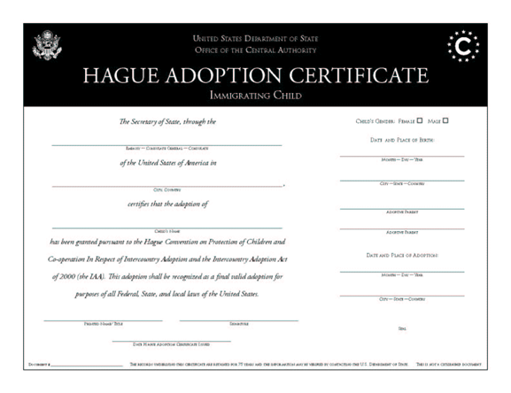
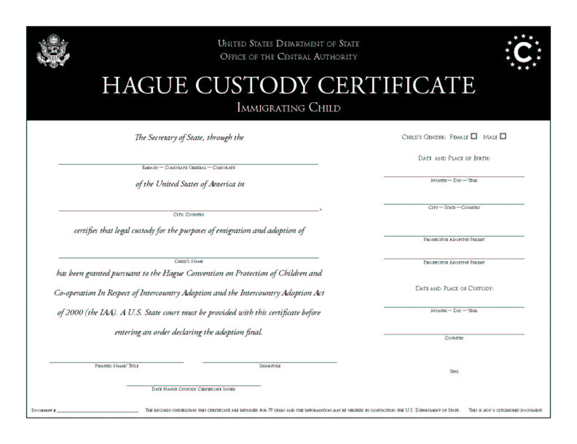

Unavailable
(CT:VISA-2160; 06-18-2025)
(Office of Origin: CA/VO)
9 FAM 502.3-1 (U) Adoption-based Classifications and Processing – Overview
9 FAM 502.3-1(A) (U) Statutory and Regulatory Authority
(CT:VISA-832; 06-03-2019)
(U) INA 101(b)(1) (8 U.S.C. 1101(b)(1)).
9 FAM 502.3-1(B) (U) Documentation of Adopted Children (Overview)
(CT:VISA-1857; 10-26-2023)
a. (U) Depending on the purpose of the travel and circumstances of the case, you should determine which of the IV options would be most appropriate, or whether other documentation, including an NIV (9 FAM 402.2-4(B)(7)), is required. See also 9 FAM 502.3-1(D).
b. (U) Properly documenting adopted children is important, and given the fairly complicated nature of orphan and Convention adoptee processing, parents and consular officers should carefully consider the nature of the intended travel.
9 FAM 502.3-1(C) (U) Other Adoption-Related Travel Provisions
(CT:VISA-1563; 06-17-2022)
a. (U) NIVs for Adoptees: See 9 FAM 402.2-4(B)(7) for information on NIV classifications for adoption cases. You should not issue an NIV to an adopted child who is immigrating to the United States because of this trip to reside with their adoptive parents.
b. (U) Parole for Adoptees: In rare cases where there are significant humanitarian concerns (i.e., natural disaster, civil disorder/war, etc.), adoptive parents may seek humanitarian parole for an adopted child. See 9 FAM 202.3-3(B)(1).
c. (U) No Classification: You should recognize that you may also encounter cases of adopted children who are not eligible for any immigrant or NIV classification, usually due to their advanced age, the circumstances of the adoption, or the parents' travel plans (e.g., children who will continue to reside overseas and do not intend to travel to the United States).
9 FAM 502.3-1(D) (U) Immigrant Visa Classification for Adoptions - Overview
(CT:VISA-1829; 09-12-2023)
a. (U) Adopted Child (IR2): INA 101(b)(1)(E) permits a U.S. citizen to petition for an unmarried, under age 21 “child” who was adopted while under the age of 16, and has been in the legal custody of, and has jointly resided with, the adopting parent or parents for at least two years. The two-year requirement does not, however, apply in certain cases involving child abuse. For more information on IR2s, see 9 FAM 502.3-2 below.
b. (U) Orphan (IR3 and IR4): INA 101(b)(1)(F) permits a U.S. citizen to petition for an “orphan” under age 16 (or under age 18 if the sibling exception applies) if:
(1) (U) the prospective adoptive parent(s) have been found suitable and eligible to adopt;
(2) (U) the child has no parents or has a sole or surviving parent who is incapable of providing proper care for them and has irrevocably released the child for emigration and adoption in writing;
(3) (U) the prospective adoptive parent(s) jointly adopted the child abroad and at least one prospective adoptive parent personally saw and observed the child before or during the adoption proceeding (IR3), or the prospective adoptive parent(s) obtained legal custody of the child for purposes of emigration and adoption (IR4); and
(4) (U) the child must be unmarried and under age 21 at the time of immigration. For more information on IR3s and IR4s, see 9 FAM 502.3-3 below.
c. (U) Convention Adoptee (IH3 and IH4): The Hague Convention on Protection of Children and Co-operation in Respect of Intercountry Adoption (Hague Adoption Convention or Convention) entered into force for the United States on April 1, 2008. INA 101(b)(1)(G) permits a U.S. citizen to petition for a child under age 16 (or under age 18 if the sibling exceptions applies) who meets the definition of a Convention adoptee if the prospective adoptive parent(s) have been found suitable and eligible to adopt. For more information on IH3s and IH4s, including transition cases, see 9 FAM 502.3-4 below.
d. (U) IR2 Adult Sibling of Convention Adoptee: An adult (over the age of 18) biological sibling of a Convention adoptee who is adopted abroad or is coming to the United States for adoption may be eligible for IR2 classification under certain circumstances. For more information on IR2 adult siblings of Convention adoptees, see 9 FAM 502.3-5 below.
e. (U) Classification Codes: 22 CFR 42.11 identifies the following classification symbols for adopted children in accordance with INA 201(b):
|
SYMBOL |
CLASS |
SECTION OF LAW |
|
IH3 |
Child from Hague Convention Country Adopted Abroad by U.S. Citizen |
INA 201(b) & INA 101(b)(1)(G) |
|
IR3 |
Orphan Adopted Abroad by U.S. Citizen |
INA 201(b) & INA 101(b)(1)(F) |
|
IR4 |
Orphan Adopted in U.S. by U.S. Citizen |
INA 201(b) & INA 101(b)(1)(F) |
|
IH4 |
Child from Hague Convention Country to be Adopted in U.S. by U.S. Citizen |
INA 201(b) & INA 101(b)(1)(G). |
9 FAM 502.3-1(E) (U) Processing Adoption Cases - Overview
(CT:VISA-1857; 10-26-2023)
a. (U) CA considers adoption cases to be of the highest priority. Consular sections should provide helpful, courteous, and expeditious assistance to U.S. citizens and maintain sound visa-issuance policies. All adoption cases must be treated with sensitivity and processed promptly to avoid hardship for the child or adopting parents.
b. (U) Consular sections should be responsive to inquiries, schedule interviews quickly, and make prompt decisions. An adoption involves both the adopting parents and the child. Even if the final resolution is that the child is ineligible for immigration, you best serve all parties by making this determination as quickly as possible. Any required field investigations or similar checks in an adoption case must be given priority over other IV and NIV cases and must be completed expeditiously so that the case may be resolved promptly. If you determine that a petition is not “clearly approvable” or that a USCIS-approved petition may have been approved in error, you should forward it to USCIS National Benefits Center without delay together with a cover memo detailing the reasons for the return.
c. (U) Correspondence on orphan and adoption issues should be shared with other concerned offices outside VO, particularly the Office of Children’s Issues (CA/OCS/CI) and, when appropriate, the Office of Fraud Prevention Programs (CA/FPP). Consular sections should use CVIS, CASC, KOCI, and KFRD tags on adoption-related correspondence to ensure timely distribution of cables to these offices. You should keep us and USCIS informed of general adoption issues, especially changes in local documentation or legal and/or procedural requirements.
9 FAM 502.3-1(F) (U) Effect of Foreign Laws and Customs on Immigrant Petitions for Adopted Children
(CT:VISA-1754; 04-10-2023)
a. (U) Some foreign states have no statutory provisions governing adoption, and in some of these states the concept of adoption is not legally recognized. Adoption in the sense required for immigration purposes generally does not exist in foreign states that apply Islamic law in matters involving family status.
b. (U) Accordingly, relationships through claimed adoptions in such countries will generally not be sufficient for visa petition purposes. Further, an adoptive relationship claimed to have been created in a country that has no statutory provisions governing adoption cannot be recognized for visa classification purposes unless the relationship is sanctioned by local custom or religious practice, judicially recognized in the country, and the relationship embraces all the usual attributes of adoption, including the same irrevocable rights accorded a natural born child.
9 FAM 502.3-1(G) (U) Validity and Effect of Foreign Adoptions
(CT:VISA-1857; 10-26-2023)
a. (U) The law of the country of the jurisdiction that issued the adoption order governs what official act constitutes an adoption in that jurisdiction. The competent authority to grant adoptions may be a judicial or administrative body depending on the law of the country where the adoption was completed.
b. (U) Simple adoption: Some countries distinguish between full or plenary adoption and simple adoption. There is usually a relevant legal distinction in the country between a simple and full adoption, such as the continuation of some right or obligation between the child and natural parents or differences in the requirements to terminate the adoptive parent-child relationship. Simple adoptions are generally insufficient for immigration purposes. However, in some countries, a simple adoption can satisfy all essential elements for an adoption for immigration purposes. To be valid for immigration purposes, the adoption must meet all 3 elements below:
(1) (U) Create a legal permanent parent-child relationship comparable to that of a natural legitimate child between a child and someone who is not already the child's legal parent; and
(2) (U) Terminate the legal parent-child relationship with the prior legal parent(s); and
(3) (U) Be valid under the law of the country (or political subdivision) granting the simple adoption
c. (U) Customary adoption: Some countries allow adoption through custom instead of, or in addition to, adoption through a judicial or administrative procedure. To be valid for immigration purposes, the adoption must:
(1) (U) Create a legal permanent parent-child relationship between a child and someone who is not already the child's legal parent;
(2) (U) Terminate the legal parent-child relationship with the prior legal parent(s); and
(3) (U) Comply with the requirements of the relevant customary law and be legally recognized in the country or place the adoption occurs.
d. (U) The child must be adopted before the child's 16th (or 18th, as appropriate) birthday according to INA 101(b)(1)(E).
e. (U) You must accept a foreign adoption decree as valid unless there is credible and probative evidence that:
(1) (U) The adoption was flawed in its execution (e.g., a court lacked (or other official body) granting the adoption lacked jurisdiction over the adoption or prior parents did not consent to the adoption or were not given proper notice of the termination of parental rights);
(2) (U) The adoption was granted due to official corruption or the use of fraud or material misrepresentation; or
(3) (U) The adoption order document is fraudulent.
(4) (U) If there is credible and probative evidence that the adoption may be invalid for one of these reasons, you must consult with L/CA before deciding not to recognize the adoption.
f. (U) Some foreign states have no statutory provisions governing adoption, and in some of these states, the concept of adoption is not legally recognized.
(1) (U) With some limited exceptions, legal adoption for immigration does not exist in foreign states that apply Islamic law in matters involving family status. A kafala order issued by a country that follows traditional Islamic law will not qualify as an adoption.
(2) (U) In some multi-ethnic or multi-religious countries, the personal status laws for each ethnic or religious group governs adoptions. In such countries, different bodies of law govern adoption for different children, even within the same neighborhood.
(3) (U) Relationships through claimed adoptions in such countries will generally not be sufficient for visa petition purposes. Also, an adoptive relationship claimed to have been created in a country which has no statutory provisions governing adoption cannot be recognized for visa classification purposes unless the relationship is sanctioned by local custom or religious practice, judicially recognized in the country, and the relationship embraces all the usual attributes of adoption, including the same irrevocable rights accorded a natural born child. However, in some countries it may be possible for a child to immigrate based on ‘legal custody for emigration and adoption,’ such that the child may be eligible for an IR-4 or IH-4 visa.
9 FAM 502.3-1(H) (U) Hague Adoptions Between Two Other Convention Countries
(CT:VISA-1301; 06-16-2021)
a. (U) Hague Adoption Convention adoptions finalized between two other Convention countries are entitled to recognition by the United States if properly certified as specified in Article 23 of the Hague Adoption Convention (see 9 FAM 502.3-4(D)(7) below). However, to form the basis for immigration benefits under U.S. law, including for purposes of Form I-130, I-730, N-600, N-600K, or an "accompanying or following to join" claim, the age, legal custody, and joint residence requirements of INA 101(b)(1)(E) must be met.
b. (U) U.S. citizen prospective adoptive parents who are deemed to be habitually resident in the United States under 8 CFR 204.303(a) and who intend to move the child to the United States in connection with a Convention adoption may seek immigration benefits for the child under INA 101(b)(1)(G).
9 FAM 502.3-1(I) (U) Effect of Legal Termination of a Foreign Adoption
(CT:VISA-1301; 06-16-2021)
(U) As with the adoption itself, local foreign law governs the validity of a termination of an adoption. However, even if a termination is legally valid, it will not adversely impact any immigration benefits already granted while the adoption was in effect. Once an adoption has been terminated, the legal relationship with the prior parent(s) can only form the basis for granting an immigration benefit to the prior parents if the legal parent-child relationship has been re-established in accordance with the local law and no immigration benefits were granted based on the adoption.
9 FAM 502.3-1(J) (U) State Level Adoption Contacts
(CT:VISA-573; 04-16-2018)
(U) See the National Foster Care and Adoption Directory.
9 FAM 502.3-2 (U) Adopted child (INA 101(b)(1)(E)) – IR2
9 FAM 502.3-2(A) (U) Statutory and Regulatory Authority
(CT:VISA-1071; 05-04-2020)
INA 101(b)(1)(E) (8 U.S.C. 1101(b)(1)(E)); INA 101(b)(1)(F) (8 U.S.C. 1101(b)(1)(F)).
9 FAM 502.3-2(B) (U) Adopted Child (101(b)(1)(E)) Classification
(CT:VISA-1857; 10-26-2023)
a. (U) Adopted Child (IR2) Definition:
(1) (U) Under INA 101(b)(1)(E), a noncitizen is defined as a child and is classified IR2, if the individual:
(a) (U) Was legally adopted while under the age of 16 (or under the age of 18, if the beneficiary’s is the birth sibling of a child adopted under 16 who meets the requirements of INA 101(b)(1)(E)) or who meets the requirements of INA 101(b)(1)(F)(i); and
(b) (U) Has been in the legal custody of, and has jointly resided with, the adopting parent(s) for at least two years.
(2) (U) A child adopted under the provisions of INA 101(b)(1)(E) is precluded from bestowing any benefit or privilege or status to their natural parents because of such parentage. No natural parent of any adopted child may, by virtue of such parentage, be accorded any right, privilege, or status.
(3) (U) A child who satisfies all the requirements of INA 101(b)(1)(E) with respect to an U.S. citizen adoptive parent/petitioner may be the beneficiary of a Form I-130, Petition for Alien Relative, and classifiable as an IR2. A child who satisfies the requirements of this subsection with respect to a principal applicant may seek any immigration benefit appropriate to a legitimate child of that applicant.
b. (U) Adoption Requirement (IR2 Adopted Child):
(1) (U) The adoption must have been both final and legal in the jurisdiction where it occurred to create a legal status comparable to that of a natural legitimate child between the adopted child and the adopting parent. The adoption must:
(a) (U) Be valid under the law of the country or place granting the adoption;
(b) (U) Create a legal permanent parent-child relationship between a child and someone who is not already the child's legal parent; and
(c) (U) Terminate the legal parent-child relationship with the prior legal parent(s).
(2) (U) See 9 FAM 502.3-1(G) above for additional information on the validity and effect of foreign adoptions.
(3) (U) In cases involving an adoptive stepparent, termination by death or legal action of the legal parent-child relationship with the prior legal parent who is not the spouse of the adoptive stepparent will be sufficient to find the adoption valid for immigration purposes.
(4) (U) Mere ongoing contact with the birth parents will not negate the termination of the legal parent-child relationship with the prior legal parent or validity of the adoption if the adoptive parents continue to exercise full parental authority over the child.
(5) (U) Adopted Child of Single Person: A child legally adopted by a single person may be considered a "child" within the meaning of INA 101(b)(1)(E), if all the requirements of that section have been met.
c. (U) Legal Custody Requirement (IR2 Adopted Child):
(1) (U) "Legal custody" means the assumption of responsibility for a minor by an adult under the laws of the state and under the order or approval of a court of law or other appropriate government entity. This provision requires that a legal process involving the courts or other recognized government entity take place. An informal custodial or guardianship document, such as a sworn affidavit signed before a notary public, is insufficient for this purpose.
(2) (U) The legal custody requirement may be fulfilled either before or after the child’s adoption. If the adopting parent was granted legal custody by the court or recognized governmental entity before the adoption, that period may be counted toward fulfillment of the two-year legal custody requirement. However, if custody was not granted before the adoption, the adoption decree shall be deemed to mark the commencement of legal custody.
d. (U) Joint Residence Requirement (IR2 Adopted Child):
(1) (U) The period of residence for which the adoptive parent(s) and child have lived together must be:
(a) (U) At least two years, before or after the adoption; the time frame in which the two years are accrued need not be continuous;
(b) (U) The petitioning adoptive parent must have exercised primary parental control during the period in which the adoptive parent seeks to establish compliance with the statutory two-year joint residence requirement:
(i) (U) The adoptive parent must have evidence of parental control, especially in cases where the adopted child resided or continues to reside in the same household with the natural parents; and
(ii) (U) The evidence may include competent, objective evidence that the adoptive parent has provided or are providing financial support and day-to-day care and have assumed the responsibility for important decisions in the child’s life.
(2) (U) Such documentation must establish that the petitioner and the beneficiary resided together in a parent-child relationship. The evidence must clearly indicate the physical living arrangements of the adopted child, the adoptive parent(s), and the natural parent(s) for the period during which the adoptive parent claims to have met the residence requirement. When the adopted child continued to reside in the same household as the natural parents during the period in which the adoptive parent/petitioner seeks to establish their compliance with this requirement, the petitioner has the burden of establishing that they or their spouse (if jointly adopted) exercised primary parental control during that period of residence. Evidence of parental control may include, but is not limited to, evidence that the adoptive parent provided financial support and day-to-day supervision of the child and owned or maintained the property where the child resided.
(3) (U) Applying Two-Year Custody and Joint Residence Requirements: The two years the child was in the legal custody of the adoptive parent do not have to be the same two years the child jointly resided with the adoptive parent. The requisite two-year custody and two-year residence may take place either before or after the adoption, but both must be completed before the child will be eligible for benefits under INA 101(b)(1)(E). Both legal custody and joint residence are counted in aggregate time. A break in legal custody or joint residence, therefore, will not affect the time already fulfilled.
e. (U) IR2 Adopted Children Do Not Have to be Orphans: Adopted children may be properly documented as children, orphans, or as Convention adoptees, and in some cases should receive NIV (see 9 FAM 502.3-1 above). A child immigrating to the United States who satisfies the requirements of INA 101(b)(1)(E) does not also have to qualify as an orphan under INA 101(b)(1)(F) or a Hague Convention Adoptee under INA 101(b)(1)(G), nor does they have to have been an orphan before the adoption. If a child qualifies under INA 101(b)(1)(E) or another definition of child, officers should not require them to pursue the orphan or Hague Adoption Convention processes.
f. (U) Adoptive Stepchildren (IR2 Adopted Child):
(1) (U) A stepparent is not required to adopt their stepchild for a Form I-130 or Form I-730 to be approved. If the parent and stepparent married before the child's 18th birthday, the stepparent/stepchild relationship can be a basis for approving a Form I-130 or Form I-730. However, the child must have been adopted by the stepparent and meet the age, legal custody, and joint residence requirements of INA 101(b)(1)(E) and the requirements in 9 FAM 502.3-2(B) before the individual can be the adopting stepparent's "child" for purposes of naturalization under INA 320 or INA 322.
(2) (U) A child can be considered the stepchild of their adoptive parent's spouse only if they qualified as the child of the adoptive parent under INA 101(b)(1) at some point when both a legal marriage existed between the adoptive parent and spouse and the child was still under age 18. For example, if a noncitizen adopts a child, fulfills the two-year legal custody and joint residence requirements per INA 101(b)(1)(E), and then marries a U.S. citizen while the adoptive child is still under age 18, the child qualifies as the stepchild of the U.S. citizen. If they marry the U.S. citizen before fulfilling the two-year custody and joint residence requirements, then the child does not become a stepchild of the American citizen for immigration purposes until those requirements are fulfilled, they are still legally married to the U.S. citizen and the child is still under age 18 when all requirements of INA 101(b)(1)(E) are met.
g. (U) Relating INA 101(b)(1)(E) to Adult or Married Sons or Daughters: An applicant may later be considered the son or daughter of an adoptive parent if they have satisfied the requirements of INA 101(b)(1)(E) with respect to that adoptive parent while still unmarried and under the age of 21. An individual who never satisfied the requirements of that subsection with respect to an adoptive parent, however, may not petition for or be the beneficiary of a petition filed by a previous parent, regardless of whether any benefit has been sought based on the adoptive relationship.
9 FAM 502.3-2(C) (U) Processing Immigrant Visas for IR2 Adopted Children
(CT:VISA-1857; 10-26-2023)
a. (U) Demonstrating Eligibility for IR2 Adopted Children Classification: An adopted child who has satisfied all the requirements of INA 101(b)(1)(E) while still unmarried and under the age of 21 qualifies as a child of the adoptive parent. An IV for such a child is processed in much the same way as an IV would be for a legitimate biological child of the same parent. In support of the Form I-130, Petition for Alien Relative, the adoptive parent and/or petitioner must provide:
(1) (U) A certified copy of the adoption decree;
(2) (U) The legal custody decree, if custody occurred before the adoption;
(3) (U) A statement showing dates and places where child resided with the parents; and
(4) (U) If the child was adopted while aged 16 or 17 years, evidence that the child was adopted together with, or after the adoption of, a natural sibling under age 16 by the same adoptive parent(s).
b. (U) Child Citizenship (IR2 Adopted Child): Many adoptive parents have questions related to the U.S. citizenship for their child. They can be referred to the USCIS website or referred to the Department website for additional information and important details about U.S. citizenship for their adopted children. In general, IR2 adopted children under the age of 18 when they are admitted to the United States are granted automatic citizenship upon admission as LPRs to reside in the legal and physical custody of the U.S. citizen adoptive parent(s). Adoptive parents must file a Form N-600, Application for Certificate of Citizenship, with USCIS or apply for a U.S. passport if they seek to obtain proof of citizenship.
9 FAM 502.3-3 (U) Orphans Adopted under INA 101(b)(1)(F) – IR3 and ir4
9 FAM 502.3-3(A) (U) Statutory and Regulatory Authority
9 FAM 502.3-3(A)(1) (U) Immigration and Nationality Act
(CT:VISA-832; 06-03-2019)
(U) INA 101(b)(1)(F) (8 U.S.C. 1101(b)(1)(F)).
9 FAM 502.3-3(A)(2) (U) Code of Federal Regulations
(CT:VISA-1; 11-18-2015)
(U) 8 CFR 204.3; 22 CFR 42.21.
9 FAM 502.3-3(A)(3) (U) Public Law
(CT:VISA-1; 11-18-2015)
(U) Child Citizenship Act of 2000, Public Law 106-395.
9 FAM 502.3-3(B) (U) Orphan (101(b)(1)(F)) Classification
9 FAM 502.3-3(B)(1) (U) Key Elements of Orphan Classification
(CT:VISA-1857; 10-26-2023)
a. (U) There are Three Key Elements in the Orphan Classification:
(1) (U) The child is under the age of 16 when a petition is filed for them (or under the age of 18 if the natural sibling of a child who has immigrated or will immigrate based on adoption by the same adoptive parent(s)) and is unmarried and under the age of 21 at the time of petition and visa adjudication (see 9 FAM 502.3-3(B)(2) below);
(2) (U) The child has been or will be adopted by a married U.S. citizen and spouse, jointly, or by an unmarried U.S. citizen at least 25 years of age (see 9 FAM 502.3-3(B)(2) and 9 FAM 502.3-3(B)(3) below); and
(3) (U) The Child is an Orphan Because Either:
(a) (U) The child has no parents because of the death or disappearance, abandonment, or desertion by, or separation from or loss of both parents (see 9 FAM 502.3-3(B)(4) paragraph b below); or
(b) (U) The child’s sole or surviving parent is incapable of providing proper care and has, in writing, irrevocably released the child for emigration and adoption (see 9 FAM 502.3-3(B)(4) paragraph c below).
b. (U) In addition, you must be satisfied that the petitioner (and spouse, if applicable) intends to enter a bona fide parent-child relationship with the orphan (see 9 FAM 502.3-3(B)(5)), and that there is no credible evidence of child-buying, fraud, or misrepresentation associated with the case (see 9 FAM 502.3-3(B)(6) below).
c. (U) Children who are determined to be orphans may be classified as an IR3 or IR4. Proper classification is very important given the Child Citizenship Act of 2000 and is addressed in 9 FAM 502.3-3(B)(7) below.
9 FAM 502.3-3(B)(2) (U) Age and Citizenship Requirements (Orphan)
(CT:VISA-1857; 10-26-2023)
a. (U) To qualify as an orphan, the adopted child must have a Form I-600, Petition to Classify Orphan as an Immediate Relative, filed on their behalf before the child’s 16th birthday, or, in the case of a child who is the natural sibling of a child who has immigrated or will immigrate based on an adoption by the same adoptive parent(s), before the child’s 18th birthday.
(1) Form I-600 must be filed, but does not have to be approved, before the beneficiary’s 16th (or 18th for natural siblings’) birthday.
(2) (U) Because an “orphan” must meet the general definition of a child in INA 101(b)(1), the beneficiary must be unmarried and under the age of 21 at all stages of petition adjudication, visa processing, and travel to the United States.
(3) (U) INA 201(f)(1):
(a) (U) Under INA 201(f)(1), whether the beneficiary of an immediate relative petition filed for a U.S. citizen's child is "under 21 years of age" is determined based on the beneficiary's age when the petition was filed. Since any Form I-600 must always be filed by the beneficiary's 16th birthday (or 18th birthday for eligible natural siblings), the beneficiary of a properly filed petition will always be considered “under 21 years of age,” for purposes of visa issuance and admission, regardless of the beneficiary's actual age. So long as the beneficiary remains unmarried at all stages of petition adjudication, visa processing, and travel to the United States, the beneficiary will remain eligible for classification and admission as an IR3 or IR4 immigrant.
(b) (U) Section 201(f) of the Act preserves the beneficiary's age as the age on the date the petition is filed only for purposes of visa issuance. It does not have this effect for purposes of acquisition of citizenship under section 320 or 322 of the Act. The beneficiary must be under the age of 18 when the conditions of section 320 or 322 are met to benefit from those provisions.
(4) (U) Public Law 106-139 of 1999 amended INA 101(b)(1)(E) and was enacted to prevent the separation of natural siblings through adoption where the circumstances of the older child are essentially those of the younger child except that the older child is age 16 or 17. Therefore, 16- or 17-year old siblings traveling with or after younger siblings who are being or have been adopted by the same adoptive parent(s) may also benefit from a Form I-600 if the petition is filed before their 18th birthday.
(5) (U) See 9 FAM 502.3-3(C)(2) below on other case-specific age-related requirements that may have to be met when the petition is filed based on USCIS’s approval of individual parents’ suitability to adopt overseas.
b. (U) Only a U.S. Citizen May File a Form I-600 for an Orphan:
(1) (U) If the petitioner is legally married, the spouse does not have to be a U.S. citizen. However, if not a U.S. citizen, the spouse must be in lawful immigration status. There are no age requirements for a married petitioner and spouse. Regardless of any legal separation or separation agreement, the spouse must sign the Form I-600.
(2) (U) If the petitioner is unmarried, they must be at least 24 years old when they submit a Form I-600A, Application for Advance Processing of an Orphan Petition, (see 9 FAM 502.3-3(C)(2)), and at least 25 years old when they file the Form I-600.
9 FAM 502.3-3(B)(3) (U) Adoption or Intent to Adopt (Orphans)
(CT:VISA-2143; 03-26-2025)
(U) A Form I-600 petitioner(s) must have adopted or intend to adopt the orphan, as demonstrated by either paragraph 1 or paragraph 2 below:
(1) (U) Evidence of a full and final adoption under the laws of the foreign sending country. For adoptions abroad where at least one of the adoptive parents did not personally see and observe the orphan before or during the foreign adoption proceeding or, if petitioners are married, where the spouses did not jointly adopt the child, the petitioner(s) must also provide evidence that the state of the orphan’s proposed residence allows re-adoption or provides for judicial recognition of the adoption abroad. The foreign adoption proceeding concludes when a competent authority, usually a court, issues the adoption decree or guardianship order.
(a) (U) Evidence of a full and final adoption would usually be in the form of an adoption decree, giving the adopted child the same rights and privileges that are accorded to a natural legitimate child (such as inheritance rights, etc.). Simple, conditional, or limited adoptions, such as those conducted under Islamic family law in some countries, are more accurately described as guardianships and are not valid adoptions for U.S. immigration purposes (see 9 FAM 502.3-1(E) above). If married, both petitioners must be party to the adoption.
(b) (U) A foreign adoption, even if documented with a valid local adoption decree, is not valid for purposes of demonstrating a full and final adoption unless at least one adoptive parent actually sees and observes the child in person at some point before or during the foreign adoption proceeding. If neither adoptive parent actually saw and observed the child in person, the foreign adoption is not full and final, although it should adequately prove legal custody of the child for purposes of emigration and adoption (see 9 FAM 502.3-3(B)(3) paragraph 2(b) below). In such a case, if the petitioners can demonstrate that their state of residence allows re-adoption, or provides for judicial recognition of the adoption abroad, and that pre-adoption requirements have been met, the petitioner has adequately shown evidence of the intent to adopt.
(c) (U) For proxy adoptions where neither adopting parent has seen the child, the Form I-600 must be filed with USCIS's National Benefits Center in the United States since the petitioner will not be physically present overseas (see 9 FAM 502.3-3(C)(3) below).
(2) (U) Evidence of an irrevocable release of the orphan for emigration and adoption from the person, organization, or competent authority that had the immediately previous legal custody or control over the orphan. The petitioner (and spouse, if applicable) must intend to, and be legally able, to adopt the child in the United States; petitioners must present evidence showing that any state pre-adoption requirements noted in the approval of their Form I-600A approval notice finding them suitable and eligible to adopt have been met (unless they cannot be complied with before the orphan’s arrival in the United States).
(a) (U) Evidence of custody of the child for purposes of emigration and adoption will vary greatly depending on local laws and regulations governing child custody. Generally, this evidence will consist of documentation from a governmental agency, a court of competent jurisdiction, an adoption agency, or an orphanage legally authorized to release the child for emigration and adoption according to local law or regulation. The evidence does not have to include specific reference to the custody being granted for purposes of emigration and adoption but should not prohibit the child’s ability to leave the country or otherwise limit the custody arrangements of the parents (i.e., guardianship for academic purposes, temporary custody, etc.). Generally, grants of guardianship under Islamic sharia law do not meet custody requirements. You should consult with L/CA and CA/VO/F on a case-by-case basis to assess individual guardianship orders under Islamic sharia law.
(b) (U) Petitioners who have custody of the child for purposes of emigration and adoption must also demonstrate that they have met or will meet the pre-adoption requirements of the state of the child’s proposed residence. The Form I-600A approval notice should note any pre-adoption state requirements that must be met. Adoptive parents must provide you with evidence that all such identified pre-adoption requirements (except those that cannot be complied with before the child’s arrival in the United States) have been met. Officers should be as flexible as possible in evaluating such evidence, opting for the minimum level of proof acceptable in each case. If questions arise regarding pre-adoption requirements, you can consult with CA/OCS/CI and CA/VO/F.
(3) (U) You need to be well versed in the adoption, custody, and guardianship laws and procedures of the receiving state, and should rely on competent local authorities to make responsible decisions about the facts surrounding child custody and final adoptions, not second-guessing whether such authorities are correctly implementing their own laws or regulations. At the same time, you must keep in mind that terms used by such local authorities (such as “abandonment”) may not always be equivalent to definitions for such terms in U.S. immigration law. In all cases, the requirements of U.S. immigration law must be met. If you have evidence of a trend involving inappropriate application of local laws or local officials’ decisions contributing to child-buying, fraud or misrepresentation in adoption cases, details of your findings should be reported to CA/FPP, CA/VO/F, and CA/OCS/CI.
9 FAM 502.3-3(B)(4) (U) Status of Birth Parents (Orphans)
(CT:VISA-1857; 10-26-2023)
a. (U) Introduction:
(1) (U) A child may qualify as an orphan because:
(a) (U) they have no parents because of the death or disappearance of, abandonment or desertion by, or separation or loss of both parents (see 9 FAM 502.3-3(B)(4) paragraph b below); or
(b) (U) they have a sole or surviving parent who is incapable of providing proper care for the child who irrevocably releases the child for emigration or adoption in writing (see 9 FAM 502.3-3(B)(4) paragraph c below).
(2) (U) These two sets of criteria are distinct and separate, and only one set of requirements must be met for the child to be considered an orphan. For example, a child whose sole parent is unable to provide proper care does not have to have been abandoned by both parents to qualify as an orphan. If one of the child’s parents has died and local courts have legally separated the child from the remaining parent, there is also no need under U.S. immigration law for the separated parent to irrevocably release the child for emigration and adoption.
(3) (U) Department of Homeland Security (DHS) regulations establish very specific meanings for terms describing an orphan’s birth parents, and specific documentation is required in each case, as outlined in 9 FAM 502.3-6 below. Questions related to whether the circumstances of and evidence submitted for a case are sufficient for orphan classification should be directed to CA/VO/F and L/CA. If primary evidence is not available, but you believe the case may still merit orphan classification, you should consult with CA/VO/F and L/CA.
b. (U) Orphan with No Parents: An orphan may have no parents due to any combination of the following six reasons: death, disappearance, abandonment, desertion, separation, or loss. A child is not required to have lost each parent in the same way. For example, if one parent disappeared and the second parent was legally separated from the child, the child may qualify as an orphan. A parent-child relationship is terminated by any one of the six circumstances described in paragraph a(1) above. See 9 FAM 502.3-6 below for the definitions of the terms “death,” “disappearance,” “abandonment,” “desertion,” “separation,” and “loss.”
c. (U) Orphan with Sole or Surviving Parent:
(1) (U) If a child is not an orphan by nature of having no parents, they may still qualify as an orphan if the child has a sole or surviving parent who is incapable of providing proper care and who has, in writing, irrevocably released the child for emigration and adoption. This is the only circumstance where a child released directly to the adoptive parent(s) can qualify as an orphan.
(2) (U) Irrevocable Release (Orphan):
(a) (U) The sole or surviving parent’s irrevocable release for emigration and adoption must be in writing, in a language that the parent is capable of reading and signed by the parent. The release must be irrevocable and without stipulations or conditions. The release may, however, identify the person(s) to whom the parent is releasing the child, even if that person is the prospective adoptive parent. If the parent is illiterate, but in an interview satisfies the adjudicating officer that they had full knowledge of the contents of the document and understood the irrevocable nature of the release, the officer may also treat the document as evidence of the release required for the orphan classification.
(b) (U) There is no requirement that the written irrevocable release be completed in the presence of a consular officer or notary, and in most cases, the birth parent’s presence should not be required for you to process an orphan case. However, when you have serious concerns with a case regarding the natural parent’s intent or understanding of the release, you may request an interview with the natural parent. If there are concerns that purported natural parents may not be the biological parents of the child, DNA tests may be used to affirm that the true natural parent is releasing the child for emigration and adoption. You should consult with CA/VO/F and FPP regarding DNA use in orphan determinations.
(c) (U) In countries where the law provides a birth parent the right to revoke their release for a specified period after granting such release, even up until the final adoption order including any revocation or appeal period thereafter, the release is not considered irrevocable until such time has passed, or a court order indicates that the birth parent was aware of the right to revoke and waived that right. For example, if the law provides that a birth parent has two weeks after the final adoption order to revoke their consent to the adoption, the birth parent’s release would not become irrevocable until the two-week period after the issuance of the adoption order has elapsed. If you have any questions regarding whether a release is irrevocable, you may request an AO from L/CA.
(3) (U) If Sole or Surviving Parent Remarries: Generally, to qualify as a stepchild under the INA, the marriage creating the stepchild status must have occurred before the stepchild's 18th birthday. USCIS, however, has adopted a narrow interpretation of "stepchild" under INA 101(b)(1)(B) solely for determining whether a child is an "orphan" as the child of a sole or surviving parent. Under this interpretation, a sole or surviving parent’s new spouse must have a legal parent-child relationship with the child for the child no longer to be considered the child of a sole or surviving parent.
(a) (U) A sole or surviving parent who has married (or remarried) will still be considered the child's sole or surviving parent if the petitioner establishes that the sole or surviving parent’s new spouse has no legal parent-child relationship to the child under the law of the foreign sending country.
(b) (U) To Establish a Legal Parent-Child Relationship:
(i) (U) The stepparent must have adopted the child; or
(ii) (U) The stepparent must have obtained legal custody of the child; or
(iii) (U) Under the law of the foreign sending country, the marriage between the parent and stepparent must have created a legal parent-child relationship between the stepparent and the child before the child's 18th birthday.
(c) (U) If you are unsure of the legal status of the relationship between a stepparent and a child, contact L/CA.
9 FAM 502.3-3(B)(5) (U) Bona Fide Parent-Child Relationship, Severing of Previous Relationship (Orphans)
(CT:VISA-1301; 06-16-2021)
a. (U) Petitioners seeking to bring an orphan to the United States must intend to enter a bona fide parent-child relationship with that orphan. A bona fide parent-child relationship implies the provision of care, support, and direction to the orphan, without the intent to profit financially or otherwise from the presence of the child.
b. (U) Adoptions should permanently sever previous parental ties. Therefore, a caretaker relationship in which the adopting parents intend to return the child to their natural parents or former guardians in the future would generally not constitute a bona fide parent-child relationship. Also, as provided in INA 101(b)(1)(F), no natural parent or prior adoptive parent of an orphan may obtain any immigration benefit because of their relationship with an orphan.
9 FAM 502.3-3(B)(6) (U) Child-Buying, Fraud, Misrepresentation (Orphans)
(CT:VISA-1754; 04-10-2023)
(U) Orphan classification is not appropriate for cases involving evidence (or an admission) of child-buying, fraud, or misrepresentation.
(1) (U) Child-Buying:
(a) (U) A child is not eligible for orphan classification if the prospective adoptive parent(s) or adoptive parent(s), or a person or entity working on their behalf, have given or will give money or other consideration (i.e., an item of objective value) either directly or indirectly to the child’s parent(s), agent(s), other individual(s), or entity(ies) as payment for the child or as an inducement to release the child. You must carefully review allegations of child-buying, and carefully weigh the evidence available to substantiate such charges.
(b) (U) Reasonable payment for necessary activities such as administrative, court, legal, translation, and/or medical services related to the adoption proceedings are not precluded and should not be automatically conflated with child buying. Foreign adoption services can be and adoption facilitators who assist in processing individual cases expect to be paid for their services. However, under U.S. law governing intercountry adoption service providers' compensation must be for services rendered and should not be an incentive or contingent fee for locating or placing a child for adoption. Moreover, such compensation must be "reasonable" based on the services rendered and considering the country in which the service was provided and other factors. A person who offers, gives, solicits, or accepts inducement by way of compensation intended to influence or affect in the United States or a foreign country the relinquishment of parental rights or the giving of parental consent relating to the adoption of a child may face criminal or civil penalties. Cash given directly to a biological parent may be justifiable if it is directly related to an expense such as administrative, legal, court, translation, and/or medical services related to the adoption proceedings that do not influence or affect the relinquishment of parental rights. However, adjudicators should be alert to expenditures that fall outside the parameters of these reasonable or permissible payments and should always further investigate patterns of fact that suggest child-buying. If there is evidence of child-buying, either direct or circumstantial, or an admission of child-buying, the child is not eligible for orphan classification and the Form I-600 petition should be returned to the USCIS National Benefits Center as "not clearly approvable" or as a consular return for possible revocation. Contact CA/VO/F and L/CA if you discover evidence of suspected child buying. If there is concern about an adoption service provider's activities, including the activities of agents of the provider in foreign countries, contact OCS/CI.
(2) (U) Fraud or Misrepresentation:
(a) (U) A child may not be eligible for orphan classification if there is evidence of fraud or material misrepresentation with the purpose of using deception to obtain visas for children who do not qualify. In many cases, both the U.S. citizen adoptive parents and adoptive children may be unwitting victims of fraud perpetrated upon them by unscrupulous agents misrepresenting material facts about these children. If the fraud involves stolen or kidnapped children, biological parents may also be victims. In some cases, biological parents may also have been misled about the permanent nature of their separation from the child.
(b) (U) You must scrutinize documentation presented in support of orphan cases. In some cases, it may be necessary to conduct field investigations, DNA tests, or additional interviews to investigate fraud indicators. Because adoption cases are multi-faceted, a successful anti-fraud program should engage the entire adoption community, including agents, lawyers, orphanages, foster care providers, medical personnel, judges, local officials, and law enforcement personnel.
(c) (U) You should keep in mind, however, that the responsibility for enforcing local laws and for protecting the rights of children and biological parents rests primarily with local authorities. Also, anti-fraud efforts must be balanced with the mandate to provide service to U.S. citizens and the need to be sensitive to the victims of fraud. Whenever possible, you should use fraud prevention techniques that do not unnecessarily delay processing or create further hardship for fraud victims.
9 FAM 502.3-3(B)(7) (U) Immediate Relative (IR3 vs. IR4) Orphan Classifications and the Child Citizenship Act
(CT:VISA-2019; 07-03-2024)
a. (U) Orphans May Be Classified as Either IR3 or IR4: It is important you issue the correct visa classification to an orphan. The visa classification has implications for the child's acquisition of U.S. citizenship. The correct classification of IVs issued to orphans is vital due to the Child Citizenship Act of 2000 (Public Law 106-395) and the Citizenship for Children of Military Members and Civil Servants Act of 2020. Due to the Child Citizenship Act, orphans properly admitted to the United States as LPRs, based on the IR3 classification, while under the age of 18 who are residing in the legal and physical custody of the U.S. citizen adoptive parents(s) will automatically acquire U.S. citizenship, while those admitted based on the IR4 classification will not immediately acquire citizenship (see 9 FAM 502.3-3(B)(7) paragraphs e and f below for additional details). You should take care to classify visas correctly and to inform prospective parents of the significance of the IV classification their child receives. See 9 FAM 502.3-1(C) above on adopted children who should be issued other types of visas.
b. (U) Although proper classifications should be noted on Form I-600, Petition to Classify Orphan as an Immediate Relative, or petition approval notices, the final determination of proper classification for the visa rests with the adjudicating consular officer. Travel plans and circumstances change, such that parents expecting to apply for an IR3 visa for their adopted child may not be eligible for an IR3 visa because they were not able to complete the adoption abroad and/or at least one parent did not personally see and observe the child before the foreign adoption proceedings. If the child cannot be classified as an IR3, you may approve the case as an IR4 classification if the IR4 criteria below have been met.
c. (U) The IR3 Classification is Appropriate for Orphans Who Meet the Following Criteria:
(1) (U) The orphan was the subject of a full, final, and legal adoption abroad by the petitioner (and spouse, if married) before visa issuance; and
(2) (U) An adoptive parent personally saw and observed the child before or during the foreign adoption proceedings. If the petitioner is married, at least one of the adoptive parents must have personally seen and observed the child before or during the adoption proceedings. Seeing and observing the child for the first time during the visa interview after a full, final, and legal adoption has been completed does not constitute seeing and observing the child during the foreign adoption proceeding.
d. (U) The IR4 Classification is Appropriate for Orphans Who Meet the Following Criteria:
(1) (U) The orphan will be adopted by the petitioner (or spouse, if applicable) after being admitted to the United States (requires both petitioner intent and satisfaction of any applicable pre-adoption requirements of the home state); and
(2) (U) The petitioner (or someone working on his and/or her behalf) must have secured legal custody of the orphan under the laws of the foreign sending country sufficient to allow the child to depart from the foreign sending country and adopted elsewhere.
e. (U) Upon being legally admitted into the United States as an LPR and assuming the IR3 classification was appropriate, a child under the age of 18 who resides in the legal and physical custody of the U.S. citizen adoptive parent(s) will automatically acquire U.S. citizenship as of the date of admission to the United States. The USCIS Buffalo Field Office processes newly entering IR3 visa packets, sending Certificates of Citizenship to eligible children without requiring a Form N-600, Application for Certificate of Citizenship. Adoptive parents may also request a U.S. passport for the child.
f. (U) IR4 visa recipients become LPRs upon admission to the United States, but do not automatically acquire U.S. citizenship upon admission. A child who enters the United States on an IR4 visa acquires U.S. citizenship as of the date they satisfy all requirements, including having a full and final adoption decree in the United States (assuming the child is under age 18 when adopted). While citizenship is generally acquired as of the date of the final adoption in such cases, beneficiaries must file Form N-600, Application for Certificate of Citizenship, and submit it in accordance with the instructions. It will be adjudicated by the local USCIS Field Office that holds jurisdiction over the child's permanent residence to receive a Certificate of Citizenship. Alternatively, adoptive parents may request a U.S. passport for the child as evidence of citizenship. You should inform the adoptive parents they need to take additional steps before the child turns 18 for the child to obtain U.S. citizenship through them. You may give the adoptive parents the Fact Sheet Securing U.S. Citizenship for Your Child: Information for Adoptive Parents of Children Issued IH-4 and IR-4 visas.
g. (U) Many adoptive parents have questions related to U.S. citizenship for their child. They can be referred to the USCIS website or the State Department website for additional information and important details about citizenship for adopted children.
h. (U) B2 Visas: U.S. citizen parents of children adopted overseas who reside overseas and do not intend to reside in the United States may apply for naturalization on behalf of the child by filing Form N-600K, Application for Citizenship and Issuance of Certificate under INA 322, in accordance with the instructions. The naturalization process for such a child cannot take place overseas except for children of U.S. citizen military members who are authorized to accompany and reside with their U.S. citizen military parent(s) abroad pursuant to official orders. The child will need to be in the United States temporarily pursuant to a lawful admission and maintaining such lawful status to complete naturalization processing. You may accept applications for B-2 NIVs to attend Section 322 naturalization hearings (see 9 FAM 402.2-4(B)(7)) and should approve such cases when appropriate. You should not pressure such parents and children to undergo the IV process if they do not intend to reside in the United States. If you encounter an I-600 petition for a child that does not intend to reside in the United States, this may impact the acquisition of citizenship and the N-600K would be the more appropriate route for naturalization.
9 FAM 502.3-3(C) (U) Processing Orphan Visas
9 FAM 502.3-3(C)(1) (U) Orphan Case Processing – Introduction
(CT:VISA-1563; 06-17-2022)
a. (U) Because processing orphan cases varies somewhat from standard IV processing, the following section examines each of the stages for processing these cases. Questions related to processing of such cases should be directed to CA/VO/F; classification questions should be directed to L/CA (with a copy to CA/VO/F); and reporting on countries’ adoption practices should be directed to CA/OCS/CI (with a copy to CA/VO/F).
b. (U) Processing an Orphan Case Requires the Following Steps:
(1) (U) Prospective adoptive parents establish their suitability and ability to provide a proper home environment for the adopted child and eligibility to adopt, usually through an approved Form I-600A, Application for Advance Processing of an Orphan Petition (see 9 FAM 502.3-3(C)(2) below);
(2) (U) Prospective adoptive parents establish that the child may be classified as an orphan, as demonstrated by an approved Form I-600, Petition to Classify Orphan as an Immediate Relative, and confirmed through the Form I-604, Determination on Child for Adoption (see 9 FAM 502.3-3(C)(3) and 9 FAM 502.3-3(C)(4) below); and
(3) (U) A visa application is filed on behalf of the child, providing all necessary documentation for production of the visa and demonstrating that no ineligibilities apply.
c. (U) Where required or when requested, USCIS alerts the consular section, or NVC via email or Visa 37 cable, regarding information on petitions for orphans and approval of Form I-600A, Application for Advance Processing of an Orphan Petition. Upon receipt of this email, you will notify the petitioner of the steps to be taken for further processing of the case.
9 FAM 502.3-3(C)(2) (U) Establishing Prospective Adoptive Parent(s)’ Suitability (Form I-600A, Application for Advance Processing of an Orphan Petition)
(CT:VISA-2160; 06-18-2025)
a. (U) Form I-600A Introduction, Purpose:
(1) (U) USCIS has responsibility to determine if prospective adoptive parent(s) are suitable and eligible to adopt a foreign-born child. You may assist in this process by providing information or necessary forms to prospective adoptive parents or biometric services (taking fingerprints). You will also need to refer to USCIS suitability approvals to adjudicate orphan petitions or visa applications (see 9 FAM 502.3-3(C)(2) paragraph d below).
(2) (U) INA 101(b)(1)(F) requires that USCIS be satisfied that proper care will be furnished to a child if admitted to the United States as an orphan. Form I-600A allows the prospective adopting parent(s) to demonstrate that they are financially, logistically, and otherwise prepared and suited to adopt a child internationally and are eligible to adopt a foreign-born child. Form I-600A is not designed to evaluate a child’s classification as an orphan. Because Form I-600A reviews suitability and eligibility of the prospective adoptive parents to adopt, rather than a specific beneficiary’s orphan eligibility, a Form I-600A may result in approval for prospective adoptive parents to adopt multiple children. Prospective adoptive parents are often encouraged to begin the overseas adoption process early by filing Form I-600A before identifying a specific child to adopt.
(3) (U) You will sometimes adjudicate visas for orphan applicants where the suitability and eligibility determination has been made based on a Form I-600 approval filed with USCIS. See 9 FAM 502.3-3(C)(2) paragraph f below for more information about these cases.
(4) (U) See a copy of Form I-600A at the USCIS Forms website.
b. (U) Filing the Form I-600A, Application for Advance Processing of Orphan Petition:
(1) (U) U.S. citizen prospective adoptive parent(s) (regardless of place of residence) file the Form I-600A with USCIS in the United States in accordance with the form instructions.
(2) (U) You may not adjudicate a Form I-600A. However, you may need to collect fingerprints for applicants and adult members of the household living abroad and forward to USCIS in the United States.
(3) (U) Form I-600A is available on USCIS’s website. The petitioner and spouse, if the petitioner is married, must sign Form I-600A. The application must be signed and submitted with the following documentation:
(a) (U) Proof of U.S. citizenship of the petitioner;
(b) (U) Proof of marriage of petitioner and spouse (if married);
(c) (U) Home study (see 9 FAM 502.3-3(C)(2) paragraph b(4) below);
(d) (U) Proof of compliance with state pre-adoption requirements; and
(e) (U) Form I-600A/I-600 Supplement 1, Listing of Adult Member of the Household (if applicable); and
(f) (U) Fees.
(4) (U) A home study must be performed by an accredited agency as defined in 22 CFR part 96. The home study is used to evaluate the prospective adoptive parent(s)’ suitability to raise a child. The home study typically includes the general background of the prospective adoptive parent(s), a description of the living accommodations where the child will reside, the finances of the prospective adoptive parent(s), their medical and psychological health, responses to specific questions about child abuse and criminal history, and a final detailed statement about the child they are recommended to adopt. The home study must include a statement recommending the parents for adoption.
(a) (U) 8 CFR 204.311 provides specific guidance on who can perform home studies when an accredited agency does not perform the home study in the first instance.
(b) (U) The home study must contain the home study preparer’s specific recommendation of the PAPs for adoption and the reasons for the recommendations. The home study preparer must specify the number of children the prospective adoptive parent(s) are recommended to adopt and the specific country they are recommended to adopt from. The home study preparer’s recommendation must state if there are any specific restrictions to the adoption such as a child’s age, sex, or other characteristics. If the home study preparer has recommended the prospective adoptive parents for a handicapped or special needs adoption, this fact must also be clearly stated.
(5) (U) As part of Form I-600A suitability and eligibility application, the applicant, spouse (if married), and each additional adult member of the household must be fingerprinted.
(a) (U) For applicants residing in the United States, Form I-600A is filed and then USCIS notifies each person in writing of the time and location where they must go to be fingerprinted (usually done electronically. Questions regarding required fingerprint updates for these individuals should be directed to the USCIS office adjudicating Form I-600A for further instructions.
(b) (U) For applicants residing overseas you must complete the FD-258, Applicant Fingerprint Card and collect fingerprinting fees for each applicant, spouse, and adult member of the household. Any required updates for these individuals that require additional fingerprinting should be handled by collecting the fingerprints on the FD-258 and sending it to the USCIS National Benefits Center (for Form I-600s pending with the USCIS National Benefits Center). When collecting paper fingerprints, you should record the service using ACRS code 98; see additional guidance on fingerprint collection behalf of USCIS at 9 FAM 602.2-2(A)(2).
(c) (U) Consular sections should also accommodate requests to collect paper fingerprints for adult members of the petitioner’s household who reside overseas.
(d) (U) For petitioners (and adult family members in the household) whose 15-month fingerprint clearances have expired and who appear in person at consular sections with invalid (expired) fingerprint clearances, CA/VO/F assists to expedite new fingerprint clearances. You should email the CA/VO/F analyst with the adoption portfolio, who will consult with USCIS. If USCIS updates the fingerprint clearance, USCIS will send an updated suitability approval notice letter to the consular section through the normal channels (i.e., from the USCIS National Benefits Center through the National Visa Center for Form I-600s filed in the United States). Family members should request new fingerprint clearances by contacting the USCIS National Benefits Center directly at nbc.adoptions@uscis.dhs.gov generally no more than three months before expiration; CA/VO/F can assist in expediting those existing requests.
c. (U) Approval of Form I-600A, Application for Advance Processing of an Orphan Petition:
(1) (U) USCIS approval of Form I-600A will be noted on the original Form I-600A and on a I-171H, Notice of Favorable Determination Concerning Application for Advance Processing of Orphan Petition or Form I-797C, Notice of Action, sent to the petitioner and a visas 37 cable sent to the IV-issuing post with jurisdiction over any country where the petitioner intends to file a Form I-600 for the adopted child (if a country is indicated). You may not accept Form I-171H/Form I-797C as proof of Form I-600A approval but may accept the original approved Form I-600A, a visas 37 cable, or faxed or e-mail notice of an approved Form I-600A if transmitted directly from USCIS or the Department. Upon request by the prospective adoptive parents, you may transfer Form I-600A approval notices to other IV-issuing posts by cable, fax, or email. Information on approval of home study updates or updated fingerprint clearances will be provided by USCIS or the Department by cable, fax, or e-mail. You should not require applicants to present home studies, background information, or the original Form I-600A to process orphan cases.
(2) (U) Because USCIS adjudicators consider other factors besides the home study in reviewing Form I-600A applications, a I-600A approval notice may show different criteria for the children who may be adopted than those listed in the home study originally prepared on the parents. In such cases, the I-600A approval criteria governs. If no criteria are listed, and if no pre-adoption requirements are noted, you should assume that there are no age- or sex-related restrictions on which children may be adopted, and that no pre-adoption requirements exist. If the I-600A approval notice does not specifically mention approval to adopt a special needs or disabled child, you should assume that the parents were not approved for such an adoption. If you encounter cases where two different approval notices for the same case provide differing information (for example, the I-600A with its approval stamp does not note restrictions on the age or sex of the adopted child, but the visas 37 cable does), contact CA/VO/F for assistance.
(3) (U) Form I-600A approval is valid for 15 months from the date of its approval, and adoptive parents filing a petition for a child to be classified as an orphan must file an I-600 within the 15-month validity period. Prospective adoptive parents may request an extension of an I-600A approval from USCIS through the submission of Form I-6001A/I-600 Supplement 3 (Request for Action on Approved Form I-600A/I600). Further instructions can be found at www.uscis.gov/i-600a. Must file an I-600 within the 15-month validity period. If granted, the extension is for an additional 15 months from the date of the initial Form I-600A approval period expiration. If Form I-600 is not filed within that period, the I-600A is considered to have been abandoned. You may not extend the validity period of an I-600A approval more than one time. If the prospective parent(s) wishes to file an orphan petition after their I-600A expires, they must file a new I-600A and submit required documentation to USCIS (or include additional information with the I-600 filed with USCIS , see 9 FAM 502.3-3(C)(2) paragraph f below. Further action on the case must be put on hold until the new I-600A is approved.
(4) (U) Separately, the fingerprint clearance obtained during the Form I-600A process has a 15-month validity period. Dates of fingerprint clearances should be provided in the Form I-600A approval documentation (if they are not, request assistance from CA/VO/F). If an orphan petition is not approved within the 15-month clearance period, adoptive parents must request updated fingerprint clearance per procedures outlined in 9 FAM 502.3-3(C)(2) paragraph b(5) above. You may not extend the validity of the fingerprint clearance and must wait for updated clearance information, either by notice from USCIS' National Benefit Center or by email from CA/VO/F.
(5) (U) It is important to remember that the Form I-600A application approval is valid for 15 months and the associated fingerprints check is also valid for 15 months. The fingerprints must be valid at Form I-600 petition approval and visa issuance. The Form I-600A approval must be valid when the Form I-600 petition is filed but does not need to remain valid until visa issuance.
(6) (U) Prospective adoptive parents must contact USCIS if there are significant changes in their circumstances after filing the Form I-600A . PAPs should contact USCIS if there are significant changes in circumstance after the I-600A approval as well. Such changes include significant changes in the petitioner’s household such as birth of a child, a change in residence , or a significant decrease in financial circumstances (petitioner loses their job, etc.). USCIS will generally then request an updated home study and send notice of an updated Form I-600A approval if USCIS finds the prospective adoptive parents remain suitable and eligible to adopt. A change in marital status of the prospective adoptive parent(s) will require a new Form I-600A and new home study. You have no authority to request updated home studies. If you learn of changes in the petitioner(s)’ circumstance, and the petitioner has not requested and obtained an updated I-600A approval, you should contact CA/VO/F for assistance in consulting with the USCIS National Benefit Center. See 9 FAM 502.3-3(C)(2) paragraph e below on fraud or misrepresentation issues with the Form I-600A.
d. (U) Use of Form I-600A, Application for Advance Processing of Orphan Petition Information: Since suitability issues are solely the responsibility of USCIS, you are not involved in the I-600A adjudication and have no authority to review USCIS’ determinations regarding adoptive parent(s)’ suitability or eligibility to adopt. However, you must review I-600A approvals for the following:
(1) (U) Form I-600 Filing: As noted in 9 FAM 502.3-3(C)(3) below, you are only permitted to accept Form I-600 petitions if they have acceptable evidence of a valid I-600A approval (and fingerprint clearance) for the petitioner(s).
(2) (U) Form I-600 and Visa Adjudication: You may only approve I-600 petitions and/or visas for children who meet the conditions noted in the I-600A approval. For example, if the I-600A approval was only for one child under the age of two or was made without noting special approval to adopt a child with special needs, you could not approve a Form I-600 petition or visa for a 10-year-old or a child with special needs, respectively. Similarly, if state pre-adoption requirements were identified and have not been met, you cannot approve the Form I-600 petition or IV.
(3) (U) Fraud Concerns: You may encounter fraud in orphan cases, and information from the Form I-600A may occasionally be used to corroborate information that you send to USCIS in “not clearly approvable” or “consular return” memorandums. See 9 FAM 502.3-3(C)(3) paragraph c and 9 FAM 502.3-3(C)(5) paragraph b below for additional information on processing such cases.
e. (U) Fraud or Misrepresentation in the Form I-600A, Application for Advance Processing of an Orphan Petition: In cases where you have a well-founded and substantive reason to believe that an I-600A approval was obtained based on fraud or material misrepresentation or have knowledge of a change in material fact after the approval of the I-600A, you should consult with the USCIS National Benefits Center on disposition of the case.
f. (U) Using the Form I-600, Petition to Classify Orphan as an Immediate Relative, to Demonstrate Suitability:
(1) (U) Adoptive parents who already know which child they intend to adopt and who intend to file their paperwork with USCIS may submit proof of their suitability and eligibility to adopt (per guidelines in 9 FAM 502.3-3(C)(2) paragraph b above) with their Form I-600 petition for orphan classification for the child. In such cases, USCIS will usually determine if the parents are suitable and eligible to adopt first, and then determine if the child is eligible to be classified as an orphan. If the parents are suitable and eligible to adopt, USCIS will issue a suitability approval notice.
(2) (U) Parents are not obligated to use the Form I-600 petition in such cases. Under current USCIS regulations, parents can choose to demonstrate their suitability and eligibility to adopt overseas by filing the I-600A “advance processing” application and then filing the I-600), or by filing the I-600 alone with evidence to support both their suitability and eligibility to adopt, and the child’s eligibility for orphan classification. While filing both suitability/eligibility and classification-related documentation on an already identified child using the I-600 alone may be more convenient for some adoptive parents, many prospective adoptive parents may find that doing so would unnecessarily delay or even prevent processing on their case. If the parents intend to file the I-600 overseas at the consular section, you will be unable to accept the I-600 petition unless USCIS has already approved a Form I-600A. Also, for parents who have not yet identified the child they intend to adopt, filing a Form I-600A application first will result in faster processing of an IV for their child once identified.
9 FAM 502.3-3(C)(3) (U) The Orphan Petition (Form I-600, Petition to Classify Orphan as an Immediate Relative)
(CT:VISA-2124; 02-05-2025)
a. (U) Form I-600 is used to document a child’s classification as an orphan under INA 101(b)(1)(F). A separate Form I-600 must be filed for each child, even if the associated Form I-600A approval may have been for multiple children. An orphan can only be issued an IV if they are the beneficiary of an approved Form I-600.
b. (U) Filing the Form I-600, Petition to Classify Orphan as an Immediate Relative:
(1) (U) Prospective adoptive parents may file Form I-600 on behalf of the adoptive child with USCIS in the United States, or with a consular officer overseas, per the guidelines below:
(a) (U) Prospective adoptive parents residing in the United States may file Form I-600 with USCIS in the United States, or with a consular officer at the IV processing post with jurisdiction over the country from which they wish to adopt, or at the consular section with jurisdiction over the country in which the child is physically present, if they are physically present there. Adoptive parents involved in proxy adoptions (see 9 FAM 502.3-3(B)(3) paragraph (1)(c) above) should file petitions in this way.
(b) (U) Prospective adoptive parents currently residing overseas may file Form I-600 with USCIS in the United States or with a consular officer at the IV processing post with jurisdiction over the country from which they wish to adopt or with the consular section with jurisdiction over the country in which the child is physically present if they are physically present there. Adoptive parents who intend to continue residing overseas should generally not be pursuing IV processing for the child.
(c) (U)You may accept a Form I-600 from a nonresident petitioner if the petitioner has been or will be physically present, at some point during the adoption or IV process (until visa issuance), within the jurisdiction of the U.S. embassy or consulate designated to act on the petition. The petitioner must have an already approved Form I-600A to file an I-600 with the U.S. embassy or consulate. For consular officers, it is anticipated that petitions for orphan cases should generally be considered humanitarian cases and accepted (see 9 FAM 504.2-4(B)(1) paragraph a(1)(b).
(d) (U) Prospective adoptive parents adopting children who will soon turn 16 may wish to file Form I-600 petitions on behalf of the children with USCIS in the United States since USCIS may accept and consider as properly filed a Form I-600 without all the documents listed in 9 FAM 502.3-3(C)(3) paragraph b(3)(e) below (although the documents will ultimately be required for petition approval.) You, however, should not accept (or consider having been properly filed) petitions submitted without all required documentation as listed in 9 FAM 502.3-3(C)(3) paragraph b(3).
(2) (U) You May Only Accept Form I-600 (Permit it to be Filed) Under the Following Circumstances:
(a) (U) You have notice of a Form I-600A approval and both the approval and fingerprint clearances are still valid (see 9 FAM 502.3-3(C)(2) paragraph c(3) and (4) above);
(b) (U) The U.S. citizen petitioner does not already have a Form I-600 pending for the same beneficiary; and
(c) (U) The U.S. citizen petitioner must be physically present in the adopted child’s country of origin at some point during the adoption or IV process, which is until a consular officer issues the visa. A designated representative may submit a Form I-600 petition on the petitioner(s)’ behalf, if the Form I-600 contains the original signature(s) for the petitioner (and spouse, as applicable) and is accompanied by the proper fee, if required.
(3) (U) If the Required Circumstances are Present for You to Accept a Form I-600:
(a) (U) Completing and Signing the Petition: You must ensure that the Form I-600 has been completely filled out and signed by the petitioner (and spouse, if applicable) after having been completed. A third party may not sign the petition on the petitioner’s (or spouse’s, if the petitioner is married) behalf, even with a power of attorney. You may not accept an I-600 submitted by mail.
(b) (U) Spouses: If the petitioner is married, their spouse must sign the petition. If only one spouse travels abroad to file the Form I-600, you should verify that the non-traveling spouse did not sign the petition before all the information relating to the child had been entered onto the form. If the Form I-600A has been approved for a married couple, either spouse may sign Form I-600 as the “prospective petitioner” with the other signing as the “spouse” (unless the married couple consists of one U.S. citizen and one noncitizen, in which case the U.S. citizen must be the applicant on the Form I-600A and the petitioner on the Form I-600).
(c) (U) Fees: A prospective adoptive parent who filed the Form I-600A with USCIS may file a Form I-600 for one child without any additional fee. If more than one I-600 is being filed based on an I-600A, the petitioner must pay an I-600 filing fee for each child beyond the first, unless the petitions are for children who are siblings (in which case no additional fees would be collected).
(d) (U) Documents: The petitioner must present the following documents with the Form I-600 for the petition to be considered properly filed:
(i) (U) Child’s original birth certificate, or if such certificate is not available, a written explanation together with secondary evidence of identity and age (example: a re-issued birth certificate showing adoptive parents);
(ii) (U) Evidence that the child either has no parents or has a sole or surviving parent incapable of providing proper care who has irrevocably released the child for emigration and adoption in writing, per guidelines in 9 FAM 502.3-3(B)(4) paragraphs (b) and (c) above; and
(iii) (U) Evidence of adoption or intent to adopt, per guidelines in 9 FAM 502.3-3(B)(3) above.
(e) (U) Any foreign language documents submitted with the Form I-600 petition must be accompanied by a full English translation, which the translator has certified as complete and correct, and by the translator’s certification that they are competent to translate the foreign language into English.
(f) (U) For any Form I-600 filed with a consular officer, originals of required documents must be submitted for review with Form I-600. You should make copies of relevant documents for the IV packet, noting that originals were seen and returned in the case notes field in the Immigrant Visa Overseas system.
(g) (U) USCIS permits petitioners to submit copies of some documents when accepting a Form I-600; petitioners should be directed to the I-600 instructions for rules regarding copies of required documents when filing the petition with USCIS.
(h) (U) 8 CFR 204.3 states that documents used in the filing of an orphan petition must have been obtained in accordance with the laws of the foreign-sending country. A foreign-sending country is defined as the country of the orphan’s citizenship, or, if not permanently residing in the country of citizenship, the country of the orphan’s habitual residence. This excludes a country to which the orphan travels temporarily, or to which they travel either as a prelude to or in conjunction with their adoption and/or immigration to the United States.
(4) (U) You should be sensitive to legal requirements that the Form I-600 be filed before an orphan reaches the age of 16, or age 18 if the sibling exception applies. You should ensure that prospective parents are aware of age-related concerns and, whenever possible and subject to the guidelines above, should provide a reasonable opportunity for parents to file the I-600 and accompanying documentation before the child’s 16th birthday.
c. (U) Consular Officer Adjudication of Form I-600, Petition to Classify an Orphan as an Immediate Relative:
(1) (U) Once the Form I-600 has been properly filed, you should review it and the accompanying documentation. Based on that review and completion of the Form I-604, Determination on Child for Adoption (see 9 FAM 502.3-3(C)(4) below), you will determine whether the child is eligible for immigrant classification as an orphan.
(2) (U) You have been given authority to approve Form I-600 petitions that are found to be clearly approvable. Clearly approvable in this context means that:
(a) (U) Form I-600 petitions and supporting documentation, Form I-604, (see 9 FAM 502.3-3(C)(4) below), and other relevant documentation establish by a preponderance of the evidence that the child qualifies as an orphan according to INA 101(b)(1)(F) per criteria outlined in 9 FAM 502.3-3(B)(1) above;
(b) (U) There are no unresolved issues of child-buying, fraud or material misrepresentation associated with the case (see 9 FAM 502.3-3(B)(6) above);
(c) (U) The child meets criteria identified in the Form I-600A approval (i.e., age, sex, special needs, etc., if any);
(d) (U) Any state pre-adoption requirements have been met if the child will be adopted in the United States;
(e) (U) There are no significant changes within the petitioner's household or a change in the number of children or characteristics of the child(ren) whom the petitioner was approved to adopt that would necessitate an amended or updated home study (see 9 FAM 502.3-3(C)(2) above); and
(f) (U) Unless an exception applies (see 9 FAM 502.3-3(C)(5) paragraphs c and g), the petitioner has established that an accredited or approved adoption service provider is acting as the primary provider in the case (see 9 FAM 502.3-3(C)(5) paragraphs b and h below).
(3) (U) If you find the Form I-600 clearly approvable, you must document the approval in the top block on the first page. The approval annotation should include the “approved” notation, classification of the petition and section of law under which petition was approved (see 9 FAM 502.3-3(B)(7) above), petition filing date, petition approval date, and the signature and title (including post) of the approving officer.
(4) (U) If a petition does not appear to be “clearly approvable,” you may give the petitioner the opportunity to respond to questions or issues that may be quickly or easily resolved. In cases involving a Form I-600 or a visa application where any state pre-adoption requirements have not yet been met, prospective adoptive parents should be given the opportunity to demonstrate that they have satisfied any unmet requirements. If the problem with the case is that evidence presented varies from or contradicts that originally submitted with the petition but does not contradict the fact that the child qualifies under INA 101(b)(1)(F), the case should be processed to conclusion. For example, a late registered birth certificate may be irregular, but if other evidence shows that the child qualifies as an orphan by a preponderance of the evidence, the petition should be approved.
(5) (U) In some cases, further investigation may be warranted due to doubts related to the documents (or absence of documents) presented, contradictory information, or indications of child-buying, fraud, and other inappropriate practices. You should work with the Fraud Prevention Unit, regional security officer (RSO), and, if appropriate, local officials and contacts to further investigate if necessary. Investigation procedures vary from post to post, since the best means of collecting necessary information regarding the child’s eligibility as an orphan and history often depend on local conditions. Some possible elements of an investigation may include interviews with the child (if of sufficient age), social workers, orphanage representatives, the prospective adoptive parents, or natural (biological) parent(s), and relevant government officials. When fraud is detected or indicated, a full field investigation may be warranted. Fraud investigations should be conducted as expeditiously as possible. Consult with CA/FPP and CA/VO/F for assistance.
(6) (U) You do not have the authority to deny a Form I-600 under any circumstances. If you determine that the petition is not clearly approvable, you should send the Form I-600, all supporting documentation (including the completed Form I-604, the “not clearly approvable” memo, and any other related documentation) expeditiously to USCIS’ National Benefits Center via NVC. Your memo should explain the facts of the case and your actions to try to resolve outstanding issues. Include any evidence supporting why it is not clearly approvable with relevant details including, if applicable, why the child does not meet any of the orphan definitions. In addition, you should notify the petitioner in writing of this action and provide contact information for the USCIS National Benefits Center. At your discretion, you may provide a brief explanation of your “not clearly approvable” decision.
d. (U) Approval of Form I-600, Petition to Classify Orphan as an Immediate Relative:
(1) (U) Depending on where the Form I-600 was filed and adjudicated, you will encounter different proof that USCIS approved the Form I-600. Any of the following should be considered sufficient evidence of Form I-600 approval:
(a) (U) Original Form I-600 with approval notations from USCIS or a consular officer;
(b) (U) Electronic notification from USCIS or the Department (e.g., the National Visa Center) of petition approval; or
(c) (U) Officer verification in consular systems and applications, including the USCIS Person Centric Query Service (PCQS) accessible in the CCD.
(2) (U) You may not issue an IR3 or IR4 visa unless you have evidence of Form I-600 approval and a favorable Form I-604 determination that the child should be properly classified as an orphan. See 9 FAM 502.3-3(C)(4) below. As with other visa-related petitions, you should consider a USCIS or consular officer notice of petition approval as prima facie evidence of the child’s entitlement to classification as an orphan, which was examined by USCIS during the petition process. However, the approval of a petition by USCIS does not relieve the applicant of the burden of establishing visa eligibility. You should confirm that the facts claimed in the petition are true during the visa interview and you should complete the Form I-604 determination. Additionally, you benefit from cultural and local knowledge that adjudicators at USCIS do not possess, making it easier to spot misrepresentations in qualifications. While validity of the relationship between the petitioner and the beneficiary is presumed to exist, if you have specific, substantial evidence of misrepresentation in the petition process or discover facts unknown to DHS at the time of approval, you may consider returning the petition to DHS. See 9 FAM 601.13.
9 FAM 502.3-3(C)(4) (U) Overseas Orphan Determinations
(CT:VISA-1563; 06-17-2022)
a. (U) Purpose of Form I-604, Determination on Child for Adoption:
(1) (U) Form I-604 is primarily used to document consular officer or overseas USCIS officer determinations that a child should be properly classified as an orphan. The form was created as a checklist for officers to ensure that key criteria for the orphan classification have been reviewed, as elaborated in 9 FAM 502.3-3(B)(1) above.
(2) (U) If USCIS has articulable concerns that can only be resolved through the Form I-604 determination, then USCIS may request that consular sections conduct the Form I-604 determination before USCIS adjudication of an orphan petition. In such cases, the USCIS office should provide you with a copy of all pertinent documents in the case and a memorandum explaining the reason for requesting the inquiry.
b. (U) Responsibility for Completion of Form I-604:
(1) (U) Form I-604, Determination on Child for Adoption, must be completed for all orphan cases, regardless of where the Form I-600 is filed. Use ACRS code 101 to account for all Form I-604s completed.
(a) (U) If Form I-600 is filed with and approved by USCIS in the United States, you must complete Form I-604 before visa approval.
(b) (U) If Form I-600 is filed overseas, Form I-604 is completed by you before petition approval.
(c) (U) When USCIS requests that the consular section verify orphan eligibility of an individual before domestic adjudication of the orphan petition, you should complete Form I-604. If the Form I-604 is completed before the adjudication of the Form I-600, it does not need to be completed again following adjudication of the Form I-600.
(2) (U) Form I-604 is designed as an internal worksheet to ensure proper processing of orphan cases. The form is not available to the public on the USCIS website and adopting parents and other entities should not be requested to directly assist in completion of the form.
c. (U) Completion and Disposition of Form I-604 by Consular Officers:
(1) (U) Consular officers completing Form I-604 based on Form I-600 approved in the United States or on Form I-600 filed overseas (9 FAM 502.3-3(C)(4) paragraphs b(1)(a) and (b) above) should complete all sections of Form I-604 except question 2. The completed Form I-604 should then be attached to Form I-600 and remain with the petition regardless of the outcome of the case.
(2) (U) Consular officers completing Form I-604 before adjudication of the Form I-600 domestically with USCIS based on a request by USCIS (see 9 FAM 502.3-3(C)(4) paragraph b(1)(c) above) should complete items 1 and 5 through 15 of the Form I-604, as applicable. If any item does not apply at the time of the inquiry, you should note in block 15 why it is inapplicable. Sign and date on page 4 under “Officer Performing Inquiry.” You should send the completed Form I-604 with any relevant documentary evidence directly to the USCIS National Benefits Center.
(3) (U) Approval of Form I-600 and an orphan visa require a favorable Form I-604 determination that the child should be properly classified as an orphan. For cases where the Form I-604 reflects that orphan classification is not appropriate, you should follow guidance in 9 FAM 502.3-3(C)(3) paragraph c(4)-(6) above, 9 FAM 502.3-3(C)(5) paragraph b below, and 9 FAM 504.2-8 for returning petitions to USCIS as not clearly approvable or for possible revocation.
(4) (U) Completion of Form I-604 should not be the basis for delays in processing cases. The I-604 itself does not trigger a requirement that investigations or field visits be done on each case, although it provides a mechanism for documenting any such reviews deemed necessary by the adjudicating officer to address potential classification of fraud issues. While some Form I-604 determinations may take weeks or months to complete, no investigation should last longer than six months without the concurrence of the Department.
d. (U) Form I-604 Determination on Child for Adoption (Example): A fillable Form I-604 is available on CAWeb.
9 FAM 502.3-3(C)(5) (U) Requirement for an Accredited or Approved Primary Provider in Each Orphan Case
(CT:VISA-1857; 10-26-2023)
a. (U) Effective July 14, 2014, the Intercountry Adoption Universal Accreditation Act of 2012 (UAA) (Public Law 112-276) extends the accreditation requirements and standards applicable in Convention adoption cases to orphan (non-Convention) cases under INA 101(b)(1)(F). As of that date, the UAA requires that unless one of the exceptions listed below in paragraphs (c) or (g) applies, an accredited or approved adoption service provider (ASP) must act as the primary provider in every orphan case. ASPs providing adoption services on behalf of prospective adoptive parents (PAPs) in orphan cases must be accredited or approved or be a supervised or exempted provider. See 9 FAM 502.3-4(B) paragraph b below for more on the accreditation process.
b. (U) Unless one of the exceptions listed below in paragraphs (c) or (g) applies, before you issue an IV based on a USCIS approved Form I-600 petition or approve a Form I-600 petition filed at the consular section, the petitioner must establish through the evidence in the record that an accredited or approved adoption service provider is acting as the primary provider in the case (see 9 FAM 502.3-3(C)(3) above). A name, address, and contact information listed for an accredited or approved ASP on the Form I-600 alone does not establish that an accredited or approved adoption service provider is acting as the primary provider in the case, without further evidence. Evidence of a primary provider may include, but is not limited to:
(1) (U) a letter from the accredited or approved primary adoption service provider stating that it is acting as the primary provider in the case, or a letter or other documentary evidence demonstrating that the accredited or approved ASP is involved in the provision of an adoption service if only one accredited agency or approved person is involved in providing adoption services in the case, or a letter or other documentary evidence demonstrating that the adoption service provider has child placement responsibility if more than one accredited agency or approved person is providing adoption services;
(2) (U) a copy of the service plan (detailing the six adoption services); or
(3) (U) a copy of a contract between the petitioner and the primary adoption service provider demonstrating that the accredited agency or approved person is acting as the primary provider in the case.
(4) (U) If you have any questions about whether the evidence in the record constitutes sufficient evidence of a primary provider, consult with L/CA and the USCIS National Benefits Center.
c. (U) The UAA does not apply to orphan cases that are considered "UAA grandfathered." A case is UAA grandfathered if:
(1) (U) the prospective adoptive parent(s) (PAP(s)) filed Form I-600A or Form I-600 before July 13, 2013;
(2) (U) the PAP(s) applied to the relevant competent authority before July 13, 2013 (the application need not designate a specific child); or,
(3) (U) the PAP(s) accepted a match proposed by a competent authority or appropriate entity before July 13, 2013.
d. (U) Officers should first determine if a case is grandfathered under option 1 above, and then look to options 2 and 3 only if option 1 does not apply.
e. (U) Under option 2, officers should consider the following in determining whether the PAP(s) “submitted an application to the relevant competent authority”:
(1) (U) An application filed with a competent authority need not designate a specific child. What constitutes an application will vary from country to country. You must consider the country-specific adoption process.
(2) (U) “Competent authority” is defined at 22 CFR 96.2 and means “a court or governmental authority of a foreign country that has jurisdiction and authority to make decisions in matters of child welfare, including adoption.” This must be a court or governmental authority. The focus is on a competent authority with jurisdiction and authority when the application was filed. Whether the authority is still in operation or still has jurisdiction later in the process is irrelevant.
f. (U) Under option 3, officers should consider the following in determining whether the PAP(s) “accepted a match proposed by a competent authority or appropriate entity”:
(1) (U) The match may either be proposed by a competent authority (defined above) or an “appropriate entity,” which includes a licensed orphanage or ASP authorized by the country to make the placement.
(2) (U) Contracting with or submitting documents to an ASP alone is not sufficient. The ASP must be authorized to make the placement and have done so. PAP(s) contracting with an ASP to provide adoption services in the case or submitting documents to the ASP alone shall not be construed as meeting Section 2(c)(2) of the UAA.
(3) (U) The date of the match can generally be inferred from any official records of the placing agency concerning the match or from contemporaneous records of the ASP. If that is not available, you may consider other credible evidence. If you cannot determine the date of match, the match cannot be the basis for determining the case is UAA grandfathered.
g. (U) Even if a case is not UAA grandfathered, if some adoption services were provided before the UAA effective date and some were provided after the UAA effective date, no accredited or approved primary provider is required if you determine, in consultation with L/CA, that no adoption services were provided on or after July 14, 2014, by any person or entity other than a public foreign authority, competent authority, or public domestic authority. If adoption services were provided before July 14, 2014, you do not need to determine whether those services were provided by an accredited primary service provider. See the UAA Transition Guidance for example scenarios.
h. (U) If a primary provider is required:
(1) (U) You should first review the evidence in the record to determine whether the petitioner has established that an accredited or approved adoption service provider is acting as the primary adoption service provider. You may only contact the primary provider if the petitioner provides signed and dated Privacy Act written consent.
(2) (U) If the petitioner has not established that an accredited or approved adoption service provider is acting as the primary adoption service provider, you should:
(a) (U) For USCIS-approved petitions: informally encourage the petitioner to provide evidence described in paragraph b above. If the petitioner is not responsive, the evidence presented after informal attempts still does not establish that an accredited or approved adoption service provider is acting as the primary provider in the case, or you have any questions, contact L/CA and the USCIS National Benefits Center before returning the approved petition for review and possible revocation. If L/CA and the USCIS National Benefits Center agree that the petition should be returned, include the petition, supporting documents, the completed Form I-604, and any other relevant documentation.
(b) (U) When adjudicating petitions filed at the consular section, encourage the petitioner to provide evidence described in paragraph b above. If the petitioner is not responsive, or the evidence presented after informal attempts still does not establish that an accredited or approved adoption service provider is acting as the primary provider in the case, or you have any questions, contact L/CA and the USCIS National Benefits Center before referring the case as "not clearly approvable." If L/CA and the USCIS National Benefits Center agree that the petition should be referred as "not clearly approvable," for these reasons, include the petition, supporting documents, the completed Form I-604, and any other relevant documentation with the “not clearly approvable” memo to USCIS.
9 FAM 502.3-3(C)(6) (U) Accreditation Requirements in Form I-604 Determinations when USCIS Already Approved Form I-600
(CT:VISA-2124; 02-05-2025)
a. (U) When conducting a Form I-604 orphan determination for a USCIS-approved petition, you must determine if a primary provider is required, or if an exception applies (see 9 FAM 502.3-3(C)(5) above).
b. (U) If a primary provider is required, follow the steps in 9 FAM 502.3-3(C)(5) above to determine whether to return the approved petition to USCIS for review and possible revocation.
c. (U) After appropriate consultation with L/CA, CA/VO/F, and/or CA/FPP and USCIS, as appropriate. Situations that may warrant you returning an approved petition (along with supporting documents, the completed Form I-604, and any other relevant documentation) to the USCIS National Benefits Center include, but are not limited to:
(1) (U) The Form I-600 petition, supporting documentation, Form I-604, and/or other relevant documentation establish that the child does not meet the definition of an orphan in INA 101(b)(1)(F), per criteria outlined in 9 FAM 102.3-1;
(2) (U) There are unresolved issues related to the bona fides of the parent-child relationship, child-buying, fraud, or material misrepresentation associated with the case (see 9 FAM 502.3-3(B)(5) and 9 FAM 502.3-3(B)(6) above);
(3) (U) The child does not fit all criteria identified in the Form I-600A approval (i.e., age, sex, special needs, etc., if any);
(4) (U) Any state pre-adoption requirements have not been met if the child will be adopted in the United States;
(5) (U) There is a significant change within the petitioner's household or a change in the number of children or characteristics of the child(ren) whom the petitioner was approved to adopt that would necessitate an amended or updated home study (see 9 FAM 502.3-3(C)(2) above); or
(6) (U) The petitioner has not established that an accredited or approved adoption service provider is acting as the primary provider in the case when one is required (see 9 FAM 502.3-3(C)(5) above).
9 FAM 502.3-3(C)(7) (U) Orphan Visa Applications
(CT:VISA-1857; 10-26-2023)
a. (U) Requirements for the Orphan Immigrant Visa (IR3 or IR4) Interview:
(1) (U) IV applications on behalf of orphans may be submitted to IV-issuing posts once Form I-600 has been approved and you have received notification of such approval per 9 FAM 502.3-3(C)(3) paragraph d above and Form I-604 has been completed. You should give prospective adoptive parents realistic expectations about the time necessary for you to complete the Form I-604 determination and the subsequent steps in the process.
(2) (U) After the consular section has a DS-260 for the child, you should schedule the visa interview. The IV fee should be collected at the visa interview. You may receive the DS-260 before completing the Form I-604 determination, but the visa fee collection and visa adjudication should not take place until the Form I-604 has been performed. The applicant should have evidence of orphan classification (see 9 FAM 502.3-3(B)(1) above) and all standard IV supporting documentation (see 9 FAM 504.4-4, 9 FAM 504.4-7, and 9 FAM 302.8-2(B)), including:
(a) (U) Birth certificate;
(b) (U) Passport or other appropriate travel document;
(c) (U) Two photographs taken according to specifications in 9 FAM 303.6-2(A)(1);
(d) (U) Police, military, or prison records, if required (rare); and
(e) (U) In some cases, a Form I-864 Affidavit of Support (see paragraph d(4) below) I-864EZ.
(i) (U) For applicants in the IR3 classification, if you determine that the orphan will likely automatically become a citizen under the Child Citizenship Act of 2000 or where the PAP(s) have at least 40 quarters of coverage under the Social Security Act (see 9 FAM 601.14-3 paragraphs b(1) and b(2)), then no affidavit of support is required. An orphan properly classified as an IR3 who resides in the United States in the legal and physical custody of the adoptive U.S. citizen parent pursuant to a lawful admission for permanent residence while under the age of 18 will likely automatically become a citizen under INA 320. All other IR3 visa holders must have a Form I-864 filed on their behalf. For applicants in the IR4 classification where the PAP(s) have at least 40 quarters of coverage under the Social Security Act no affidavit of support is required. In these instances, you should make a case note documenting that no I-864, Affidavit of Support, is required.
(ii) (U) For other applicants in the IR4 classification, the petitioner must file a Form I-864. Sponsors who file Form I-864s must be domiciled in “any of the several States of the United States, the District of Columbia, or any territory or possession of the United States.” INA 213A(f)(1)(C). See 9 FAM 502.3-4(B) paragraph a(4) and 9 FAM 502.3-4(C)(2) paragraph b(2) for further information on domicile requirements, including how a U.S. citizen living abroad temporarily could be considered domiciled in the United States. If a petitioner cannot satisfy the domicile requirement, the petitioner fails to qualify as a sponsor as that term is defined by INA 213A(f). If the petitioner does not meet the definition of sponsor to submit the Form I-864, then a joint sponsor cannot be accepted, and the applicant must be refused pursuant to INA 212(a)(4). For information on Form I-864, see 9 FAM 601.14.
(3) (U) You must also ensure that the medical exam is completed before adjudicating the visa application. The IV processing fee can be collected the time of the visa interview.
b. (U) Adjudicating Orphan (IR3 or IR4) Application and Classification:
(1) When adjudicating orphan IV applications, you must confirm that the applicant qualifies as an orphan. Approval of Form I-600 should be considered prima facie evidence of orphan eligibility, which was examined by USCIS during the petition process. However, the approval of a petition by USCIS does not relieve the applicant of the burden of establishing visa eligibility. You should confirm that the facts claimed in the petition are true during the visa interview. This is important in cases where I-600 was adjudicated in the United States, without the possible benefit of seeing the parties involved and having more in-depth knowledge of the documents and fraud patterns in the local country.
(2) (U) If the petition appears to have been approved in error, the Form I-604 determination reveals new facts not known to USCIS when the Form I-600 was approved that may have resulted in a denial of the petition, or if you develop substantive evidence of material fraud or misrepresentation in the Form I-600, then the petition should be returned to the USCIS National Benefits Center with a recommendation for revocation, per instructions in 9 FAM 504.2-8. However, if the evidence is at variance with that originally submitted with the petition but does not contradict the fact that the child qualifies under INA 101(b)(1)(F), the case should be processed to conclusion.
c. (U) Determining Orphan Ineligibilities:
(1) (U) Ineligibilities for Orphan Cases – Introduction: Orphan visa applicants are subject to all the standard INA 212(a) ineligibilities, although in practice almost all adopted (or to-be-adopted) children will not be affected by criminal, security, immigration violation, and other ineligibilities due to their age. The two areas where orphans are treated somewhat differently deal with medical issues, INA 212(a)(1)(A)(ii) as amended on vaccination requirements and INA 212(a)(4) (public charge), both discussed below.
(2) (U) Orphan Medical Issues:
(a) (U) As with any other IV case, if a child is found to have a Class A medical condition, the child will be ineligible for a visa under INA 212(a)(1) until and/or unless that condition is waived or otherwise overcome. The two key medical issues that are treated somewhat differently with orphan cases are vaccinations and evidence of significant medical conditions revealed in the panel physician’s medical exam.
(b) (U) Vaccinations:
(i) (U) IR3 and IR4 applicants under 10 years of age are exempt from INA 212(a)(1)(A)(ii) vaccination requirements if the adoptive parent(s) signs an affidavit attesting that the child will receive the required vaccination within 30 days of the child’s admission to the United States or at the earliest time that is medically appropriate. The affidavit is Form DS-1981, and once completed, it should be attached to the medical exam form and included in the IV packet.
(ii) (U) Only children whose adoptive parents have signed such an affidavit will be exempt from the vaccination requirement. In situations where the adopting parent(s) objects to the child receiving vaccinations on religious or moral grounds, the applicant will still require an individual INA 212(g)(2)(C) waiver from USCIS (see 9 FAM 302.2-6(D)(1)).
(c) (U) Significant Medical Conditions:
(i) (U) You should ensure that adoptive parents understand that the orphan petition and visa application are not meant to provide comprehensive evaluations of an adoptive child’s health. Parents should be encouraged to arrange private evaluations by qualified medical professionals, preferably ones versed in childhood development if they have health-related concerns about the child. However, if a previously unknown significant medical condition is revealed through the panel physician’s medical exam, you must furnish the adoptive parents with available information concerning the affliction or disability. This is especially important in cases where the parents have not physically observed the child.
(ii) (U) If a serious medical condition is discovered, particularly one which is a physical, mental, or emotional condition that would affect the child’s normal development, processing should be suspended until you receive a notarized statement from the adoptive parent, or parents if married, indicating awareness of the child's affliction and willingness to proceed with orphan processing. An abstract of a home study made by a social service agency, countersigned by the adoptive parent(s), is acceptable if it notes the parent(s) are aware of the child's condition and nevertheless willing to adopt the child. An appropriate entry in item 14 of the Form I-600 initialed by the adoptive parent(s) is also acceptable. If the adoptive parents choose not to pursue the petition, you should forward it, along with an explanation and all other pertinent information, to USCIS’ National Benefits Center.
(iii) (U) A child with a serious medical condition or disability may sometimes be considered a child with special needs, and therefore subject to the requirement that the adoptive parents’ Form I-600A approval includes reference to parents’ ability to adopt a special needs child. In cases where a child is later determined to have special needs and parents’ suitability approvals do not note approval to adopt a special needs child, the petition and related documentation should be forwarded to USCIS for possible revocation or reconsideration of suitability determinations. You should notify the prospective parents of the action. Consult with CA/VO/F and L/CA before returning cases like this to USCIS.
(3) (U) Public Charge: USCIS has determined that Form I-864, Affidavit of Support under INA 213A, is not required for IR3 applicants who will likely automatically acquire U.S. citizenship following admission to the United States. However, IR4 applicants (as well as IR3 applicants not eligible for U.S. citizenship under CCA, e.g., those over age 18 at the time of admission, etc.) must have properly completed and signed Form I-864 with all required supporting documents submitted on their behalf by the petitioner. In general, the adoptive parents’ ability to care for a child is evaluated during Form I-600A adjudication, such that an IR3 or IR4 applicant is unlikely to become a public charge. Except where Form I-864 is required, the I-600A serves as proof that the underlying requirements of INA 212(a)(4) have been met. Additional financial evidence should only be required if the child has an illness or defect not addressed by the approved I-600A that would entail significant financial outlay or if other unusual circumstances prevail.
(4) (U) Waivers: If you determine that the orphan has a visa ineligibility and a waiver exists for that ineligibility, you should direct the petitioner(s) to public information on the waiver process on USCIS’s website.
d. (U) Adjudication of Orphan Visa Application, Issuance of the Visa:
(1) (U) If you confirm that the child may be classified as an orphan, that all required documentation to issue the IV have been submitted, and that no ineligibilities exist (or those that exist have been waived), you should approve the visa application. If the application cannot be approved, you must explain orally and in writing the reason for the refusal and any possible remedies available.
(2) (U) If you issue the IR3 or IR4, you should follow standard IV procedures (see 9 FAM 504.10). Form I-604 should be included as part of the IV package, immediately following Form I-600 in the packet. Care should be paid to ensuring proper classification of the visa as an IR3 or IR4 (see 9 FAM 502.3-3(B)(7) above).
(3) (U) In accordance with 9 FAM 504.10-2(A), IVs for orphans should generally be issued with a six-month validity period. However, a child legally adopted by a U.S. citizen and spouse while they are serving abroad in the U.S. armed forces, employed abroad by the U.S. Government, or temporarily abroad on business, may be issued an IV for a longer period (not to exceed three years) to accommodate adoptive parents’ intended return to the United States upon completion of the military service, employment, or business.
(4) (U) Upon receipt of the visa, adopting parents (or those traveling with the child) should be informed of Child Citizenship Act implications of the type of visa issued (see 9 FAM 502.3-3(B)(7) above) and referred to Department and USCIS websites for additional information.
9 FAM 502.3-4 (U) Convention Adoptees Adopted under INA 101(b)(1)(G) – IH3 and IH4
9 FAM 502.3-4(A) (U) Statutory and Regulatory Authority
9 FAM 502.3-4(A)(1) (U) Immigration and Nationality Act
(CT:VISA-1; 11-18-2015)
(U) INA 101(b)(1)(E)-(G) (8 U.S.C. 1101(b)(1)(E)-(G); INA 101(c)(1) (8 U.S.C. 1101(c)(1)); INA 201(b)(2)(A) (8 U.S.C. 1151(b)(2)(A)); INA 201(f) (8 U.S.C. 1151(f)); INA 204 (8 U.S.C. 1154); INA 322 (8 U.S.C. 1433).
9 FAM 502.3-4(A)(2) (U) Code of Federal Regulations
(CT:VISA-1; 11-18-2015)
(U) 8 CFR 204.309(a), 8 CFR 204.309(b)(1); 8 CFR 204.309(b)(3); 8 CFR 204.313(c)(2)-(3); 8 CFR 322.2; 8 CFR 322.3; 22 CFR 42.21; 22 CFR Part 96.
9 FAM 502.3-4(A)(3) (U) Public Law
(CT:VISA-1; 11-18-2015)
(U) Intercountry Adoption Act of 2000, Public Law 106-279; Child Citizenship Act of 2000, Public Law 106-395.
9 FAM 502.3-4(B) (U) Convention Adoptee Overview
(CT:VISA-1857; 10-26-2023)
a. (U) Convention Adoptee – Introduction:
(1) (U) The Hague Convention on Protection of Children and Co-operation in Respect of Intercountry Adoption (Convention) is a multilateral treaty that establishes international legal standards for the adoption of children habitually resident in one country party to the Convention by persons habitually resident in another party to the Convention. It establishes procedures to be followed in such adoption cases and imposes safeguards to protect the best interests of the children at issue. It also provides for international recognition of adoptions that occur in accordance with the Convention. In the United States, the implementing legislation for the Convention is the Intercountry Adoption Act of 2000 (IAA). To implement the Convention, the IAA made two significant changes to the Immigration and Nationality Act (INA):
(a) (U) It created a new definition of “child,” found at INA 101(b)(1)(G), applicable only to children being adopted from Convention countries. (The definition of “child” in INA 101(b)(1)(F) continues to apply to orphans being adopted from any country that is not a party to the Convention); and
(b) (U) It incorporated Convention procedures into the immigration process for children covered by INA 101(b)(1)(G), most directly by precluding approval of an immigration petition under this classification until the Department has certified that the child was adopted or legal custody of the child was granted in accordance with the Convention and the IAA. Separately, pursuant to the IAA, adoptions or grants of custody that have been so certified by the Department are to be recognized as such for purposes of all Federal, State, and local laws in the United States. For more background information on the Convention, the IAA, and U.S. obligations under the Convention, see 7 FAM 1796.
(2) (U) In accordance with the United States’ Convention obligations, you must treat Convention adoptee cases with sensitivity and process them as quickly as is reasonably possible to avoid hardship for the child or prospective adoptive parents (PAPs).
(3) (U) To adjudicate Convention adoptee cases, it is essential that you are thoroughly familiar with the Convention adoptee classification. For a detailed explanation of the Convention adoptee classification, see 9 FAM 502.3-4(C) below.
(4) (U) Things to Keep in Mind to Ensure Correct Adoption-Related Visa Classification:
(a) (U) Depending upon whether the country of habitual residence has a treaty relationship with the United States under the Convention and the circumstances of the case, adopted children could receive IVs based on the Convention adoptee (IH3 or IH4, per INA 101(b)(1)(G)), orphan (IR3 or IR4, per INA 101(b)(1)(F)—see 9 FAM 502.3-3 above), or adopted child (IR2, per INA 101(b)(1)(E)—see 9 FAM 502.3-2 above) classifications. Adult siblings of Convention adoptees may in some cases also be eligible for IR2 classification (see 9 FAM 502.3-5 below). For purposes of this document, a “Convention country” is a country that has a treaty relationship with the United States under the Convention.
(b) (U) For countries in which the Convention entered into force after April 1, 2008, the Convention does not apply if the adoptive parents obtained a final adoption of a child before the date the Convention entered into force for the other Convention country. See uscis.gov and adoptions.state.gov for additional information about specific transition rules for other countries in which the Convention entered into force after the United States. (Such cases are not Convention cases and should be processed under the orphan classification based on 9 FAM 502.3-3(B) guidelines.)
(c) (U) An adopted child immigrating to the United States and habitually resident in a non-Convention country cannot be classified as a Convention adoptee under INA 101(b)(1)(G).
(d) (U) Adopted children who meet the requirements of INA 101(b)(1)(E) may, under certain circumstances, be classified as IR2 children, even if they are habitually resident in a Convention country (see 9 FAM 502.3-2 above).
(e) (U) An adopted child whose parents do not intend to return immediately to the United States may qualify for NIV issuance to come to the United States for naturalization under INA 322. Under 8 CFR 322.3(b)(1)(xii), a Form I-800, Petition to Classify Convention Adoptee as an Immediate Relative, must be approved for the child for the child to seek naturalization under INA 322. See 9 FAM 402.2-4(B)(7) and 8 CFR 322.2.
(f) (U) In rare cases, some adopted children qualify for NIVs as family members of other NIV holders (see 9 FAM 502.3-1 above), or as short-term tourists or for purposes of a naturalization hearing under INA 322 (see 9 FAM 402.2-4(B)(4) and 9 FAM 402.2-4(B)(7)). However, you should not issue an NIV to an adopted child who is immigrating to the United States to reside there with their adoptive parents or to a child who will be adopted in the United States. However, if a petitioner is a United States citizen who is domiciled in the United States but posted abroad temporarily under official orders as a member of the Uniformed Services, as defined in 5 U.S.C. 2101, or as a civilian officer or employee of the United States Government, issuance of an NIV may be possible if the adjudicating officer concludes that the child has a residence abroad that he does not have an immediate intention of abandoning and that the trip to the United States is temporary in nature.
b. (U) Entities Performing Convention Adoption Functions:
(1) (U) Under the Convention, the IAA, and the implementing regulations, only certain entities may perform certain functions in Convention adoptions. For further information, consult 7 FAM 1796 and 22 CFR Part 96.
(2) (U) The Department is the United States Central Authority under the Convention. Within the Department, CA/OCS/CI has the lead in coordinating the day-to-day work of the Central Authority. In accordance with the IAA and the Convention, some of the Central Authority’s case-specific Convention responsibilities have been delegated to Adoption Service Providers (ASPs) accredited or approved by Department-designated Accrediting Entities. Other Central Authority duties will be performed by other government bodies. In each case, there will be a “primary provider” who has overall responsibility for the case.
(3) (U) Either public bodies or authorized ASPs must be used for the following Convention adoptee visa processing-related activities:
(a) (U) Completion and approval of home study by accredited or temporarily accredited ASPs. Approved, exempted, or supervised ASPs, however, may complete a home study, if the study is approved by an accredited or temporarily accredited ASP—see 22 CFR Part 96.;
(b) (U) Transmission of report on parents (i.e., home study, USCIS approval notice, and other evidence) to Convention country Central Authority (see 9 FAM 502.3-4(D)(3) below);
(c) (U) Receipt of Convention country’s Central Authority report on the child for transmission to the PAP(s) (see 9 FAM 502.3-4(D)(3) paragraph c below);
(4) (U) Like the United States, other Convention countries may also delegate their Central Authority functions to accredited or approved ASPs or other government entities. Other Convention countries may also choose to work with only certain U.S. accredited or approved ASPs, or they may require U.S. ASPs to be accredited under the laws and standards of that country. (See 7 FAM 1796.3 for information on U.S. accreditation/approval requirements, relationships between accredited/approved ASPs and other providers, and U.S. regulatory requirements for ASPs.)
(5) (U) You can verify accredited or approved status of U.S. ASPs by checking the list on CA/OCS/CI’s website at the Department’s website. The primary ASP, however, should already be entered into the “Adoption Service Provider” field of the IVO system before the case comes to the consular section. Questions or concerns related to an adoption service provider’s accreditation or approval status should be directed to CA/OCS/CI.
9 FAM 502.3-4(C) (U) Convention Adoptee (INA 101(b)(1)(G)) Classification
9 FAM 502.3-4(C)(1) (U) Convention Adoptee Classification Summary
(CT:VISA-1857; 10-26-2023)
a. (U) There are five key elements to the Convention adoptee classification. All the following must be true for a child to be eligible for the Convention adoptee classification:
(1) (U) The child is under the age of 16 when a petition is filed on their behalf (taking into account special rules on filing dates for children aged 15-16), or before their 18th birthday if they are the natural sibling of another foreign national child who has immigrated or will immigrate based on adoption by the same adoptive parents; is unmarried; and is habitually resident in a country that has a treaty relationship with the United States under the Convention (see 9 FAM 502.3-4(C)(2) paragraph a below);
(2) (U) A person must be under the age of 21 to be considered a “child.” INA 201(f), as amended by the Child Status Protection Act, provides, however, that a child who is over 21 will be deemed to be under 21 if certain requirements are met (see 9 FAM 502.1-1(D)). Since a Form I-800 must be filed before the child’s 16th birthday, a Convention adoptee will almost always meet the requirements of INA 201(f) and so will generally be eligible to immigrate even if over 21.
(3) (U) The child has been adopted or will be adopted by a married U.S. citizen and spouse jointly, or by an unmarried U.S. citizen at least 25 years of age, habitually resident in the United States, whom USCIS has found suitable and eligible to adopt, with the intent of creating a legal parent-child relationship (see 9 FAM 502.3-4(C)(2) paragraph b, 9 FAM 502.3-4(C)(3) and 9 FAM 502.3-4(C)(4) below). At the provisional approval stage, the petitioner must not have adopted or obtained legal custody of the child yet, unless that adoption or legal custody has been voided vacated, annulled, or terminated by the country of origin or the Central Authority indicates that, under the law of that country, the petitioner is not able to obtain an order voiding, vacating, annulling or otherwise terminating the adoption or custody order (see 8 CFR 204.309(b)(1));
(4) (U) The child’s birth parents (or parent if the child has a sole or surviving parent), or other legal custodian, individuals, or entities whose consent is necessary for adoption, freely gave their written irrevocable consent to the termination of their legal relationship with the child and to the child’s emigration and adoption (see 9 FAM 502.3-4(C)(5) below);
(5) (U) There is no requirement that an adoptive parent personally see and observe the child before or during the adoption proceedings.
(6) (U) If the child has two living birthparents who were the last legal custodian who signed the irrevocable consent to adoption, they are determined to be incapable of providing proper care for the child (see 9 FAM 502.3-4(C)(6) below);
(7) (U) The child has been adopted or will be adopted in the United States or in the Convention country in accordance with the Intercountry Adoption Act of 2000 and applicable federal regulations, including that accredited or approved adoption service providers were used where required, and there is no indication of improper inducement, fraud or misrepresentation, or prohibited contact associated with the case (see 9 FAM 502.3-4(C)(7) and 9 FAM 502.3-4(C)(8) below). Again, at the provisional approval stage, the child must not have been adopted yet, unless that adoption has been voided by the country of origin or the Central Authority indicates that the adoption cannot be voided (see 8 CFR 204.309(b)(1)).
b. (U) A child who is determined to be a Convention adoptee must be classified as an IH3 or IH4. Proper classification is very important—the Child Citizenship Act of 2000 confers citizenship on children adopted abroad who meet certain requirements, and the child’s immigrant classification is an important factor in determining whether, due to the Act, a child will be eligible for U.S. citizenship immediately upon immigration. 9 FAM 502.3-4(C)(9) below provides guidance on proper classification as a Convention adoptee.
9 FAM 502.3-4(C)(2) (U) Age, Citizenship and Residency Requirements (Convention Adoptee)
(CT:VISA-2124; 02-05-2025)
a. (U) Requirements for Child:
(1) (U) Age-Related Requirements:
(a) (U) To qualify as a Convention adoptee, the child must generally have a Form I-800 petition filed on their behalf before their 16th birthday, or before their 18th birthday if they are the natural sibling of another foreign national child who has immigrated or will immigrate based on adoption by the same adoptive parents; the Form I-800 petition does not, however, have to be approved before the beneficiary’s 16th birthday(or 18th birthday if the sibling exception applies).
(b) (U) The USCIS regulation, at 8 CFR 204.313(c)(2) and (3), provides two special rules for determining whether this filing deadline has been met, in cases involving children who are between the ages of 15 and 16:
(i) (U) First: If the Central Authority matches the child with the PAP(s) more than 6 months after the child’s 15th birthday but before the child’s 16th birthday, and the evidence required for Form I-800 petition filing in 9 FAM 502.3-4(D)(4) paragraph c(5) below is not yet available, the PAP must still file the Form I-800 before the child’s 16th birthday. If the Central Authority report and accompanying documents are not available at that time, the PAP(s) may, instead of that evidence, submit a statement from the primary provider, signed under penalty of perjury under U.S. law, confirming that the Central Authority has, in fact, made the adoption placement on the date specified. The I-800 petition in such cases cannot be adjudicated until the required documents are submitted.
(ii) (U) Second: If the Form I-800A was filed after the child’s 15th birthday, but before the child’s 16th birthday, AND the Form I-800 is filed no more than 180 days after approval of the Form I-800-A, then the filing date for the Form I-800A will be deemed also to be the filing date for the Form I-800.
(c) (U) Because a Convention adoptee must meet the general definition of a child in INA 101(b)(1), the beneficiary must be unmarried and must be under the age of 21 (or deemed by INA 201(f) to be under 21) at all stages of petition adjudication, visa processing, and travel to the United States.
(d) (U) For adult siblings of Convention adoptees, classification as an IR-2 child may be possible (see 9 FAM 502.3-5 below).
(2) (U) The child must meet all criteria specified in the Form I-800-A approval (age, sex, special needs, if any) (see 9 FAM 502.3-4(D)(2) paragraph a(5) below).
(3) (U) A child must be habitually resident in a Convention country to qualify as a Convention adoptee. USCIS has determined that a Convention adoptee is “habitually resident” in the country of the child’s citizenship, or in the country in which the child resides if the Central Authority (or another competent authority of the country in which the child has their actual residence) has determined that the child's status in that country is sufficiently stable for that country properly to exercise jurisdiction over the child's adoption or custody. This determination must be made by the Central Authority itself, or by another competent authority of the country of the child's habitual residence but may not be made by a nongovernmental individual or entity authorized by delegation to perform Central Authority functions.
b. (U) Requirements for PAPs:
(1) (U) PAPs’ ability to meet age- and citizenship-related requirements is generally evaluated as part of USCIS’s suitability determination.
(a) (U) Only a U.S. citizen may file a Form I-800 petition for a Convention adoptee.
(b) (U) If the petitioner is legally married, the spouse does not have to be a U.S. citizen. If the spouse is not a U.S. citizen, however, they must be a noncitizen U.S. national or must be in lawful immigration status if residing in the United States. There are no age requirements for a married petitioner and spouse. The spouse must sign the Form I-800 petition and be party to the adoption or grant of legal custody even if a legal separation agreement exists.
(c) (U) If the petitioner is unmarried, they must be at least 24 years old when they submit a Form I-800A, and at least 25 years old when they file the Form I-800 petition.
(d) (U) Some countries of origin also have age or other restrictions for adoptive parents. Although these and other foreign country requirements must be addressed in the home study, USCIS will not deny a Form I-800A based solely on the country of origin’s requirements.
(2) (U) PAPs must be habitually resident in the United States to adopt a Convention adoptee using these procedures. A U.S. citizen will be deemed to be “habitually resident” in the United Sates if the individual has their domicile in the United States (even if living abroad temporarily), will have established such a domicile in the United States on or before the Convention adoptee is admitted to the United States or the citizen indicates on the Form I-800 that the citizen intends to bring the child to the United States after adopting the child abroad, and before the child’s 18th birthday, to apply for naturalization under INA 322.
9 FAM 502.3-4(C)(3) (U) Adoption or Custody for Purposes of Emigration and Adoption (Convention Adoptee)
(CT:VISA-2143; 03-26-2025)
a. (U) The petitioner(s) must adopt the Convention adoptee abroad or intend to adopt the Convention adoptee in the United States, as provided in the notes below. (At the provisional approval stage, however, the petitioner must not have adopted or obtained legal custody of the child yet, unless that adoption or legal custody has been voided, vacated, annulled, or terminated by the country of origin (see 8 CFR 204.309(b)(1). Final adoption is required at the time of petition approval for IH3 and B-2 cases.
(1) (U) Definitions of Adoption and Custody for Purposes of Emigration and Adoption:
(a) (U) Adoption is defined as a judicial or administrative act that establishes a permanent legal parent-child relationship between a minor and an adult who is not already the legal parent, and which terminates any prior legal parent-child relationship with any former parents. To qualify as an adoption for immigration purposes, the adopted child should have the same rights and privileges that are accorded to a birth child (such as inheritance rights, etc.). Simple, conditional, or limited adoptions, such as those conducted under Islamic family law in some countries, are more accurately described as guardianship and will generally not qualify as adoptions for U.S. immigration purposes.
(b) (U) Custody for purposes of emigration and adoption exists when the competent authority of the country of origin has by judicial or administrative act, which may be either the act granting custody of the child or a separate judicial or administrative act, expressly authorized the petitioner, or an individual or entity acting on the petitioner’s behalf, to take the child out of the country of the child’s habitual residence and to bring the child to the United States for adoption in the United States. If the custody order was given to an individual or entity acting on the petitioner’s behalf, the custody order must indicate that the child is to be adopted in the United States by the petitioner.
(c) (U) A foreign judicial or administrative act that is called an adoption but that does not terminate the legal parent-child relationship between the former parent(s) and the adopted child and create a permanent legal parent-child relationship between the petitioner and the adopted child is considered a grant of legal custody if the act expressly authorizes the custodian to take the child out of the country of the child’s habitual residence and to bring the child to the United States for adoption in the United States by the petitioner.
(2) (U) Evidence of Adoption and Custody of the Child for Purposes of Emigration and Adoption:
(a) Adoption: Evidence of a full and final adoption would usually be in the form of an adoption decree or administrative order granted by a Convention country’s competent authority. If the petitioners are married, the adoption decree or order must show that both parties adopted the child. (If both spouses are not included in the decree or order, see 9 FAM 502.3-4(D)(8) paragraph e below and paragraph a(2)(b)(i) below.) The adoption decree must be accompanied by or include a certification from the Central Authority of the Convention country stating that the adoption was done in accordance with the Convention. The certification must include the names of the parties from the Convention country’s Central Authority and the receiving country’s Central Authority that agreed that the adoption could proceed, and the date that such agreements were made.
(b) (U) Custody of the Child for Purposes of Emigration and Adoption:
(i) (U) Proof of custody of the child for purposes of emigration and adoption will vary depending on local laws and regulations governing child custody. Generally, this evidence will consist of a judicial or administrative act expressly authorizing the PAP(s) or those acting on their behalf to take the child out of the country and bring the child to the United States for adoption in the United States by the PAP(s). For married petitioners whose adoption decree is in the name of only one of the spouses, that decree or order is sufficient to show release and custody to bring the child to the United States for adoption by the other spouse. Under these circumstances, a child will have a Hague Adoption Certificate (HAC) annotated to show that the child will have to be adopted by the other spouse before meeting the definition of adopted child under INA 101(b)(1)(G) for purposes of naturalization under section 320 or 322 (see 9 FAM 502.3-4(D)(8) paragraph e below).
(ii) (U) Petitioners who have custody of the child for purposes of emigration and adoption must also demonstrate that they have met or will meet any pre-adoption requirements of the state of the child’s proposed residence. Some of these may have been met at the Form I-800A stage, and some may not be capable of being met until the child is in the United States. The PAP(s) should provide a written statement describing the pre-adoption requirements, specifying which have already been met, and indicating the plan for meeting remaining requirements, if any. You should be as flexible as possible in evaluating evidence presented by parents to satisfy such requirements, opting for the minimum level of proof acceptable in each case and keeping in mind that compliance with only those requirements that can be met before the child’s arrival in the United States need to be proven. If questions arise regarding pre-adoption requirements, you can consult with CA/OCS/CI and CA/VO/F.
b. (U) You need to be well versed in the receiving state’s adoption, custody, and guardianship laws and procedures, but you should rely on competent local authorities to make responsible decisions about the facts surrounding child custody and adoptions, not second-guessing whether such authorities are correctly implementing their own laws or regulations or whether the adoption is in the best interests of the child. You must also keep in mind that terms used by such local authorities (such as “adoption”) may not always be equivalent to definitions for such terms in U.S. immigration law. In all Convention adoptee cases, the requirements of U.S. immigration law must be met. If you have evidence of a trend involving inappropriate application of local laws or local officials decisions contributing to child-buying, fraud or misrepresentation in adoption cases, details of your findings should be reported to CA/VO/F and CA/OCS/CI.
9 FAM 502.3-4(C)(4) (U) Legal Parent-Child Relationship (Convention Adoptee)
(CT:VISA-1563; 06-17-2022)
a. (U) Petitioners seeking to bring a Convention adoptee to the United States must intend to enter into a legal parent-child relationship with that Convention adoptee. The intent to create a legal parent-child relationship requires the intent to raise the child as their own child, with the same mutual rights and obligations that exist between a birth parent and birth child. Intent in this case implies the provision of care, support, and direction to the Convention adoptee, without the intent to profit financially or otherwise from the presence of the child. The adoptive parents must seek to adopt the child not solely to facilitate the child’s immigration to the United States.
b. (U) An adoption is intended to sever previous parental ties. Therefore, a caretaker relationship in which the PAP(s) intend to physically return the child (or return legal custody of the child) to their birth parents or former guardians in the future would not constitute a legal parent-child relationship.
c. (U) As provided in INA 101(b)(1)(G), no birth parent or prior adoptive parent of a Convention adoptee may obtain any immigration benefit because of their previous relationship with the Convention adoptee.
9 FAM 502.3-4(C)(5) (U) Consent to Adoption (Convention Adoptee)
(CT:VISA-2143; 03-26-2025)
a. (U) For a child to be eligible for the Convention adoptee classification, a Convention adoptee’s legal custodian and any other individual or entity who must consent to the child’s adoption must have freely given their written irrevocable consent to the adoption.
b. (U) It is important to note that consent issues, particularly the terms used related to legal custodians and their definitions, are treated differently in Convention adoptee and orphan cases. Department of Homeland Security (DHS) regulations establish very specific meanings for each of the terms related to a legal custodian’s consent in a Convention Adoption. For Convention adoptee cases, the guidance and definitions listed for Convention adoptees in 9 FAM 502.3-6 below must be used.
c. (U) Because the report required under Article 16 should include information about the child’s identity, adoptability, background, social environment, family history, medical history (including that of the child’s family), and any special needs, and be accompanied by proof that the necessary consents have been obtained, the report should provide information regarding the abandonment, desertion, or disappearance.
d. (U) Written Irrevocable Consent:
(1) (U) A written irrevocable consent is a document in which the legal custodian freely consents to the termination of the legal custodian’s legal relationship with the child. If more than one individual or entity is the child’s legal custodian, the consent of each legal custodian may be recorded in one document, or in an additional document, but all documents, taken together, must show that each legal custodian has given the necessary irrevocable consent. The consent need not necessarily use the term “irrevocable consent” if it is in fact irrevocable by operation of law.
(2) (U) To be valid, the written irrevocable consent must indicate the place and date the document was signed by a child’s legal custodian. The document must specify whether the legal custodian is able to read and understand the language in which the consent is written. If the legal custodian is not able to read or understand the language in which the document is written, then the document does not qualify as an irrevocable consent unless it is accompanied by a declaration, signed by an identified individual, establishing that that individual is competent to translate the language in the irrevocable consent into a language that the legal custodian understands, and that the individual, on the date and at the place specified in the declaration, did in fact read and explain the consent to the legal custodian in a language that the legal custodian understands. The declaration must also indicate the language used to provide the explanation.
(3) (U) If the Central Authority specifies in its report (see 9 FAM 502.3-4(D)(3) below) that all necessary consents have been obtained, that should normally be considered sufficient to establish that both the consent to the child’s adoption and the consent to the child’s emigration have been obtained from the relevant custodian, regardless of whether the consent document specifically refers to consent to the child’s emigration.
(4) (U) Timing of Consent: A consent signed by the birth mother or any legal custodian other than the birth father may not be given before the child’s birth.
(5) (U) Evidence of Consent: A copy of the irrevocable consent(s) signed by the legal custodian(s) and any other individual or entity that must consent to the child’s adoption will generally be required with the filing of the Form I-800 petition. However, an exception to this requirement is permitted if the law of the country of the child’s habitual residence provides that their identities may not be disclosed, so long as the Central Authority of the country of the child’s habitual residence certifies in its report that the required documents exist and that they establish the child’s age and availability for adoption.
(6) (U) If the receiving state prohibits disclosure of identity of birth parents, you should work with Central Authority to ensure that the Central Authority uses a certification of this nature to meet its Article 16 obligation of proving that necessary consents have been obtained. Because the Convention does not explicitly refer to a “certification,” it may be necessary for you to raise this issue with the Central Authority of the receiving state so that a document meeting this DHS requirement can be produced in United States cases.
9 FAM 502.3-4(C)(6) (U) Inability to Provide Proper Care (Convention Adoptee)
(CT:VISA-1563; 06-17-2022)
a. (U) In the case of a child placed for adoption by both of their birth parents, for the child to be eligible for the Convention adoptee classification, the factual basis for determining that they are incapable of providing proper care for the child must be submitted with the Form I-800. This requirement does not apply to cases involving the consent of a sole or surviving parent. Nor does it apply if the irrevocable consent for the child’s adoption is given by a legal custodian other than the two birth parents, such as an institution or other non-birth parent.
b. (U) Incapable of providing proper care means that, given the relevant circumstances including but not limited to economic or financial concerns, extreme poverty, medical, mental, or emotional difficulties, or long-term incarceration, the child’s two living birth parents are not able to provide for the child's basic needs, consistent with the local standards of the Convention country.
9 FAM 502.3-4(C)(7) (U) Compliance with Convention Requirements (Convention Adoptee)
(CT:VISA-1301; 06-16-2021)
a. (U) An adoption or grant of legal custody for purposes of adoption of a Convention adoptee must be done in accordance with the provisions of the Convention and IAA. Most of the visa processing provisions detailed in 9 FAM 502.3-4(D) below are designed to ensure compliance with such provisions. You may assume that if procedures and guidelines outlined in 9 FAM 502.3-4(C)(1) above and 9 FAM 502.3-4(D)(1) and discussed throughout 9 FAM 502.3-4 are followed, the case will comply with Convention requirements.
b. (U) As background, several of the key Convention requirements can be summarized by the following:
(1) (U) As the receiving country, the United States is required to notify a Convention country’s Central Authority of its determination that PAP(s) are eligible and suitable to adopt, that they have been counseled as necessary regarding the intercountry adoption, that, if adopted, the child would be eligible to enter and reside in the United States, and that the United States agrees that the adoption should proceed. The United States is required to provide to the Convention country a detailed report on the PAP(s) eligibility and suitability to adopt.
(2) (U) The Central Authority of the Convention country where the child is habitually resident is required to notify the U.S. Central Authority of its determination that the child is adoptable, that the adoption would be in the child’s best interests, that appropriate counseling has been done in the case, that appropriate consents have been obtained, and that the Convention country agrees that the adoption should proceed. The Central Authority of the Convention country is required to provide to the U.S. Central Authority a report on the background of the child being adopted. The Central Authorities of both countries must agree in advance that the adoption may proceed.
(3) (U) Both the United States and other Convention country Central Authorities are required to ensure that Convention cases do not involve improper financial gain or prohibited contact between the parties, and that the transfer of the child and any possible post-placement monitoring and disruptions be handled as spelled out in the Convention. Convention countries are required to certify that adoptions take place in accordance with the Convention, and to recognize the effects of such adoptions so certified. Convention countries also agree to cooperate on achieving the objectives of the Convention and keeping each other informed of local adoption laws and practices and Convention implementation.
(4) (U) The Convention also establishes the concept of accredited and approved ASPs and permits them to perform certain Central Authority tasks.
c. (U) The IAA establishes the system for accrediting and approving ASPs in the United States. Among the requirements of the IAA is that ASPs must be authorized to provide adoption services as set forth in 22 CFR 96.12 through 22 CFR 96.17. (See 9 FAM 502.3-4(B) paragraph b above and 7 FAM 1796.3.) Any questions regarding an ASP’s authorization to act should be addressed at the time the Form I-800 is filed (see 9 FAM 502.3-4(B) paragraph b(5) above).
9 FAM 502.3-4(C)(8) (U) Improper Inducement, Prohibited Contact, Fraud and Misrepresentation (Convention Adoptee)
(CT:VISA-1857; 10-26-2023)
a. (U) The Convention prohibits improper financial or other gain in an intercountry adoption; under Article 32 of the Convention, only reasonable costs and expenses related to the adoption may be charged or paid. The Convention adoptee classification is not available for intercountry adoption cases involving improper inducement, prohibited contacts between PAP(s) or members of their household and the child’s parents and legal custodian(s), or fraud or misrepresentation.
b. (U) Improper Inducement:
(1) (U) PAPs are required to disclose in Part 4 of the Form I-800 petition all payments, including in kind contributions, made in relation to the adoption of the child. Such payments include all fees, expenses, in kind contributions, and other compensation that the PAP(s) made, either directly or indirectly, to any individual, agency, entity, governmental authority, or other payee or recipient.
(2) (U) A child may not qualify as a Convention adoptee if the PAP(s), or any person or entity working on their behalf, including their ASP, paid, gave, or offered to pay or give money or other consideration (including in-kind gifts of items) either directly or indirectly to the child’s birth parent(s), agent, or other individual as payment for the child, or as an inducement to give consent, to relinquish the child for adoption, or to have the child’s birthparents perform any act that would make the child a Convention adoptee.
(3) (U) However, the prohibition on such payments does not preclude payment of reasonable costs incurred for the services listed below. A payment for the following services would not be considered improper inducement if the payment is not prohibited under the law of the country in which the payment is made, and the amount involved is commensurate with reasonable costs for such services in the country in which the service is provided.
(a) (U) Services of an adoption service provider in connection with an adoption;
(b) (U) Expenses incurred in locating a child for adoption;
(c) (U) Medical, hospital, nursing, pharmaceutical, travel, or other similar expenses incurred by a mother or her child in connection with the birth or any illness of the child;
(d) (U) Counseling services for a parent or a child for a reasonable time before and after the child’s placement for adoption;
(e) (U) Expenses commensurate with the living standards of the Convention country for the care of the birth mother while pregnant and immediately following the birth of the child;
(f) (U) Expenses incurred in obtaining the home study;
(g) Expenses incurred in obtaining the report and other information on the child to comply with Form I-800 evidence requirements;
(h) (U) Legal services, court costs, and travel or other administrative expenses connected with an adoption, including any legal services performed for a parent who consents to the adoption of a child or relinquishes the child to an agency;
(i) (U) Other services which a USCIS or consular officer reviewing the case finds reasonably necessary; and
(j) (U) Costs for such services must be disclosed on Form I-800.
(4) (U) Allegations of improper inducement must be carefully reviewed, including analyzing the evidence available to substantiate such claims. Investigations into such allegations should generally focus on concrete evidence or an admission of guilt. As noted in 9 FAM 502.3-4(D)(4) paragraph c(5)(c)(vi) below, a Convention country’s Central Authority is required to ensure that no payment or inducement of any kind has been given to obtain the consents necessary for the adoption to be completed. Statements regarding whether there was any payment or inducement, as well as any other concrete evidence or discussion from the PAP(s) or ASPs, should be used to assist in a determination of whether improper inducement occurred in the case.
c. (U) Limitations on Contact:
(1) (U) Except as noted in paragraph c(2) below, PAP(s) and/or any additional adult member of their household must not meet or have any other form of contact with the child’s birthparent(s), legal custodian(s), or other individual or entity who is responsible for the child’s care. If prohibited contact has occurred, with limited exceptions the child cannot qualify as a Convention adoptee and the Form I-800 must be denied. An authorized ASP’s sharing of general information about a possible adoption placement is not considered “contact.”
(2) (U) Contact is Permitted Only If:
(a) (U) The first such contact took place only after USCIS had approved the Form I-800A and after the competent authority of the Convention country had determined that the child was eligible for intercountry adoption and that the required consents had been given;
(b) (U) The competent authority of the Convention country permitted earlier contact, either in the specific instance or through laws or rules of general application, and the contact occurred only in compliance with the specific authorization or generally applicable laws or rules. If the PAP(s) first adopted the child without complying with the Convention, the competent authority’s decision to permit the adoption to be vacated and to allow the PAP(s) to adopt the child again after complying with the Convention will also constitute approval of any prior contact; or
(c) (U) The PAP(s) were already related to the child’s birthparent(s), which means that the petitioner was, before the adoption, the parent, child, sibling, uncle, aunt, first cousin (i.e., the petitioner, or either spouse, in the case of a married petitioner had at least one grandparent in common with the child's parent), second cousin (i.e., the petitioner, or either spouse, in the case of a married petitioner, had at least one great-grandparent in common with the child's parent) nephew, niece, spouse, former spouse, parent-in-law, child-in-law, sibling-in-law, stepparent, stepchild, stepsibling, or half-sibling of the child's birthparent(s).
d. (U) Fraud or Misrepresentation:
(1) (U) A child should not be considered a Convention adoptee if there is evidence of fraud or material misrepresentation with the purpose of using deception to obtain visas for children who do not qualify. Material misrepresentation in the Form I-800 petition or its supporting documents (see 9 FAM 502.3-4(D)(4) paragraph c(5) below) would result in denial of Convention adoptee classification. See also discussion of other grounds for possible USCIS denial of Form I-800 petitions in 9 FAM 502.3-4(D)(4) paragraph d, and 9 FAM 502.3-4(D)(2) paragraph b notes below on fraud and material misrepresentation issues with the Form I-800A and the home study.
(2) (U) In some cases, U.S. citizen PAP(s) and adoptive children may all be unwitting victims of a fraud that was perpetrated upon them by unscrupulous agents misrepresenting important facts about these children. If the fraud involves stolen or kidnapped children, birth parents may also be victims. In some cases, birth parents may also have been misled about the permanent nature of their separation from the child.
(3) (U) The Convention and its provisions were created to help prevent such abuses. However, documentation presented in support of a Convention adoptee case must still be carefully scrutinized. Occasionally, it may be necessary to conduct field investigations, DNA tests, or additional interviews to investigate possible adoption fraud. Because intercountry adoption cases are multi-faceted, a successful anti-fraud program should engage the entire adoption community, including agents, lawyers, orphanages, foster care providers, medical personnel, judges, local officials, and law enforcement personnel.
(4) (U) You should keep in mind, however, that the responsibility for enforcing local laws and for protecting the rights of children and birth parents rests primarily with the country of origin Central Authority and other local authorities. Also, anti-fraud efforts must be balanced with the mandate to provide service to U.S. citizens and the need to be sensitive to the victims of fraud. Whenever possible, you should use anti-fraud techniques that do not unnecessarily delay processing or create further hardship for fraud victims.
9 FAM 502.3-4(C)(9) (U) IH3, IH4 or B2 Classifications and the Child Citizenship Act (Convention Adoptee)
(CT:VISA-1857; 10-26-2023)
a. (U) A Convention adoptee may be classified as either an IH3 or IH4 immigrant or, in the case of a child who will reside abroad with the prospective adoptive parent(s) after the adoption but will travel to the United States to acquire U.S. citizenship based on an application under INA 322, a B2 nonimmigrant. The correct classification of a visa issued to a Convention adoptee is particularly important due to the Child Citizenship Act of 2000 (Public Law 106-395). Due to that Act, a Convention adoptee properly admitted to the United States as an LPR, in the IH3 classification, while under the age of 18, who resides in the United States in the legal and physical custody of the U.S. citizen parent, will automatically acquire U.S. citizenship, while those admitted because of an IH4 IV or a NIV classification will not immediately acquire citizenship (see paragraph d below). You should take particular care to classify Convention adoptee visas correctly and to inform prospective parents of the significance of the visa classification their child receives. See also 9 FAM 502.3-1(C) above on adopted children who should be issued other types of visas.
b. (U) Although proper classifications should be noted on Form I-800 petitions or petition approval notices, the final determination of proper classification for the visa rests with the adjudicating consular officer.
c. (U) Classification Criteria:
(1) (U) The IH3 classification is appropriate for a Convention adoptee who was the subject of a full, final, and legal adoption abroad by the petitioner (and spouse, if married). Unlike orphan cases, there is no requirement that at least one adoptive parent personally see and observe the child before or during the adoption proceedings for the IH3 classification to be appropriate.
(2) (U) The IH4 classification is appropriate for a Convention adoptee who will be adopted by the petitioner (and spouse, if applicable) after being admitted to the United States. The petitioner must demonstrate intent to adopt the applicant and must satisfy any applicable pre-adoption requirements of the home state. The petitioner must have legal custody of the Convention adoptee and authorization for the emigration and adoption of the child. Adoption by one spouse in a married couple is not sufficient to obtain IH3 status, even though the petitioner will be issued a Hague Adoption Certificate (HAC) (with annotation). This should be treated as a custody case for purposes of visa issuance, and an IH4 is appropriate.
(3) (U) The B2 NIV classification is appropriate for a Convention adoptee who was the subject of a full, final, and legal adoption abroad by the PAP(s) and the PAP(s) and the child will continue to live abroad immediately following the adoption, but the child seeks an NIV to travel to the United States to obtain naturalization under INA 322 and 8 CFR 322 (see 9 FAM 402.2-4(B)(7)). The case of a child seeking B-2 classification for this purpose would involve the review and adjudication of a Form DS-160 Nonimmigrant Visa Application, rather than a Form DS-260, Immigrant Visa Electronic Application. Moreover, as an NIV applicant, such a child would not require a medical examination unless you have reason to believe that the applicant may be ineligible for a visa under INA 212(a)(1) (see 9 FAM 302.2-2(B)).
d. (U) Citizenship Determination Based on Proper Classification of the Convention Adoptee:
(1) (U) IH3: Upon residing in the United States with the U.S. citizen parent, after having been lawfully admitted into the United States for permanent residence, and assuming the IH3 classification was appropriate and the Convention adoptee is under the age of 18, the child will automatically acquire U.S. citizenship as of the date of admission to the United States. The USCIS Buffalo office processes newly entering IH3 visa packets, automatically sending Certificates of Citizenship to eligible children without requiring additional forms or fees. Adoptive parents may also request a U.S. passport for the child.
(2) (U) IH4: IH4 Convention adoptees become LPRs upon admission to the United States, but do not automatically acquire U.S. citizenship. A Convention adoptee who enters the United States on an IH4 visa acquires U.S. citizenship as of the date of a full and final adoption decree in the United States if the child is under age 18 at the time of adoption and is residing in the United States with the citizen parent. While citizenship is acquired as of the date of the adoption in such cases, beneficiaries must file Form N-600, Application for Certificate of Citizenship and submit it to USCIS to receive a Certificate of Citizenship. Alternatively, adoptive parents may request U.S. passports for the child as evidence of citizenship.
(3) (U) B2: A child temporarily residing abroad with the PAP(s), who seeks to enter the United States for the acquisition of U.S. citizenship under INA 322 may be entitled to B-2 nonimmigrant classification, if the child demonstrates an intent to return abroad after a temporary stay in the United States, the child has filed Form N-600K, Application for Citizenship and Issuance of Certificate Under Section 322 with USCIS, and has been scheduled for an interview on the Form N-600K. (As discussed in 9 FAM 502.7-2(B) paragraph d, a child under the age of 16 is not considered to possess a will or intent separate from that of the parents regarding residence in the United States or abroad.) U.S. citizen parents of children adopted overseas who reside overseas and do not intend to reside in the United States in the immediate future may apply for naturalization on behalf of the child by filing Form N-600K, with USCIS. The naturalization process for such a child cannot take place overseas. The child would need to be in the United States temporarily pursuant to a lawful admission and maintain such lawful status to complete naturalization processing and take the oath of allegiance. You should approve such cases whenever possible. Children of U.S. citizen military members who are authorized to accompany and reside with their U.S. citizen military parent(s) abroad pursuant to official orders are not required to be temporarily present in the U.S. to acquire U.S. citizenship under section 322 of the INA. Such children may be able to complete the N-600 process to acquire a Certificate of Citizenship with USCIS abroad. You should direct parents to the USCIS office overseas with jurisdiction. Contact CA/VO/F and L/CA for assistance with these cases.
e. (U) Many adoptive parents have questions related to the Child Citizenship Act. They can be referred to the State Department website or USCIS website for additional information and important details on the legislation’s impact on adopted children.
9 FAM 502.3-4(D) (U) Convention Adoptee Processing
9 FAM 502.3-4(D)(1) (U) Summary of the Convention Adoption Process
(CT:VISA-2143; 03-26-2025)
a. (U) The Convention adoptee visa process differs from standard IV or orphan processing primarily in that a Convention adoptee’s eligibility for the visa classification and visa must be reviewed before the adoption or grant of legal custody takes place. Final approval of the petition and visa application only takes place after the adoption or grant of legal custody is complete and a Hague Convention Certificate indicating the adoption’s or grant of legal custody’s compliance with the Convention and IAA has been issued.
b. (U) A summary of the Convention adoption process is provided below. For ease of navigation through this FAM note, each point is linked to an expanded and more detailed section.
(1) (U) Form I-800A, Application for Determination of Suitability to Adopt a Child from a Convention Country: The PAP(s) must file the Form I-800A with USCIS per the form instructions, and USCIS determines whether the PAP(s) satisfy criteria for eligibility and suitability to adopt. If USCIS approves the I-800A, the PAP(s) may arrange for the relevant accredited, approved, or supervised ASP to submit the approval notice, the accompanying home study, and other supporting evidence to the Central Authority in the Convention country in which the PAP(s) plan to adopt. See 9 FAM 502.3-4(D)(2) below for additional details on the Form I-800A.
(2) (U) Convention Country Matches PAP(s) With Child: Working through an accredited, approved, or supervised ASP and in accordance with procedures established by the Convention country, PAP(s) obtain from the Convention country’s Central Authority an Article 16 report on a child with the Central Authority’s determination that the child is adoptable, proof that necessary consents have been obtained, and its reasons why the envisaged placement is in the best interests of the child. PAP(s) agree to adopt the child. See 9 FAM 502.3-4(D)(3) below for additional details on PAP and child matches.
(3) (U) Provisional Adjudication of Form I-800: Petition to Classify Convention Adoptee as an Immediate Relative: PAP(s) file a Form I-800 petition with USCIS per USCIS instructions, including the Article 16 report on the child. The I-800 is used to determine whether the child will qualify as a Convention adoptee. This step must occur before the PAPs have adopted or obtained legal custody of the child. (If the PAPs have already adopted or obtained legal custody of the child, that adoption or legal custody will have to be voided, vacated, annulled, or terminated, and the process redone in accordance with the Convention for the child to immigrate as a Convention adoptee.) See 8 CFR 204.309(b)(1). At this stage, the adjudicating USCIS officer will determine whether to provisionally approve the I-800 petition in accordance with USCIS regulations. This includes USCIS adjudication of any waiver applications filed with the I-800 petition to cover any known or suspected visa ineligibilities. See 9 FAM 502.3-4(D)(4) below for additional details on provisional adjudication of the Form I-800 petition.
(4) (U) Convention Adoptee Visa Application: After the petition has been provisionally approved by USCIS, the PAP(s) (in person only if practicable) or an ASP then file a Form DS-260, Online Immigrant Visa Application (or, in certain cases, a Form DS-160, Online Nonimmigrant Visa Application, with a consular officer (see 9 FAM 502.3-4(C)(9) above). Visa processing fees should be collected at post only at the final interview, not at the time of visa application filing (see 9 FAM 502.3-4(D)(5) paragraph b(2)(e)). You review the application for compliance with the Convention process and determines whether the child appears to meet the criteria for visa eligibility based on the evidence available. If you decide that there are no ineligibilities and that the child appears eligible to receive a visa, you will make a case note in IVO to reflect this conclusion. This stage includes the first of two visa eligibility reviews for the child. See 9 FAM 502.3-4(D)(5) below for additional details on Convention adoption visa applications.
(5) (U) Article 5 Letter: Provisional approval of the petition and favorable first review of the visa application result in the consular officer’s issuance of an Article 5 Letter to the Convention country’s Central Authority stating that the PAP(s) have been counseled (including child-specific counseling) and found suitable for the adoption, and that the child will be authorized to enter and reside in the United States; PAP(s) then adopt the child or obtain legal custody of the child for purposes of emigration and adoption. See 9 FAM 502.3-4(D)(6) below for additional information on the Article 5 letter.
(6) (U) Appropriate Notification from Country of Origin: In the case of an adoption, the Central Authority of the Convention country will issue an Article 23 Certificate certifying that the adoption has occurred in accordance with the Convention. In the case of a grant of legal custody, you should work with the receiving state to determine whether, in the country, a document comparable to the Article 23 Certificate exists with respect to custody cases (i.e., a document certifying Convention compliance) and, if so, should request this document. If such a document does not exist, proof that the grant of legal custody occurred, as described in 9 FAM 502.3-4(C)(3) paragraph a(2)(b) above, will in these cases be sufficient to constitute appropriate notification. See 9 FAM 502.3-4(D)(7) below for additional details on Country of Origin notifications.
(7) (U) Hague Convention Certificate (Hague Adoption Certificate or Hague Custody Certificate): After verifying compliance with the Convention and IAA, you provide either (1) a Hague Adoption Certificate to the adoptive parent(s), certifying that the requirements of the Convention and the IAA have been met with respect to the adoption, or (2) a Hague Custody Certificate to the PAP(s), certifying that the requirements of the Convention and the IAA have been met with respect to the grant of legal custody. See 9 FAM 502.3-4(D)(8) below for additional details on Hague Certificates.
(8) (U) Form I-800 Final Adjudication: USCIS has delegated to consular officers the authority to grant final approval of the Form I-800. You may not, however, deny a Form I-800. If the Form I-800 is not clearly approvable, forward the Form I-800 and accompanying evidence to the appropriate USCIS office for adjudication. See 9 FAM 502.3-4(D)(9) below for additional information on final adjudication of the Form I-800 petition.
(9) (U) Convention Adoptee Visa Issuance: You adjudicate the visa application and, if there are no ineligibilities found upon this second review, issue the visa. See 9 FAM 502.3-4(D)(10) below for additional information on adjudication of the visa application.
c. (U) Direct questions related to processing of Convention adoptee cases to CA/VO/F and classification questions to L/CA, with a copy to CA/VO/F. Direct reporting on countries’ adoption practices to CA/OCS/CI, with a copy to CA/VO/F.
9 FAM 502.3-4(D)(2) (U) Consular Officer Use of Form I-800A Information (Convention Adoptee - Step 1 of 9)
(CT:VISA-1857; 10-26-2023)
a. (U) Use of Form I-800A:
(1) (U) USCIS has responsibility for determining suitability and eligibility of PAP(s). The Form I-800A application allows the PAP(s) to demonstrate that they are both capable of providing proper parental care to and eligible to adopt a Convention adoptee.
(2) (U) You may grant final approval of Form I-800 petitions only if you have acceptable evidence of a valid Form I-800A approval for the petitioner(s) and of provisional approval of the Form I-800.
(3) (U) The Form I-800A approval and the fingerprint clearances obtained during the Form I-800A process have a 15-month validity period from the date the fingerprints were cleared (although the Form I-800A can be extended—see below). Validity dates will be clearly indicated on the Form I-800A approval. PAP(s) filing a petition for a child to be classified as a Convention adoptee must file the Form I-800 petition within its validity period of the Form I-800A. If the Form I-800 isn’t filed within the Form I-800A validity period, the Form I-800A approval will no longer support the filing of the Form I-800.
(4) (U) Before the Form I-800A expires, PAP(s) may request an extension its validity period by filing a Form I-800A Supplement 3 Request for Action on Approved Form I-800A with USCIS. Only USCIS can extend the validity of the I-800A approval. USCIS does not limit the number of Form I-800A extensions that a PAP may request. If the PAP(s) wish to file a Convention adoptee petition after it has expired, they must file a new Form I-800A and submit required documentation to the appropriate USCIS office. Further action on the case must be put on hold until the new Form I-800A is approved.
(5) (U) In the Convention process, both the form I-800A application approval and the associated fingerprint checks are valid for 15 months. The fingerprints must be valid at the time of final Form I-800 petition approval and visa issuance. The Form I-800A approval must be valid when the Form I-800 petition is filed but does not need to be valid at the time of final Form I-800 petition approval or visa issuance.
(6) (U) You may approve Form I-800 petitions and/or Convention adoptee visas only for children who meet the conditions noted in the Form I-800-A approval. The child must meet the age range listed on the suitability application at the time of referral or match, or if you cannot establish the accepted referral or match date, the Form I-800 filing date. For example, if the Form I-800A approval was only for a child under the age of two or did not note special approval to adopt a special needs child, you may not approve a Form I-800 petition or a visa for a child who was 10 years old at the time of the match or a child with special needs, respectively. If the child does not match the age range or characteristics for which USCIS has approved the PAP to adopt, contact CA/VO/F to determine if you need to return the petition to USCIS as “not clearly approvable.” Similarly, if the child is coming to the United States for adoption and state pre-adoption requirements were identified in the Form I-800A and have not yet been met, you cannot approve the Form I-800 petition or issue an IV unless those requirements cannot be met until the PAPs acquire legal custody of the child or the child is physically in the United States (see 9 FAM 502.3-4(D)(9) paragraph b(2) below).
(7) (U) Although you are not involved in Form I-800A adjudication and have no authority to review USCIS’ determinations regarding PAP(s)’ suitability and eligibility to adopt, you may assist in the suitability determination process by providing information or necessary forms to PAPs, taking their fingerprints, and/or forwarding paperwork on behalf of such individuals under certain limited circumstances, where authorized by USCIS.
(8) (U) The PAP(s) must file the Form I-800A with USCIS in accordance with Form I-800A instructions.
(9) (U) You cannot adjudicate Form I-800A applications and may only accept a Form I-800A on behalf of USCIS upon written instructions from USCIS or CA/VO.
b. (U) Fraud or Misrepresentation in the Form I-800A:
(1) (U) You may encounter fraud in Convention adoptee cases, and information from the Form I-800A may occasionally be used to corroborate requests for USCIS review or revocation of Form I-800-A applications, as well as of Form I-800 petitions. 9 FAM 502.3-4(D)(4) paragraph c(2) and 9 FAM 502.3-4(D)(5) paragraph c(2) provide below additional information on dealing with such cases.
(2) (U) In cases where you have a well-founded and substantive reason to believe that the Form I-800-A approval was obtained based on fraud or material misrepresentation or you have knowledge of a significant change including changes in the petitioner's household (such as a change in residence or marital status) after the approval of or while the Form I-800A is pending, consult with CA/VO/F and USCIS on the disposition of the case.
(3) (U) For further information, see 9 FAM 502.3-4(D)(1) above, Summary of the Convention Adoption Process.
9 FAM 502.3-4(D)(3) (U) Country of Origin Identification of a Convention Adoptee for Adoption (Step 2 of 9)
(CT:VISA-573; 04-16-2018)
a. (U) Once USCIS has approved the Form I-800A, the accredited, approved, or supervised ASP must transmit the USCIS determination to the Central Authority of the Convention country where the PAP(s) wish to adopt a Convention adoptee. The documentation on the parents (i.e., the home study and other supporting evidence) provided to the Convention country Central Authority must be identical to that submitted to and approved by USCIS.
b. (U) In accordance with Articles 4 and 16 of the Convention, the Central Authority of the Convention country then identifies a child as a prospective match for the parents. The Central Authority of the Convention country must fulfill several Convention obligations at this point, including preparing a report on the child.
c. (U) The Central Authority of the Convention country must transmit its report on the child, including proof that the necessary consents have been obtained and the reasons for its determination on the placement directly to the authorized ASP, which has been delegated authority to receive such a report. Formats for this report will vary; send questions related to the report to CA/VO/F and CA/OCS/CI.
d. (U) For further information, see 9 FAM 502.3-4(D)(1), Summary of the Convention Adoption Process, above.
9 FAM 502.3-4(D)(4) (U) Form I-800 Provisional Adjudication (Convention Adoptee - Step 3 of 9)
(CT:VISA-2124; 02-05-2025)
a. (U) Most of the analysis of the child’s eligibility for the Convention adoptee classification will take place at the provisional adjudication stage; the final adjudication of the petition will be based on a rebuttable presumption that the child is eligible for the Convention adoptee classification. The section below discusses USCIS’s review, provisional adjudication, and approval of a Convention adoptee petition. See 9 FAM 502.3-4(D)(9) below for instructions related to final approval of the petition.
b. (U) Purpose of the Form I-800 Convention Adoptee Petition:
(1) (U) The Form I-800 petition form is used to document a child’s classification under INA 101(b)(1)(G) and eligibility to immigrate as a Convention adoptee. Separate Form I-800 petitions must be filed for each child, even though the associated Form I-800A approval may have been for multiple children. A Convention adoptee can be issued an IV only if they are the beneficiary of an approved Form I-800 petition.
(2) (U) In rare cases, the Form I-800 petition may also be used to demonstrate Convention adoptee classification for a child who will continue to live abroad with their PAP(s) in the near term, but whose parents plan to seek naturalization under INA 322. In such cases, approval of the petition will become the basis for a USCIS appointment for a naturalization hearing in the United States, and a request for an NIV to attend that hearing. See 9 FAM 502.3-4(B) paragraph a(4)(e) above for additional details.
c. (U) Filing the Form I-800 Convention Adoptee Petition:
(1) (U) Once U.S. citizen PAP(s) have accepted the referral of a child from the Central Authority of the country of origin, the PAP(s) file the Form I-800 petition. The petition must be filed in accordance with instructions associated with the Form I-800. You should consult the form and the instructions to familiarize yourself with current filing requirements. Although USCIS officers will provisionally approve the I-800s, you will be responsible for final approval and will have to verify Convention and IAA compliance based in large measure on its contents. A description of key requirements for filing follows in this note.
(2) (U) Where PAPs Must File: PAP(s) must file the Form I-800 petitions with the USCIS office that approved, or granted the most recent extension of, the PAP(s) Form I-800A.
(3) (U) Who Can File: The petitioner must meet the following requirements to file a Form I-800 petition:
(a) (U) The PAP is habitually resident in the United States, as defined in applicable DHS regulations (see 9 FAM 502.3-4(C)(2) paragraph b(2) above);
(b) (U) The PAP is an unmarried U.S. citizen who is at least 25 years old or a married U.S. citizen whose spouse will also adopt the child the citizen seeks to adopt. (The spouse must be either a U.S. citizen, a non-citizen U.S. national, or in lawful immigration status if residing in the United States.);
(c) (U) The PAP has an approved and unexpired Form I-800A; and
(d) (U) Within the last year, USCIS has not denied the PAP’s:
(i) (U) Form I-800A under 8 CFR 204.309(a)
(ii) (U) Form I-600A under 8 CFR 204.3(h)(4)
(iii) (U) Form I-800 under 8 CFR 204.309(b)(3)
(iv) (U) Form I-600 under 8 CFR 204.3(i)
(v) (U) These 8 CFR provisions relate to failure to disclose a history of abuse and/or violence, failure to disclose a criminal history, failure to disclose prior adoption home studies, failure to cooperate in checking child abuse registries, and child-buying.
(4) (U) When to File: PAP(s) must generally file the Form I-800 before the child’s 16th birthday or before the child’s 18th birthday if the sibling exception applies. See 9 FAM 502.3-4(C)(2) paragraph a(1)(b) above for special rules concerning children between the ages of 15 and 16.
(5) (U) What to File with the Form I-800: PAP(s) generally must present the following with the Form I-800 petition. (See 9 FAM 502.3-4(C)(2) paragraph a(1)(b) above regarding an exception to documentary filing requirements for children approaching the age of 16):
(a) (U) The I-800A approval notice and, if applicable, proof that the approval period has been extended (if the approval notice is not included, it would be necessary to request it only if you do not have a copy. Cases in which you are not in possession of the USCIS I-800A approval notice will be rare);
(b) (U) A statement from the primary provider signed under penalty of perjury under U.S. law, indicating that all the pre-placement preparation and training provided for in the accreditation standards (22 CFR 96.48) has been completed;
(c) (U) The report required under Article 16 of the Convention, specifying the child's name and date of birth, the reasons for making the adoption placement, and establishing that the competent authority has, as required under Article 4 of the Convention:
(i) (U) Established that the child is eligible for adoption;
(ii) (U) Determined, after having given due consideration to the possibility of placing the child for adoption within the Convention country, that intercountry adoption is in the child's best interests;
(iii) (U) Ensured that the legal custodian, after having been counseled as required concerning the effect of the child's adoption on the legal custodian's relationship to the child and on the child's legal relationship to their family of origin, has freely consented in writing to the child's adoption, in the required legal form;
(iv) (U) Ensured that if any individual or entity other than the legal custodian must consent to the child's adoption, this individual or entity, after having been counseled as required concerning the effect of the child's adoption, has freely consented in writing, in the required legal form, to the child's adoption;
(v) (U) Ensured that the child, after having been counseled as appropriate concerning the effects of the adoption, has freely consented in writing, in the required legal form, to the adoption, if the child is of an age that, under the law of the country of the child's habitual residence, makes the child's consent necessary, and that consideration was given to the child's wishes and opinions; and
(vi) (U) Ensured that no payment or inducement of any kind has been given to obtain the consents necessary for the adoption to be completed.
(d) (U) The report referenced in paragraph c(5)(c) above must be accompanied by:
(i) (U) A copy of the child's birth certificate, or secondary evidence of the child's age;
(ii) (U) A copy of the irrevocable consent(s) signed by the legal custodian(s) and any other individual or entity who must consent to the child's adoption unless, as permitted under Article 16 of the Convention, the law of the country of the child's habitual residence provides that their identities may not be disclosed, so long as the Central Authority of the country of the child's habitual residence certifies in its report that the required documents exist and that they establish the child's age and availability for adoption. See 9 FAM 502.3-4(C)(5) paragraph d(5) above on obtaining such a certification;
(iii) (U) A statement, signed under penalty of perjury by the primary provider (or an authorized representative if the primary provider is an agency or other juridical person), certifying that the report is a true, correct, and complete copy of the report obtained from the Central Authority of the Convention country;
(iv) (U) A summary of the information provided to the PAP under 22 CFR 96.49(d) and 22 CFR 96.49(f) concerning the child's medical and social history. This summary, or a separate document, must include:
· (U) A statement concerning whether, from any examination as described in 22 CFR 96.49(e) or for any other reason, there is reason to believe that the child has any medical condition that makes the child ineligible; if the medical information that is available at the provisional approval stage is not sufficient to assess whether the child may be ineligible under INA 212(a)(1), the submission of this information may be deferred until the PAP seeks final approval of the Form I-800;
· (U) If both of the child's birth parents were the child's legal custodians and signed the irrevocable consent, the factual basis for determining that they are incapable of providing proper care for the child;
· (U) Information about the circumstances of the other birth parent's death, if applicable, supported by a copy of the death certificate, unless the Central Authority has made the certification referenced in 9 FAM 502.3-4(C)(3) paragraph a above;
· (U) If a sole birth parent was the legal custodian, the circumstances leading to the determination that the other parent abandoned or deserted the child, or disappeared from the child's life; and
· (U) If the legal custodian was the child's prior adoptive parent(s) or any individual or entity other than the child's birth parent(s), the circumstances leading to the custodian's acquisition of custody of the child and the legal basis of that custody.
(v) (U) If the child will be adopted in the United States, the primary provider's written report, signed under penalty of perjury by the primary provider (or an authorized representative if the primary provider is an agency or other juridical person) detailing the primary adoption service provider's plan for post-placement duties, as specified in 22 CFR 96.50; and
(e) (U) If the child may be ineligible under any provision of INA 212(a) for which a waiver is available, a properly completed waiver application for each such ground;
(f) (U) If the child will acquire citizenship upon admission to the United States, no Form I-864, Affidavit of Support is required. If the child will not acquire citizenship at entry, then a Form I-864, Affidavit of Support should be submitted (see 9 FAM 502.3-4(D)(5) paragraph d(4) below);
(g) (U) Any other information required by Form I-800 (for example, a statement of expenses paid in connection with the adoption and evidence of compliance with pre-adoption requirements); and
(h) (U) Required Fees: A PAP who filed a Form I-800A with USCIS may file a Form I-800 petition for one Convention adoptee without any additional fee. If more than one Form I-800 petition is being filed based on one Form I-800A, the PAP must pay a Form I-800 filing fee for each Convention adoptee beyond the first, unless the children involved are already siblings before the proposed adoption (in which case no additional fees would be collected). USCIS Form I-800 filing fees are established in 8 CFR 103.7(b)(1).
(6) (U) See 9 FAM 502.3-4(C)(2) paragraph a(1)(b) above for special rules regarding determining the Form I-800 filing date for children between the ages of 15 and 16.
(7) (U) Any foreign language documents submitted with the Form I-800 petition must be accompanied by a full English translation, which the translator has certified as complete and correct, and by the translator’s certification that they are competent to translate the foreign language into English. If questions arise regarding the adequacy of the submitted statements or certifications outlined in 9 FAM 502.3-4(D)(4) paragraph c(5) above, consult with USCIS officer at post or, if USCIS is not at post, contact CA/VO/F, CA/OCS/CI, and L/CA for assistance.
d. (U) Post Investigation During USCIS Review of the Form I-800, Petition to Classify Convention Adoptee as an Immediate Relative:
(1) (U) USCIS review of the Form I-800, Petition to Classify Convention Adoptee as an Immediate Relative, and accompanying documentation will generally focus on the following:
(a) (U) Whether the Form I-800 petition and accompanying documents clearly establish that the child meets the criteria outlined in 9 FAM 502.3-4(C)(1) above. Parents will not have completed the adoption or acquired legal custody of the child at this point, and therefore proof of adoption or legal custody is not required for provisional adjudication of the Form I-800 petition.
(b) (U) Whether the child fits all criteria identified in the Form I-800A approval (e.g., age, sex, special needs, if any).
(c) (U) If the child will be adopted in the United States, rather than abroad, whether all applicable state pre-adoption requirements have been met (except those that cannot legally be met without the child’s presence in the United States).
(2) (U) If the USCIS officer reviewing the Form I-800 petition finds that it and the accompanying documentation raise questions about whether the child is a Convention adoptee or concerns about possible improper inducement, prohibited contact, or fraud or misrepresentation, the USCIS officer may request post assistance with investigating the case before provisional adjudication of the petition.
(a) (U) Upon receipt of a request for an investigation and the accompanying documentation (copies of the filed petition and supporting documents), you should work with post’s Fraud Prevention Unit, the RSO, and local officials and contacts to investigate the issues identified by the USCIS officer and return the documentation and a written report of the results of your investigation to the USCIS office. Investigation procedures vary from post to post, since the best means of collecting necessary information regarding the child’s status and history often depends on local conditions.
(b) (U) In most Convention adoption cases that raise concerns of this nature, liaison with the Central Authority and competent authorities will be required. In some cases, interviews with the petitioner and/or caregiver will be helpful.
(c) (U) An investigation can also include document or phone checks, or interviews with the child (if of sufficient age), social workers, orphanage representatives, or birth parent(s), if available. In some cases, a full field investigation, DNA tests or other measures may be warranted (see 9 FAM 502.3-4(C)(8) paragraph d).
(3) (U) For further information, see 9 FAM 502.3-4(D)(1), Summary of the Convention Adoption Process, above.
9 FAM 502.3-4(D)(5) (U) Convention Adoptee Visa Application (Step 4 of 9)
(CT:VISA-1857; 10-26-2023)
a. (U) Convention Adoptee Visa Application - Introduction:
(1) (U) Once the Form I-800 petition has been provisionally approved, USCIS will send notification to the National Visa Center (NVC), which will notify the consular section of the provisional approval and inform the PAP(s) that they, or an ASP acting on their behalf, should submit a visa application for the child.
(2) (U) Your adjudication of a Convention adoptee Form DS-260 (or Form DS- 160, see below) occurs in two stages. Based on the information initially available on the child and not including evidence on the completed adoption or grant of legal custody, an initial review takes place upon filing of the Form DS-260. Later, once the adoption is complete or custody is granted, the formal adjudication of the visa application is done and the IV fee is collected.
(3) (U) Most of the analysis of the child’s eligibility for a visa usually will take place at the initial review stage; the adjudication of the application will generally consider additional information obtained after the initial review. The section below provides instructions for the initial review of the Convention adoptee visa application. See 9 FAM 502.3-4(D)(10) below for instructions related to formal adjudication of the visa application.
(4) (U) A Form DS-160 Nonimmigrant Visa Application would be filed for a child who seeks an NIV to travel to the United States to obtain naturalization under INA 322 (see 9 FAM 502.3-4(C)(9) above). The review process, however, is the same except as noted below.
b. (U) Submitting Convention Adoptee Visa Applications:
(1) (U) Visa applications on behalf of Convention adoptees may be submitted to an IV-issuing post once it has received notification of USCIS’ provisional approval.
(2) (U) For Convention adoptee visa applications, the application packet must include:
(a) (U) A completed DS-260 (for IV cases) or DS-160(for NIV cases);
(b) (U) Birth certificate;
(c) Two photographs (taken according to the specifications at 9 FAM 303.6-2(A)(1);
(d) (U) Police, military, or prison records, if required (very rare); and
(e) (U) Visa processing fees, which should be collected at post only at the final interview. See 9 FAM 504.6-3 for more information.
(3) (U) To the extent practicable, the visa application packet must also include the following documents. Submission of these documents is not absolutely required at the initial review stage of the process, although they will be required by the time of adjudication of the visa application.
(a) (U) Passport of the Convention adoptee; and
(b) (U) Results of panel physician’s medical exam (required in NIV cases only if you suspect a medical ineligibility).
(4) (U) The following are also required, to the extent practicable, at the time of final interview for a visa:
(a) (U) The personal presence of the Convention adoptee. If personal appearance is impracticable at the time of submitting the visa application and the final interview, visa applications may be submitted by PAP(s) or authorized ASPs on behalf of the child; and
(b) (U) Biovisa fingerprinting (applicants aged 14 and over).
c. (U) Visa Application – Reviewing Convention Adoptee Classification:
(1) (U) You must confirm that the applicant qualifies as a Convention adoptee. Provisional approval of the Form I-800 petition is prima facie evidence of Convention adoptee status, which was examined by USCIS during the petition process. The approval of a petition by USCIS, however, does not relieve the applicant of the burden of establishing visa eligibility. You should confirm that the facts claimed in the petition are true during the visa interview. Keep in mind that the Form I-800 was provisionally adjudicated in the United States without the benefit of physically seeing the parties involved and having more in-depth knowledge of the documents and fraud patterns in the local country.
(2) (U) If, during the provisional visa eligibility review, you learn or have reason to believe that the petition is not clearly approvable, expeditiously forward the Form I-800 petition and accompanying documentation to the appropriate USCIS office having jurisdiction over the place of the child’s habitual residence for action (see 9 FAM 504.2-8 and 9 FAM 602.2-2(B)(2) with an explanation of the facts of the case and a detailed analysis of why you find the petition is not clearly approvable. You are not authorized to deny petitions. Also provide written notification to the ASP and/or PAPs of this action, including a brief explanation of the decision and the name and address of the USCIS office to which the petition has been forwarded. If the petition’s provisional approval is upheld later, resume processing of the Convention adoptee case.
d. (U) Visa Application – Reviewing Convention Adoptee Ineligibilities:
(1) (U) Based on the information available when the application is submitted, review the visa application to identify any possible ineligibilities which might affect final approval of the visa. Convention adoptee visa applicants are subject to all the standard INA 212 ineligibilities, although in practice almost no adoptive children will be affected by criminal, security, immigration violation and other ineligibilities due to their age. Instructions for handling possible ineligibilities at the initial visa application review stage of Convention adoptee processing are provided in paragraph d(6) below.
(2) (U) Unique to Convention adoptee cases, ineligibility-related information may be a factor in the approvability of a Form I-800 petition. While Form I-800 provisional adjudication does not include a review of ineligibilities, PAP(s) are permitted to apply, at the time of the Form I-800 filing, for a waiver of any known or suspected ineligibilities of the child (see 9 FAM 502.3-4(D)(4) paragraph c(5)(e) above). Those potential ineligibilities, if identified by the PAP(s), are addressed during the Form I-800 provisional adjudication stage through the filing, and USCIS review, of a request for a waiver of ineligibilities. Provisional approval of the Form I-800 in such cases will include approval of the waiver. (In the event that the Form I-800 is finally denied, or the IV or NIV application is refused on grounds other than INA 221(g), after the granting of a waiver of an ineligibility, the waiver will be void.) During both the initial review and the final adjudication of the visa application, however, you still must carefully review the visa application and supporting documents for evidence of any other ineligibilities.
(3) (U) Convention Adoptee-Specific INA 212(a) Medical Issues: It is likely that the panel physician’s medical exam results will not be part of the Convention adoptee visa application packet at this provisional stage of processing. However, based on any available exam results and the summary of medical information provided about the child with the Form I-800, including vaccination records, you should identify any possible medical ineligibilities in the case.
(a) (U) Vaccinations:
(i) (U) IH3 and IH4 applicants under 10 years of age are exempt from INA 212(a)(1)(A)(ii) vaccination requirements if the adoptive parent(s) signs an affidavit attesting that the child will receive the required vaccination within 30 days of the child’s admission to the United States or at the earliest time that is medically appropriate. The affidavit is Form DS-1981, and once completed, it should be attached to the medical exam form and included in the IV packet.
(ii) (U) Only children whose adoptive parents have signed such an affidavit will be exempt from the vaccination requirement. In situations where the adopting parent(s) objects to the child receiving vaccinations on religious or moral grounds, the applicant will still require an individual INA 212(g)(2)(C) waiver from USCIS (see 9 FAM 302.2-4).
(b) (U) Significant Medical Conditions:
(i) (U) If the results of the panel physician’s medical exam are available during this initial review of the visa application and a significant medical condition is revealed in them that was not revealed in the Convention country’s report on the child (9 FAM 502.3-4(D)(3) paragraph c above, you must ensure that the adoptive parents are aware of the condition identified. Processing should be suspended until you receive a notarized statement from the adoptive parent(s) or PAP(s) indicating awareness of the child's medical condition and willingness to proceed with case processing. If the adoptive parents choose not to pursue the petition, forward it, along with an explanation and all other pertinent information, to the appropriate USCIS office. Inform CA/OCS/CI and CA/VO/F of the circumstances of the case, such that any necessary notification to the Convention country’s Central Authority may be arranged.
(ii) (U) A child with a serious medical condition or disability may sometimes be considered a special needs child, and therefore be subject to the requirement that the adoptive parents’ or PAP(s)’ Form I-800A approval include a reference to parents’ ability to adopt a special needs child. In cases when a child is later determined to be a special needs child and the parents’ Form I-800A suitability approval does not give approval to adopt a special needs child, you should consult with CA/VO/F, which will coordinate with USCIS/NBC, on the next steps to process the case.
(iii) (U) You should ensure that adoptive parent(s) or PAP(s) understand that the medical exam that is part of the visa application process is not meant to provide a comprehensive evaluation of an adoptive child’s health. Encourage parents to arrange private evaluations by qualified medical professionals, preferably ones versed in childhood development and who specialize in adoption medicine and have experience reviewing Convention country medical information.
(4) (U) Convention Adoptees and Public Charge: In general, the adoptive parents’ ability to care for a child is evaluated during the Form I-800A adjudication, such that an IH3 or IH4 applicant is unlikely to become a public charge. Although Form I-864 forms are filed with the Form I-800 petition, briefly review them as part of the Convention adoptee visa application review. The following forms should be used:
(a) (U) For IH3 applicants eligible for citizenship upon admission to the United States (see 9 FAM 502.3-4(C)(9) paragraph d(1) above and 9 FAM 302.8-2(B)), and for IH4 applicants whose PAP(s) have at least 40 quarters of coverage under the Social Security Act (see 9 FAM 502.3-4(C)(9) paragraph d(2) above and 9 FAM 302.8-2(B)), no affidavit of support is required.
(b) (U) For all other Convention adoptee visa applicants, including those applying for B-2 NIV classification as children adopted abroad who seek to enter the United States for the acquisition of U.S. citizenship under INA 322 (see 9 FAM 502.3-4(C)(9) paragraph d(3) above and 9 FAM 302.8-2(B)), review the Form I-864 or Form I-864-EZ that was submitted with the Form I-800.
(c) (U) If, in a given case, the adoptive parents did not submit the Form I-864, or Form I-864-EZ, with the Form I-800 petition, and it is required, they must submit the appropriate form with the visa application.
(d) (U) In a rare case where the child has an illness or medical condition not addressed by the approved Form I-800A that would entail significant financial outlay, or where other unusual circumstances prevail, you should consult with the appropriate USCIS overseas regional office before determining whether the case requires an updated Form I-800A.
(5) (U) If a possible ineligibility is found during the initial review of the Convention adoptee visa application and that ineligibility has not already been resolved through the issuance of a waiver:
(a) (U) INA 212(a)(1): You should ensure that the PAP(s) are aware of the issue and determine whether the parents will seek treatment and/or a waiver of the ineligibility. If the PAP(s) indicate that they do intend to seek treatment and/or a waiver on behalf of the Convention adoptee, inform them that the consular section cannot provide an Article 5 Letter (see 9 FAM 502.3-4(D)(6) above) unless USCIS approves the waiver request and/or the medical condition is successfully treated and there appear to be no other grounds of ineligibility (unless these are overcome or waived). The Department and USCIS anticipate that approval of waivers and treatment of medical conditions will be successful in most cases in resolving INA 212(a)(1) ineligibilities, such that an INA 212(a)(1) finding will not generally be a permanent obstacle to admission and residence in the United States. Consular sections with questions on handling INA 212(a)(1) ineligibilities may request assistance from L/CA and CA/VO/F.
(b) (U) Other INA 212(a) or INA 212(f) Ineligibilities Where a Waiver Is Available: Submit an AO request on the case to L/CA, with a copy to CA/VO/F and CA/OCS/CI. We will consult with USCIS on the ineligibility and the likelihood of approval of the waiver and provide appropriate instructions.
(c) (U) Other INA 212(a) Ineligibilities Where No Waiver Is Available (Very Rare): After consultation with CA/OCS/CI, L/CA, and CA/VO/F, refuse the visa application in accordance with 9 FAM 504.11 and inform the applicant, adoption service provider (ASP), and/or prospective adoptive parents (PAPs) of the bases for the refusal. In accordance with CA instructions, you should then inform the Central Authority of the Convention country of the inability to determine that the child would be authorized to enter and reside permanently in the United States.
e. (U) Documenting Results of Initial Convention Adoptee Visa Application Review:
(1) (U) If you confirm that the adoptive child is eligible for Convention adoptee classification, and you either identify no potential ineligibilities in the case based on available information, or any such potential ineligibilities have been waived or overcome (per 9 FAM 502.3-4(D)(5) paragraph e above), make a case note in IVO or (in B-2 cases) the NIV system to reflect a positive initial review, noting that no obstacles were identified to the applicant’s admission or residence in the United States.
(2) (U) Inform the ASP and/or PAP(s) that, based on the currently available information, the United States will notify the Central Authority of the Convention country that the Convention adoptee will be authorized to enter and reside permanently in the United States, and that, once that notification is provided, the Convention provides that the adoption or grant of legal custody may proceed. Caution PAP(s), however, that if derogatory information develops before final processing of the case, it may delay or, in extremely rare cases, prevent visa processing.
(3) (U) In the rare cases covered by 9 FAM 502.3-4(D)(5) paragraph d(5) above, you should refuse the visa application in the IVO or NIV system, as applicable, under the relevant legal ground. For cases covered by 9 FAM 502.3-4(D)(5) paragraph d(5) enter the potential ineligibility in the IVO or NIV case notes, and once USCIS has granted the waiver write a case note in IVO or NIV indicating USCIS approval of the waiver.
(4) (U) For further information, see 9 FAM 502.3-4(D)(1), Summary of the Convention Adoption Process, above.
9 FAM 502.3-4(D)(6) (U) Article 5 Letter (Convention Adoptee - Step 5 of 9)
(CT:VISA-1857; 10-26-2023)
a. (U) Processing Article 5 Letter:
(1) (U) The Convention requires that for an adoption or grant of legal custody to be completed, the receiving country’s Central Authority must determine that the PAP(s) are eligible and suitable to adopt, ensure that the PAP(s) have been counseled as necessary, determine that the child is or will be authorized to enter and reside permanently in the receiving country (here, the United States), and agree that the adoption or grant of legal custody may proceed. Confirmation that these steps have been taken is conveyed to the country of origin’s Central Authority via an “Article 5 letter” (the name refers to the relevant article of the Convention). This letter will also constitute our agreement, under Article 17 of the Convention, for the adoption to proceed.
(2) (U) Provisional approval of the Form I-800 petition and a favorable initial review of the visa application are the critical factors in determining whether the child will be eligible to enter and reside in United States, and that the adoption or grant of legal custody may proceed.
(3) (U) Once you enter both Form I-800 provisional approval and visa application annotation into the IVO system, the Article 5 Letter will be generated by the IVO system for sending to the Convention country’s Central Authority. A copy of the text of the letter is provided in paragraph b below. You should scan the signed Article 5 Letter into IVO. There is no standard means of delivering Article 5 Letters to the Central Authorities. Consular sections handling Convention adoptee cases should contact the Central Authority in their respective countries to determine the best way to forward the Article 5 Letter to the Central Authority. Transmission through an authorized ASP may be a possibility. For any questions concerning Article 5 Letter forwarding, you should contact CA/OCS/CI and CA/VO/F.
(4) (U) Once the Convention country’s Central Authority receives the Article 5 Letter, the adoption or grant of legal custody may proceed. If issues arise with the Central Authority of the Convention country regarding the Article 5 Letter, you should consult with CA/OCS/CI and CA/VO/F.
(5) (U) For further information, see 9 FAM 502.3-4(D)(1), Summary of the Convention Adoption Process, above.
b. (U) Example of “Article 5” Letter for Convention Adoptions:
“Article 5” Letter
[date]
[Central Authority of Country of Origin, Address …]
To [name of COO CA]:
Subject: [Name of Child], born [Date and place of Birth of Child], to be adopted by [Name of prospective adoptive parents]
The United States Central Authority is pleased to confirm that, in accordance with Article 5 of The Hague Convention on Protection of Children and Co-operation in Respect of Intercountry Adoption (Convention), and, based on information currently available, U.S. competent authorities have determined that [prospective adoptive parent(s)’ names] are eligible and suited to adopt; have ensured that they have been counseled as may be necessary; and have determined that [child’s name] will be authorized to enter and reside permanently in the United States following [adoption by/the grant of legal custody to] [prospective adoptive parents names] and their presentation of required documentation.
Pursuant to Article 17 of the Convention, the United States Central Authority hereby agrees that [the adoption of [child’s name] by [PAP(s)’ name(s)] may proceed] OR [the grant of legal custody of [child’s name] to [PAP(s)’ name(s)] may proceed.]
______________________________
(seal) Signature
______________________________
Name
______________________________
Title
c. (U) Adoption or Custody Order Issued Before Issuance of Article 5/17 Letter:
(1) (U) If it becomes apparent to you that, before sending an Article 5/17 Letter (see paragraph a above), but after provisional approval of the Form I-800 petition, the PAP(s) adopted the child or obtained custody for purposes of emigration and adoption, then you should notify CA/OCS/CI and CA/VO/F of the case and present the options outlined below to the now adoptive parent(s) and/or custody holder(s) (AP(s)). If the AP(s) are unwilling or unable to take one of the corrective measures identified, you may request an AO from L/CA. Keep CA/OCS/CI and CA/VO/F informed of your request and later developments.
(a) (U) Option 1: The AP(s) may return to the local court and void, vacate, annul, or otherwise terminate the existing adoption or grant of custody for adoption. Following one of the above listed actions and upon receipt of a new court order as evidence of the court’s action, you may continue to process the case. If your review of the provisionally approved Form I-800 Petition and initial review of the visa application are favorable, and all other Convention requirements have been met, you may proceed with the IVO entries that will generate the Article 5/17 Letter (see paragraph a(3) above).
(b) (U) Option 2: Some countries’ laws, regulations, customs, or practices may not allow a local court to void, vacate, annul, or otherwise terminate an adoption or grant of custody. In this situation, you should consult CA/VO/F and CA/OCS/CI, and, if warranted, request an AO from L/CA. If the reviews of the provisionally approved Form I-800 Petition and initial review of the visa application are favorable, and you have established that local laws, customs, or practice prevent an adoptive family from pursuing Option 1, then you may proceed with the IVO entries that will generate the Article 5/17 Letter (see paragraph a(3) above). You should keep a statement from a judge or competent administrative body on file to explain that a family may not successfully void, vacate, annul, or terminate the adoption and then re-adopt the child. This statement should be scanned into applicable IVO cases and considered sufficient to establish that local laws, customs, or practice prevent a family from pursuing Option 1.
(2) (U) Exception to These Procedures:
(U) For situations where a U.S. service member has been living overseas in one Convention country and completed an adoption from a second Convention country, if a service member intends to pursue the immediate relative process under INA 101(b)(1)(E) for the adopted child to immigrate to the United States, but the Department of Defense orders the family to return to the United States before the two years being completed, then you should consult with CA/VO/F and CA/OCS/CI. In general, these cases may then be processed as Form I-800 cases in the service member’s country of residence.
9 FAM 502.3-4(D)(7) (U) Appropriate Notification from the Country of Origin (Convention Adoptee – Step 6 of 9)
(CT:VISA-2143; 03-26-2025)
a. (U) The next step in the process for PAP(s) and the child is the adoption or grant of legal custody by the child’s Convention country. The adoption or grant of legal custody for the Convention adoptee must be completed based on the laws and regulations of the Convention country and in accordance with the Convention.
b. (U) The Intercountry Adoption Act of 2000 (IAA) requires that the Department certify that the adoption or grant of legal custody has been done in accordance with the Convention and IAA provisions.
(1) (U) PAP(s) and/or the ASP must provide you with valid proof that the adoption or grant of legal custody for purposes of emigration and adoption has been completed (see 9 FAM 502.3-4(C)(3) paragraph a(2) above).
(2) (U) In cases involving an adoption in the country of origin (as opposed to grant of legal custody), the competent authority of the Convention country must certify that the adoption was done in accordance with the Convention. This certificate, known as the Article 23 Certificate, should be included in or affixed to the Convention country’s final adoption decree. Upon receiving the Article 23 Certificate, you must scan the Certificate into the IVO system as well as noting it in the proper field in the IVO system. The Article 23 Certificate will identify the Central Authority and the date it agreed to the adoption.
(3) (U) In cases involving only a grant of legal custody for purposes of emigration and adoption, the Convention does not require competent authorities of the country of origin to certify to compliance with the Convention. Proof that the grant of legal custody occurred, as described in 9 FAM 502.3-4(C)(3) paragraph a(2) above, will in these cases be sufficient to constitute appropriate notification. Generally, this will be evidenced by a judicial or administrative act expressly authorizing the PAP(s) or those acting on their behalf to take the child out of the country and bring the child to the United States for adoption in the United States by the PAP(s).
(a) (U) You may consider any credible record in the case that shows that the country of origin Central Authority agrees that the granting of custody was for this purpose. You should, however, work with the receiving state to determine whether a document comparable to the Article 23 Certificate exists with respect to custody cases (i.e., a document certifying to Convention compliance) and, if so, should request this document.
(b) (U) In addition, you should note in the IVO system the foreign Central Authority that agreed to allow the adoption to go forward and the date of that agreement. (Consistent with the definition of Central Authority for purposes of these notes, this agreement may be made by any entity to whom authority to perform this function has been delegated by the designated Central Authority in accordance with the Convention and local law.) You may need to coordinate with country of origin authorities to determine how to obtain this information.
c. (U) For further information, see 9 FAM 502.3-4(D)(1), Summary of the Convention Adoption Process, above.
9 FAM 502.3-4(D)(8) (U) Issuance of Hague Adoption Certificate or Hague Custody Certificate (Convention Adoptee – Step 7 of 9)
(CT:VISA-1857; 10-26-2023)
a. (U) Before issuing the Certificate you must verify that the adoption or grant of legal custody was done in accordance with the Convention and IAA. Issuance of the Article 5 letter constitutes prima facie evidence that the adoption or grant of legal custody was done in accordance with the Convention and IAA. Verification entails taking the following steps:
(1) (U) Verify that the notification from the country of origin meets the conditions set forth in 9 FAM 502.3-4(D)(7) paragraph b above; and
(2) Verify that there is no new derogatory information since issuance of the Article 5 letter that brings into question either the applicant’s Convention adoptee classification (see 9 FAM 502.3-4(C)(1) above for factors associated with classification) or compliance with Convention adoption procedures (see Convention adoptee processing guidelines summarized in 9 FAM 502.3-4(D)(1) above).
b. (U) In rare cases where new information arises after the issuance of the Article 5 Letter (e.g., post investigation based on poison pen letter provides credible evidence of fraud or misrepresentation, etc.), immediately notify and consult with L/CA, CA/VO/F, and CA/OCS/CI regarding the circumstances of the case. Quick action in such cases is essential, especially when the foreign adoption proceeding has not yet occurred and the information may be relevant to the foreign court.
(1) (U) If CA/VO/F concurs, you should expeditiously forward the Form I-800 petition and accompanying documentation to the appropriate USCIS office for action (see 9 FAM 504.2-8 and 9 FAM 602.2-2(A)(2)) with an explanation of the facts of the case and detailing the suspected non-compliance. Although you may decline to issue a Hague Adoption Certificate (HAC) or Hague Custody Certificate (HCC), you are not authorized to deny Form I-800 petitions. In such cases, you should notify the PAP(s) in writing of the return of the petition to USCIS, including a brief explanation of the decision and the name and address of the USCIS office to which the petition has been forwarded.
(2) (U) Except in cases in which you believe it to be contrary to the interests of the United States or the parties involved to do so, when new adverse information is discovered after the putative adoption or grant of custody has taken place, and CA/VO/F has concurred that the new information may warrant denial of the HAC or HCC, you should consult with the Central Authority of the country of origin concerning whether the Central Authority is willing to rescind the Article 23 certification (for adoption cases) or other notice (for custody cases). Even if the Central Authority is not willing to do so, you may still decline to issue the HAC or HCC, if, with CA/VO/F concurrence, you conclude that the adoption or grant of custody does not comply with the Convention and the IAA.
(3) (U) You should promptly notify USCIS if the suspected non-compliance is overcome after the forwarding of the Form I-800 petition. If on further review the derogatory information is resolved such that you can issue the HAC or HCC, you should inform USCIS that the petition now appears clearly approvable and should therefore be returned to post, and you should continue processing the Convention adoptee case.
c. (U) If you can verify Convention and IAA compliance as described 9 FAM paragraph a above, you should then produce a Hague Adoption Certificate (HAC) or Hague Custody Certificate (HCC), as appropriate.
d. (U) Care must be taken to ensure that the appropriate document is issued. If the adoption occurred in the convention country, you would issue a Hague Adoption Certificate (HAC). If there was a grant of legal custody for purposes of emigration and adoption, you should issue a Hague Custody Certificate (HCC). Both certificates will be generated by the IVO system only after receipt of appropriate notification from the country of origin. A copy of these documents is provided in paragraph i below.
e. (U) In the rare case when the child has been adopted in the Convention country by only one spouse of a married couple, you should issue an HAC, but you must include the following annotation: “One spouse of a married couple adopted the child named above. This child must be adopted by both spouses before they may qualify as a Convention adoptee under 101(b)(1)(G) of the Immigration and Nationality Act, for purposes of naturalization under sections 320 or 322 of that Act.” As provided in the DHS rule, the adoption decree or order is sufficient to show release and custody to bring the child to the United States for adoption by the other spouse. Therefore, since you have issued the special HAC that notes the child does not yet qualify as an adopted child under INA 101(b)(1)(G), the case should otherwise be treated as a custody case, and proper visa classification would be IH4.
f. (U) After reviewing the printed HAC or HCC for accuracy, you should sign and dry seal the document. Then you should attach the HAC or HCC to the original adoption decree or custody document, as appropriate. The signed HAC or HCC must be scanned into the IVO system, and a copy of HAC or HCC and adoption decree or custody document should be made for the visa package.
g. (U) Adoptive parents and their ASP(s) may request and receive several copies of the HAC or HCC, as the document may be required for many administrative tasks in the United States. A person may also request additional copies of the HAC or HCC at any point following the issuance of the certificate (for example, a parent may request a copy of the certificate several years after it is initially issued because the original has been lost). The IV section may either print the scanned original or reprint the certificate from IVO and provide it to the requestor at no charge. If reprinting the certificate, and the officer who issued the initial certificate is no longer at post, a consular supervisor should sign the certificate and note that they are "signing on behalf of" the issuing officer on the certificate signature line. For any questions concerning the issuance of copies of the Hague Certificate, contact CA/OCS/CI and CA/VO/F.
h. (U) For cases in which the Convention country granted the adoptive parent(s) legal custody for emigration and adoption, the adoptive parent(s) will have to present the Hague Custody Certificate to the State court in the U.S. to obtain a final adoption decree in the United States. Once the adoption in the U.S. is completed, the adoptive parent(s) may request a certification from the Secretary of State that the adoption was completed in accordance with the Convention and the IAA if they need it to obtain recognition of the adoption in other Convention states. Adoptive parents may request this certification by following the instructions on the State Department website (see 22 CFR 97.5 for additional details on this process). It is not anticipated, however, that there will be any need for this certification in most cases, since the state court adoption certificate will be recognized throughout the United States and the Department has no specific information to indicate that United States adoption orders are not normally recognized abroad.
i. (U) In rare cases you may encounter a U.S. citizen child (including a dual citizen child) determined to be habitually resident in a Convention country other than the United States, who is in the process of being adopted by a U.S. citizen PAP in accordance with the Convention, but who will not reside in the United States with the U.S. citizen PAP. In these cases, the PAP should file the Form I-800A with USCIS. The PAP should not file a Form I-800. If you encounter one of these cases, you should contact the CA/VO/F adoptions portfolio holder and your CI Bilateral Engagement Division country officer for guidance. You should not issue an IV to the child but may issue a HAC after receiving guidance from CA/VO/F and CI. Except for the Form I-800 and visa process, other aspects of the Convention process should be followed.
j. (U) Examples of Hague Certificates:
(1) (U) Hague Adoption Certificate (HAC):

(2) (U) Hague Custody Certificate (HCC):

k. (U) For further information, see 9 FAM 502.3-4(D)(1), Summary of the Convention Adoption Process, above.
9 FAM 502.3-4(D)(9) (U) Final Adjudication of Form I-800 Petition (Convention Adoptee – Step 8 of 9)
(CT:VISA-1563; 06-17-2022)
a. (U) Before adjudication of the IV application, you must complete final adjudication of the Form I-800 petition. Consular officers will always do final approval of Form I-800 petitions handled overseas; only if the Form I-800 is found to be not clearly approvable would the petition be returned to USCIS for action.
b. (U) Final adjudication of the Form I-800 cannot take place until the adoptive parent(s) or guardian(s) of the child have complied with all remaining Form I-800 petition requirements. A copy of the adoption or custody decree must be submitted. In addition, if the child will be adopted in the United States, the PAP(s) must submit the following, if not already provided before the provisional approval (because, for example, the PAP(s) thought the child would be adopted abroad, but that plan has changed so that the child will now be adopted in the United States):
(1) (U) A statement from the primary provider, signed under penalty of perjury under U.S. law, summarizing the plan under 22 CFR 96.50 for monitoring of the placement until the adoption is finalized in the United States; and
(2) (U) A written description of the pre-adoption requirements that apply to adoptions in the State of the child’s proposed residence, evidence of compliance with those requirements that can be met before the child arrives in the United States, and a description of when and how the PAP(s) intend to complete the child’s adoption, including a citation to the relevant State statutes or regulations and the details of how the PAP(s) intend to comply with any pre-adoption requirements that can be satisfied only after the child arrives in the United States.
c. (U) Since issuance of the Hague Adoption Certificate (HAC) or Hague Custody Certificate (HCC) entails verification and certification of compliance with the IAA, and, correspondingly, its amendments to the INA 101(b)(1)(G) and the Convention, no further review of Convention adoptee classification is required before granting final approval of the Form I-800. Annotate approved Form I-800 petitions at this final stage “Final approval,” with the date and your name, title, and post.
d. (U) In the rare instances where you could not issue a Hague Convention Certificate due to previously unknown reasons—e.g., fraud, invalid consent, illicit payment—discovered after issuance of the Article 5 letter, you must send the petition to USCIS as not clearly approvable. In so doing, you should base this decision on the underlying flaw in the adoption (i.e., invalid consent), instead of the lack of a Hague Convention Certificate.
9 FAM 502.3-4(D)(10) UNAVAILABLE
(CT:VISA-2160; 06-18-2025)
a. UNAVAILABLE.
b. (U) Before the adjudication of the visa, the adoptive parents or guardians of the child must comply with all remaining visa application requirements:
(1) (U) If not previously provided, the Convention adoptee’s passport and results of the medical exam with a panel physician must be presented to you (a medical exam is not required in NIV cases unless you have reason to believe the child has a medical ineligibility); and
(2) (U) Unless you determine that personal appearance is impracticable in the specific situation, the Convention adoptee must appear in person before you, and, if applicable, have biovisa fingerprinting done.
c. (U) After all visa application materials and information outlined in paragraphs a and b above have been provided, final adjudication of the Convention adoptee petition and adjudication of the visa application should be completed. Approval of the Convention adoptee visa application and issuance of the visa should take place if:
(1) (U) Namecheck and biovisa results reveal no ineligibilities;
(2) (U) Any ineligibilities that were identified in the initial review of the visa application have been overcome; and
(3) (U) No new derogatory information regarding ineligibilities has developed since the Article 5 Letter was done.
d. (U) If you find that the Convention adoptee is ineligible for a visa, the case should be handled according to the following:
(1) (U) If the ineligibility was identified when the Form I-800 petition was filed or during the provisional adjudication of the visa application, and a waiver request was submitted to USCIS and approved (see 9 FAM 502.3-4(D)(5) paragraph d(6) above), refuse the case under the appropriate ground of ineligibility and then note the waiver in IVO (or NIV, as appropriate). Issue a visa that contains an annotation indicating the waiver.
(2) (U) If the ineligibility is identified during final adjudication of the visa application, you should refuse the case under INA 221(g) and seek an AO from L/CA, which will consult with CA/OCS/CI. If, after receiving the AO, you refuse the case on substantive ineligibility grounds, you must explain to the applicant, adoptive parent(s), or guardian(s) orally and in writing the reason for the refusal and possible remedies. You should immediately consult with and notify CA/VO/F and CA/OCS/CI about such cases to ensure appropriate follow-up on the case (coordination with USCIS, notification of the Central Authority, etc.).
(3) (U) In cases described in paragraph d(2) above where a waiver is possible, the adoptive parent(s) or guardian(s) should be instructed to submit a waiver request to USCIS. If the waiver is granted, issue a visa that contains an annotation indicating the waiver.
e. (U) Visa Issuance:
(1) (U) You should issue the Convention adoptee IV per standard procedures (see 9 FAM 504.10). Include a copy of the Hague Adoption Certificate (HAC) or Hague Custody Certificate (HCC), and a copy of the adoption decree or custody order as part of the packet, immediately following the Form I-800 petition. Per 9 FAM 502.3-4(D)(11) paragraph b below, copy and retain packet documents until scanned into IVO. If the adopted child will be traveling to the United States in B-2 NIV classification (see 9 FAM 502.3-4(C)(9) paragraph d(3)), you should also provide such documents with the visa. Care should be paid to ensuring proper classification of the visa as an IH3, IH4, or B-2, per 9 FAM 502.3-4(C)(9) above.
(2) (U) Per standard IV validity guidelines in 9 FAM 504.10-2(A), you should generally issue IVs for Convention adoptees with a six-month validity period. However, a child legally adopted by a U.S. citizen and spouse while they are serving abroad in the U.S. armed forces, employed abroad by the U.S. Government, or temporarily abroad on business may be issued an IV for a longer period (not to exceed three years) to accommodate adoptive parents’ intended return to the United States upon completion of the military service, employment, or business.
(3) (U) When issuing a visa to adoptive parent(s) (or those traveling with the child), inform them of Child Citizenship Act implications of the type of visa issued per 9 FAM 502.3-4(C)(9) paragraph d and refer them to the Department and USCIS websites for additional information.
f. (U) For further information, see 9 FAM 502.3-4(D)(1), Summary of the Convention Adoption Process.
9 FAM 502.3-4(D)(11) (U) Disposition of Convention Adoptee Case Documents
(CT:VISA-1857; 10-26-2023)
a. (U) Convention Adoptee Recordkeeping: In accordance with the IAA, the Department or DHS must preserve for 75 years all Convention adoptee visa documents or data that are Convention records. As a result, instructions for proper handling of supporting documents in Convention adoptee cases vary somewhat from standard IV case file procedures. 9 FAM 502.3-6 provides definitions related to recordkeeping requirements, and paragraph b below provides instructions for handling Convention adoptee issued and refused case files. Handling inquiries and requests for access to Convention adoptee records is addressed in paragraph c below.
b. (U) Handling Convention Adoptee Case Files:
(1) (U) Issued Case Files: In the great majority of issued Convention adoptee cases, Convention records generated or received by consular officers or the Department that are not already in electronic form will all be scanned into IVO or NIV, as appropriate. The Department will retain these electronic Convention adoptee case files for 75 years. Examples of such case file contents could include emails with case-related guidance, or case-specific cables. Any classified documents would be retained separate from IVO records, in paper or electronic form. In general, you should retain any paper classified files at consular sections with limited space may contact CA/VO/F regarding alternative storage options.
(2) (U) Refused Case Files: The same retention requirements apply to refused case files as to issued case files, for no less than 75 years since the first record in the file was obtained or created; consular sections with limited space may contact CA/VO/F regarding alternative storage options.
(a) (U) In very rare cases where the grounds for refusal would require a non-Convention adoptee IV Visa Refusal File to be kept for more than 75 years (refusal grounds 1A1, 1A3, 1A4, 2, 3, 6C, 6E, 6F, 8, 9A if the individual was convicted of an aggravated felony, 9C, 10D, 10E, 222g, 212f if the presidential proclamation is not rescinded before 75 years pass, or Title IV of the Helms-Burton Act—see Records Disposition Schedule), retain the Convention adoptee case file for the period specified in the Records Disposition Schedule.
(b) (U) For example, if a Convention adoptee case were refused under INA 212(a)(3) grounds, the file would be retained until the applicant reaches 100 years of age; a Convention adoptee case refused under INA 221(g) grounds would be retained until 75 years have passed since the first record in the file was obtained or created.
(3) (U) Automated Systems: IVO, NIV and ATS records on Convention adoptee cases will automatically be retained for 75 years; no consular officer action is required to preserve these Convention records once any paper documents have been scanned into IVO or NIV.
c. (U) Requests for Convention Adoptee Records: These disposition instructions for Convention records are not intended to change procedures for accessing such records. As with other records retained by the Department or DHS, access to Convention records is governed by the Freedom of Information Act and the Privacy Act (see 9 FAM 601.6 for additional information). State laws continue to govern access to adoption records held by adoption service providers or state government entities.
d. (U) For further information, see 9 FAM 502.3-4(D)(1), Summary of the Convention Adoption Process, above.
9 FAM 502.3-5 (U) OLDER sibling of convention adoptee
9 FAM 502.3-5(A) (U) Statutory and Regulatory Authority
9 FAM 502.3-5(A)(1) (U) Immigration and Nationality Act
(CT:VISA-1; 11-18-2015)
(U) INA 101(b)(1)(G) (8 U.S.C. 1101(b)(1)(G)); INA 320 (8 U.S.C. 1431); INA 322 (8 U.S.C. 1433).
9 FAM 502.3-5(A)(2) (U) Code of Federal Regulations
(CT:VISA-1; 11-18-2015)
(U) 22 CFR 42.24(n).
9 FAM 502.3-5(A)(3) (U) Public Law
(CT:VISA-1; 11-18-2015)
(U) International Adoption Simplification Act of 2010, Public Law 111-287; Child Citizenship Act of 2000, Public Law 106-395.
9 FAM 502.3-5(B) (U) IR2 Classification for Older Siblings of Convention Adoptee
(CT:VISA-1857; 10-26-2023)
a. (U) Older Sibling Exception Defined: Certain biological siblings of an adopted child of a United States citizen described in INA 101(a)(1)(E)(i), (F)(i) or (G)(i) are classifiable as an IR2 child under the following:
(1) (U) The beneficiary has been adopted in a Convention country or is emigrating from a Convention country for adoption in the United States by the same adoptive parents of the biological sibling;
(2) (U) When the Form I-800 petition was filed, the beneficiary was 18 or older, and the petitioning parents had an approved, valid Form I-800A, Application for Determination of Suitability to Adopt a Child from a Convention Country; and
(3) (U) USCIS approved the Form I-800. See 9 FAM 502.3-5(C) paragraph a below for additional information on the Form I-800 petition and required supporting documents for Older Sibling Exception beneficiary cases.
b. (U) “Competent Authority” Defined for Older Sibling Exception Beneficiaries Not Issued Final Adoption:
(1) (U) INA 101(b)(1)(G)(i)(V)(aa) requires that, in situations where a final adoption has not been granted at the time of petition approval, the competent authority of the Convention country of origin must approve the child's emigration to the United States for adoption by the petitioning prospective adoptive parent(s). The International Adoption Simplification Act of 2010 does not exempt Older Sibling Exception beneficiaries from satisfying this requirement.
(2) (U) In many Convention countries, it may not be legally possible to conclude a legal adoption or obtain a guardianship order for an adoptee age 18 or older. Furthermore, Central Authorities may not be willing or able to issue a statement approving such an adoptee's adoption abroad.
(3) (U) In such situations, 22 CFR 42.24(n)(2) designates as a competent authority the passport-issuing authority of the country of origin. An Older Sibling Exception beneficiary in possession of a passport that meets the requirements of INA 101(a)(30) has satisfied INA 101(b)(1)(G)(i)(V)(aa).
c. (U) Classification of Older Sibling Exception Beneficiaries:
(1) (U) Although the Older Sibling Exception falls under INA 101(b)(1)(G), which covers Hague Convention Adoptees, a beneficiary of the provision is age 18 or older and therefore does not legally qualify as a Convention Adoptee. For this reason, an Adult Sibling Exception beneficiary is classifiable as an IR2 child.
(2) (U) The Child Citizenship Act of 2000 (Public Law 106-395), which amended INA 320, does not apply to beneficiaries of the Adult Sibling Exception, since such individuals are age 18 or older. Consequently, such beneficiaries will not automatically obtain U.S. citizenship upon their admission to the United States and therefore must provide Form I-864, Affidavit of Support.
9 FAM 502.3-5(C) (U) Processing Procedures for Older Sibling Exception Cases
(CT:VISA-1563; 06-17-2022)
a. (U) Processing Overview:
(1) (U) Petitioners file Form I-800, Petition to Classify Convention Adoptee as an Immediate Relative, with USCIS;
(2) (U) Form I-800 is fully adjudicated by USCIS's National Benefits Center, and if approved, is marked as "IR2 IASA Older Sibling Exception to 101(b)(1)(G)(iii)(III)" in the Provisional Action Block and forwarded to the National Visa Center;
(3) (U) The National Visa Center forwards the case to the consular section;
(4) (U) You verify the beneficiary's claim to classification under the Older Sibling Exception; and
(5) (U) You annotates the visa foil "IASA sibling exception to 101(b)(1)(G)(iii)(III)."
b. (U) Petitions:
(1) (U) USCIS Retains Full Petition Adjudication Authority: Unlike petitions for Convention Adoptees, the State Department has no role in adjudicating Form I-800 petitions for beneficiaries of the Older Sibling Exception. Such petitions will not be provisionally approved by USCIS but will instead either be forwarded to consular sections as approved USCIS or denied and not forwarded.
(2) (U) Form I-800 Petition Supporting Documents: Supporting evidence would include:
(a) (U) A full and final adoption is issued by a competent authority to the petitioning U.S. citizen parent(s); or
(b) (U) The prospective adoptive parent(s) demonstrate they are able to complete the adoption of the beneficiary in the United States by providing evidence that the pre-adoption requirements under the law of the state where they will complete the adoption permit adoption of a person aged 18 or older; and
(c) (U) Evidence that the beneficiary can lawfully travel from the country of origin to the United States for adoption. This evidence could consist of one or more of the following documents:
(i) (U) A passport issued to the beneficiary by the passport issuing authority of the country of origin (see 9 FAM 502.3-5(B) paragraph b above); or
(ii) (U) A court order of legal guardianship is issued in the country of origin granting legal guardianship of the beneficiary to the petitioning U.S. citizen prospective adoptive parent(s) permitting the beneficiary to travel abroad to complete a legal adoption; or
(iii) (U) A statement by the Central Authority of the country of origin approving the beneficiary's adoption abroad.
9 FAM 502.3-6 (U) Orphan and Convention Adoptee Definitions
9 FAM 502.3-6(A) (U) A Definitions
(CT:VISA-1563; 06-17-2022)
a. (U) Abandonment:
(1) (U) In the context of Convention adoption cases, “abandonment” means:
(a) (U) That a child’s parent has willfully forsaken all parental rights, obligations, and claims to the child, as well as all custody of the child without intending to transfer, or without transferring, these rights to any specific individual(s) or entity.
(b) (U) The child’s parent must have surrendered such rights, obligations, claims, control, and possession.
(c) (U) That a parent's knowledge that a specific person or persons may adopt a child does not void an abandonment; however, a purported act of abandonment cannot be conditioned on the child's adoption by that specific person or persons.
(d) (U) That if the parent(s) entrusted the child to a third party for custodial care in anticipation of, or preparation for, adoption, the third party (such as a governmental agency, a court of competent jurisdiction, an adoption agency, or an orphanage) must have been authorized under the Convention country’s child welfare laws to act in such a capacity.
(e) (U) That, if the parent(s) entrusted the child to an orphanage, the parent(s) did not intend the placement to be merely temporary, with the intention of retaining the parent-child relationship but entrusted the child permanently and unconditionally to an orphanage.
(f) (U) That, although a written document from the parent(s) is not necessary to prove abandonment, if any written document signed by the parent(s) is presented to prove abandonment, the document must specify whether the parent(s) who signed the document were able to read and understand the language in which the document is written. If the parent(s) are not able to read or understand the language in which the document is written, then the document is not valid unless the document is accompanied by a declaration by an identified individual, establishing that the identified individual is competent to translate the language in the document into a language that the parent(s) understand and that the individual, on the date and at the place specified in the declaration, did in fact read and explain the document to the parent(s) in a language that the parent(s) understand. The declaration must also indicate the language used to provide this explanation. See 9 FAM 502.3-4(C)(5) above for additional information on birth parents’ consent to Convention adoptions.
(2) (U) In the context of orphan adoption cases, “abandonment” means:
(a) (U) That the parents have willfully forsaken all parental rights, obligations, and claims to the child, as well as all control over and possession of the child, without intending to transfer, or without transferring, these rights to any specific person(s). See 9 FAM 502.3-3(B)(4) above for additional information on the status of an orphan’s natural parents.
(b) (U) Abandonment must include not only the intention to surrender all parental rights, obligations, and claims to the child, and control over and possession of the child, but also the actual act of surrendering such rights, obligations, claims, control, and possession. A child who is placed temporarily in an orphanage should not be considered abandoned if the parents express an intention to retrieve the child, are contributing or attempting to contribute to the support of the child, or otherwise exhibit ongoing parental interest in the child.
(c) (U) A relinquishment or release by the parent(s) to the prospective adoptive parents or for a specific adoption does not constitute "abandonment." The relinquishment or release of the child by the parent to a third party for custodial care in anticipation of, or preparation for, adoption also does not constitute "abandonment" unless the third party (such as a governmental agency, a court of competent jurisdiction, an adoption agency, or an orphanage) is authorized under the child welfare laws of the foreign-sending country to act in such a capacity. A child released to a government-authorized third party, however, could be considered to have been abandoned even if the parent(s) knew at the time that the child would probably be adopted by a specific person or persons, so long as the relinquishment was not contingent upon adoption by a specific person or persons.
b. (U) Accrediting Entity (AE): In the context of Convention adoption cases, an AE is an entity that has been designated by the Secretary to accredit agencies (including to temporarily accredit) and/or to approve persons for purposes of providing adoption services in the United States in cases subject to the Convention. See 9 FAM 502.3-4(B) above for additional information on Convention adoptees.
c. (U) Acquisition of Another Parent: A parent is a person who is related to a child based on a relationship described in INA 101(b)(1)(A) - (G) (see definition of “parent”). In the context of Convention adoption cases, however, a stepparent described in INA 101(b)(1)(B) is not considered a child's parent, solely for purposes of classification of the child as a Convention adoptee, if the petitioner establishes that, under the law of the Convention country, there is no legal parent-child relationship between a stepparent and stepchild. However, if the stepparent adopted the child, or if the stepparent, under the law of the Convention country, became the child’s legal parent by marrying the other legal parent, they would be considered a parent. A stepparent who is a legal parent may consent to the child’s adoption or may be found to have abandoned or deserted the child, or to have disappeared from the child’s life, just like any other legal parent. See 9 FAM 502.3-4(C)(5) above for additional information on consent in Convention adoptee cases.
d. (U) Adoption: In the context of Convention adoption cases, “adoption” is defined as a judicial or administrative act that establishes a permanent legal parent-child relationship between a minor and an adult who is not already the legal parent, and which terminates any prior legal parent-child relationship with any former parents. To qualify as an adoption for immigration purposes, the adopted child should have the same rights and privileges that are accorded to a birth child (such as inheritance rights, etc.). Simple, conditional, or limited adoptions, such as those conducted under Islamic family law in some countries, are more accurately described as guardianship and are not considered adoptions for U.S. immigration purposes. See 9 FAM 502.3-4(C)(3) above for more information on adoption in the context of Convention adoption cases. See also 9 FAM 502.3-3(B)(3) above for a discussion of adoption in the context of orphan adoption cases, and 9 FAM 502.3-2(B) above for information on adoption in the context of IR-2 adopted children.
e. (U) Adoption Record: In the context of Convention adoption cases, “adoption record” means any record, information, or item related to a specific Convention adoption of a child received or maintained by an agency, person, or public domestic authority, including, but not limited to, photographs, videos, correspondence, personal effects, medical and social information, and any other information about the child. An adoption record does not include a record generated by an agency, person, or a public domestic authority to comply with the requirement to file information with the Adoption Tracking System on adoptions not subject to the Convention pursuant to section 303(d) of the IAA (42 U.S.C. 14932(d)). See 9 FAM 502.3-4(D)(11) above for additional information on disposing of Convention adoptee records.
f. (U) Adoption Services: In the context of Convention adoption cases (see 9 FAM 502.3-4(B) above), “adoption services” are any one of the following six services:
(1) (U) Identifying a child for adoption and arranging an adoption;
(2) (U) Securing the necessary consent to termination of parental rights and to adoption;
(3) (U) Performing a background study on a child or a home study on PAP(s) and reporting on such a study;
(4) (U) Making non-judicial determinations of the best interests of a child and the appropriateness of an adoptive placement for the child;
(5) (U) Monitoring a case after a child has been placed with prospective adoptive parent(s) until final adoption; or
(6) (U) When necessary, because of a disruption before final adoption, assuming custody and providing (including facilitating the provision of) childcare or any other social service pending an alternative placement. See 9 FAM 502.3-4(B).
g. (U) Adoption Service Provider (ASP): In the context of Convention adoption cases, an ASP is an agency (private, nonprofit organization licensed to provide adoption services in at least one state) or a person (an individual or a private, for-profit entity, including a corporation, company, association, firm, partnership, society, or joint stock company, but not including public authorities, providing adoption services). The one provider responsible for ensuring all six adoption services are provided and being responsible for supervised providers where used is called the primary provider. See 7 FAM 1796.3 for a full discussion of adoption service providers. See also 9 FAM 502.3-4(B) above for additional information on Convention adoptees.
h. (U) Adoptions Tracking System (ATS): In the context of Convention adoption cases, ATS is the computer system developed by the Department to track the process of both incoming and outgoing adoption cases (i.e., orphan and Convention adoption cases of children both immigrating to, and emigrating from, the United States), support the functions of the Central Authority, and aggregate data for mandatory reporting to Congress. This system is sometimes referred to as the “case registry.” See 9 FAM 502.3-4(B) above for additional information on Convention adoptees.
i. (U) Adult Member of the Prospective Adoptive Parents' Household:
(1) (U) In the context of orphan cases, “adult member of the prospective adoptive parents' household” means an individual, other than a prospective adoptive parent, over the age of 18 whose principal or only residence is the home of the prospective adoptive parents. This definition excludes any child of the prospective adoptive parents, whose principal or only residence is the home of the prospective adoptive parents, who reaches their eighteenth birthday after the prospective adoptive parents have filed the advanced processing application (or the advanced processing application concurrently with the orphan petition) unless the USCIS Director has an articulable and substantive reason for requiring an evaluation by a home study preparer and/or fingerprint check.
(2) (U) See 9 FAM 502.3-3(C)(2) above on home studies and establishing adoptive parents’ suitability in orphan cases. Direct any questions related to definitions to L/CA and CA/OCS/CI, with a copy to CA/VO/F.
j. (U) Advanced Processing Application: “Advanced processing application” means Form I-600A (Application for Advanced Processing of Orphan Petition) completed in accordance with the form's instructions and submitted with the required supporting documentation and the fee as required in 8 CFR 103.7(b)(1). The application must be signed in accordance with the form's instructions by the married petitioner and spouse, or by the unmarried petitioner. See 9 FAM 502.3-3(C)(2) above for additional information on use of the Form I-600A to establish suitability of an orphan’s adoptive parents.
k. (U) Authorized Adoption Services Provider (ASP): An “authorized ASP” is an Adoption Services Provider that is authorized to provide adoption services in connection with an adoption under the Hague Convention, including both accredited agencies (nonprofit agencies accredited by an Accrediting Entity (AE) to provide adoption services in Convention cases in the United States) and approved persons (for-profit entities and individual service providers approved by an AE to provide adoption services in Hague cases in the United States), as well as other providers authorized under 22 CFR 96 to perform the relevant function on their behalf (supervised, exempted or other). See 9 FAM 502.3-4(B) above for additional information on Convention adoptee cases.
9 FAM 502.3-6(B) (U) B Definitions
(CT:VISA-916; 08-07-2019)
(U) Birth Parents or Parent: In the context of Convention adoption cases, “birth parent” means a “natural parent” as used in the INA. See 9 FAM 502.3-4(C) for additional information on Convention adoptees.
9 FAM 502.3-6(C) (U) C Definitions
(CT:VISA-1563; 06-17-2022)
a. (U) Central Authority: In the context of Convention adoption cases, the “Central Authority” is the entity designated by each member country under Article 6(1) of the Convention, among other things, to serve as the central point of contact for Convention adoptions. For the United States, the Central Authority is the Department of State. For purposes of these FAM notes, any reference to a Central Authority should be understood to include any individual or entity (such as a public authority or a body duly accredited in that country) that is performing a function delegated to it by the designated Central Authority in accordance with the Convention and local law. Questions related to identification of the Central Authority in other Convention countries or regarding entities authorized to perform Central Authority responsibilities should be directed to CA/OCS/CI. See 9 FAM 502.3-4(B) above for additional information on Convention adoptees.
b. (U) Competent Authority: In the context of both orphan adoption and Convention adoption cases, “competent authority” means a court or governmental agency of a foreign-sending country having jurisdiction and authority to make decisions in matters of child welfare, including adoption. See 9 FAM 502.3-3(B) for additional information on orphan cases and 9 FAM 502.3-4(B) for additional information on Convention adoptee cases above. See 9 FAM 502.3-5(B) above.
c. (U) Convention Record: In the context of Convention adoption cases, “Convention record” means any item, collection, or grouping of information contained in an electronic or physical document, an electronic collection of data (including the information contained in IVO, NIV, or ATS software systems), a photograph, an audio or video tape, or any other information storage medium of any type whatever that contains information about a specific past, current, or prospective adoption covered by the Convention (regardless of whether the adoption was made final) that the Department of State or the Department of Homeland Security has generated or received.
(1) (U) Convention records do not include adoption records that are held by States or countries of origin, but only those records which the Department or DHS has created or received.
(2) (U) In accordance with 9 FAM 603.1, as with other visa records, a Convention record is considered to include only information or documents pertaining to an individual visa applicant, not material from general instructions, visa manuals or other similar documents that make no reference to individual named applicants. As per 9 FAM 603.1, a Convention record could include (but is not limited to) correspondence with other posts, correspondence with the applicant, investigative reports, IV refusal worksheets, your requests for AOs from the Department, and Department responses.
(3) (U) Unless the original (or a scanned, electronic, copy) is retained by the consular section, a document or other data which an applicant presents in connection with their visa application should not be considered a Convention record.
(4) (U) The 75-year period for retention of Convention records starts as of the date that the Department or DHS receives the first Convention record for that Convention adoptee case (see 9 FAM 502.3-4(D)(11) above for more on retention of Convention records.)
d. (U) Country of Origin: In the context of Convention adoption cases (see 9 FAM 502.3-4(B) above), a “country of origin” is the country in which a child is resident and from which the child is emigrating in connection with their adoption.
e. (U) Custody, Custody for Purposes of Emigration and Adoption:
(1) (U) The context of Convention adoption cases, “custody for purposes of emigration and adoption” exists when the competent authority of the country of origin has by judicial or administrative act (which may be either the act granting custody of the child or a separate judicial or administrative act), expressly authorized the petitioner, or an individual or entity acting on the petitioner’s behalf, to take the child out of the country of the child’s habitual residence and to bring the child to the United States for adoption in the United States. If the custody order was given to an individual or entity acting on the petitioner’s behalf, the custody order must indicate that the child is to be adopted in the United States by the petitioner.
(2) (U) A foreign judicial or administrative act that is called an adoption but that does not terminate the legal parent-child relationship between the former parent(s) and the adopted child and create a permanent legal parent-child relationship between the petitioner and the adopted child is considered a grant of legal custody if the act expressly authorizes the custodian to take the child out of the country of the child’s habitual residence and to bring the child to the United States for adoption in the United States by the petitioner.
(3) (U) See 9 FAM 502.3-4(C)(5) for additional information on consent in Convention adoptee cases. See also definitions of “legal custody” (adopted child classification) and “legal custodian” (Convention adoptee classification), as well as a discussion of custody in orphan adoption cases in 9 FAM 502.3-3(B)(3) above.
9 FAM 502.3-6(D) (U) D Definitions
(CT:VISA-1754; 04-10-2023)
a. (U) Deserted, Desertion:
(1) (U) In the context of Convention adoption cases, “deserted” or “desertion” means that a child’s parent has willfully forsaken the child and has refused to carry out parental rights and obligations and that the child has become a ward of a competent authority in accordance with the laws of the Convention country (see 9 FAM 502.3-4(C)(5)).
(2) (U) In the context of orphan adoption cases, "desertion" means that the parent(s) has willfully forsaken the child and has refused to carry out normal parental rights and obligations and that the child has become a ward of a competent authority in accordance with the laws of the foreign-sending country. Desertion does not mean that the parent(s) has disappeared, but rather that they refuse to carry out their parental rights and obligations towards the child. Desertion differs from abandonment in that the parent(s) have not taken steps to divest themselves of parental duties, but that the parents' inaction has caused a local authority to step in and assume custody of the child. See 9 FAM 502.3-3(B)(3) above for additional information on the status of an orphan’s adoptive parents.
b. (U) Disappeared, Disappearance:
(1) (U) In the context of Convention adoption cases, “disappeared” or “disappearance” means that a child’s parent has inexplicably passed out of the child's life so that the parent’s whereabouts are unknown, there is no reasonable expectation of the parent’s reappearance, and there has been a reasonable effort to locate the parent as determined by a competent authority in accordance with the laws of the Convention country. However, a stepparent who is deemed to be a child’s legal parent may be found to have disappeared if it is established that the stepparent never knew (1) of the child’s existence, or (2) of the stepparent’s legal relationship to the child.
(2) (U) In the context of orphan adoption cases, "disappearance" means that the parent(s) has unaccountably or inexplicably passed out of the child's life; their whereabouts are unknown; there is no reasonable hope of reappearance; and there has been a reasonable effort to locate them as determined by a competent authority in accordance with the laws of the foreign-sending country. See 9 FAM 502.3-3(B)(4) above for additional information on the status of orphans’ adoptive parents.
9 FAM 502.3-6(E) (U) F Definitions
(CT:VISA-1563; 06-17-2022)
(U) Foreign-Sending Country: In the context of orphan adoption cases (see 9 FAM 502.3-3(C)(3) above), “foreign-sending country” means the country of the orphan’s citizenship, or if they are not permanently residing in the country of citizenship, the country of the orphan’s habitual residence. This excludes a country to which the orphan travels temporarily, or to which they travel either as a prelude to, or in conjunction with, their adoption and/or immigration to the United States.
9 FAM 502.3-6(F) (U) H Definitions
(CT:VISA-1301; 06-16-2021)
a. (U) Hague Convention Certificate: In the context of Convention adoption cases, a “Hague Convention Certificate” is a certificate issued by a consular officer overseas to the adoptive parent(s) or prospective adoptive parent(s) certifying that the foreign adoption or grant of legal custody in the country of origin was granted pursuant to the Convention and Intercountry Adoption Act. A Hague Convention Certificate will be either a Hague Adoption Certificate (HAC) (in the case of a final adoption overseas) or a Hague Custody Certificate (HCC) (in the case of custody granted overseas for adoption in the United States). See 9 FAM 502.3-4(D)(8) above for additional information on Hague Convention Certificates.
b. (U) Home Study Preparer:
(1) (U) In the context of orphan adoption cases, “home study preparer” means any party licensed or otherwise authorized under the law of the state of the orphan’s proposed residence to conduct the research and preparation for a home study, including the required personal interview(s). This term includes a public agency with authority under that state’s law in adoption matters, public or private adoption agencies licensed or otherwise authorized to conduct the research and preparation for a home study, including the required personal interview(s), under the laws of the state of the orphan’s proposed residence.
(2) (U) In the case of an orphan whose adoption has been finalized abroad and whose adoptive parents reside abroad, the home study preparer includes any party licensed or otherwise authorized to conduct home studies under the law of any state of the United States, or any party licensed or otherwise authorized by the foreign country’s adoption authorities to conduct home studies under the laws of the foreign country.
(3) (U) See 9 FAM 502.3-3(C)(2) above for additional information on establishing adoptive parents’ suitability in orphan visa cases.
9 FAM 502.3-6(G) (U) I Definitions
(CT:VISA-1301; 06-16-2021)
(U) Incapable of Providing Proper Care: In the context of orphan adoption cases, “incapable of providing proper care” means that a sole or surviving parent is unable to provide for the child’s basic needs, consistent with the local standards of the foreign sending country. A parent could be unable to provide proper care for many reasons, including extreme poverty, mental or emotional difficulties, or long-term incarceration. See 9 FAM 502.3-3(B)(4) for additional information on the status of orphans’ natural parents. See also 9 FAM 502.3-4(C)(6) for a discussion of “incapable of providing proper care” in the context of Convention adoption cases.
9 FAM 502.3-6(H) (U) L Definitions
(CT:VISA-1563; 06-17-2022)
a. (U) Legal Custodian:
(1) (U) In the context of Convention adoption cases, “legal custodian” means the individual who, or entity that, has legal custody of a child. Legal custody means having legal responsibility for a child under the order of a court of law, a public domestic authority, competent authority, public foreign authority, or by operation of law. (A public foreign authority is an authority operated by a national or sub-national government of a Convention country.)
(2) (U) In Convention adoptee cases, the legal custodian could be the state, a child welfare organization, or other body appointed by a competent authority. The legal custodian could also include birth parent(s), a non-birth parent (i.e., a stepparent or adoptive parent), or other individual who has legal custody in accordance with the law of the Convention country.
(3) (U) Generally speaking, the reason behind a legal custodian’s having legal custody of the child (abandonment, desertion, etc.) is not relevant to a determination of eligibility for the Convention adoptee classification. If the legal custodian can establish that it has legal custody of the child and all other aspects of the consent meet the requirements described below, his, her, or its consent to the adoption is considered valid.
(4) (U) See 9 FAM 502.3-4(C)(5) for additional information on consent in Convention adoption cases, and Convention adoptee definitions in this section for “custody” and “legal custody.” See also a discussion of custody in orphan adoption cases in 9 FAM 502.3-3(B)(3) and in IV “adopted child” cases in 9 FAM 502.3-2(B) above.
b. (U) Legal Custody:
(1) (U) In the context of “adopted child” cases (classification as a child under INA 101(b)(1)(E)), "legal custody" means the assumption of responsibility for a minor by an adult under the laws of the state and under the order or approval of a court of law or other appropriate government entity. This provision requires that a legal process involving the courts or other recognized government entity take place. An informal custodial or guardianship document, such as a sworn affidavit signed before a notary public, is insufficient for this purpose.
(2) (U) The legal custody requirement may be fulfilled either before or after the child’s adoption. If the adopting parent was granted legal custody by the court or recognized governmental entity before the adoption, that period may be counted toward fulfillment of the two-year legal custody requirement. However, if custody was not granted before the adoption, the adoption decree must be deemed to mark the commencement of legal custody.
(3) (U) See 9 FAM 502.3-2(B) above for additional information on IV classification as an “adopted child.” See also Convention adoptee definitions for “custody” and “legal custodian” (9 FAM 502.3-4(C)(3)), and a discussion of custody in orphan adoption cases in 9 FAM 502.3-3(B)(3) above.
c. (U) Loss: In the context of orphan adoption cases, "loss" from a parent means the involuntary severance or detachment of the child from the parents permanently such as that caused by a natural disaster, civil unrest, or other calamitous event beyond the control of the parents, as verified by a competent authority in accordance with the laws of the foreign sending country. See 9 FAM 502.3-3(B)(4) above for additional information on the status of orphans’ natural parents.
9 FAM 502.3-6(I) (U) P Definitions
(CT:VISA-1857; 10-26-2023)
(U) Prospective Adoptive Parents (PAPs): In the context of orphan adoption cases, “prospective adoptive parents” means a married United States citizen of any age and their spouse of any age, or an unmarried United States citizen who is at least 24 years old when they file the advanced processing application and at least 25 years old when they file the orphan petition. The spouse of the United States citizen may be a citizen or a noncitizen. A noncitizen spouse must be in lawful immigration status if residing in the United States. See 9 FAM 502.3-3(B) for additional information on the orphan classification and 9 FAM 502.3-3(C)(2) above for information on establishing prospective adoptive parents’ suitability in orphan cases. See also 9 FAM 502.3-4(C)(2) for adoptive parent requirements for Convention adoptee classification, and 9 FAM 502.3-4(D)(2) above for information on prospective adoptive parents’ suitability in Convention adoptee cases.
9 FAM 502.3-6(J) (U) R Definitions
(CT:VISA-916; 08-07-2019)
(U) Receiving Country: In the context of Convention adoption cases, the “receiving country” is the country to which a child adopted abroad is brought by the child’s adoptive family. For Hague visa cases, the receiving country is the United States. See 9 FAM 502.3-4(B) above for additional information on Convention adoption cases.
9 FAM 502.3-6(K) (U) S Definitions
(CT:VISA-1563; 06-17-2022)
a. (U) Separation: In the context of orphan adoption cases, "separation" means the involuntary severance of the child from their parent(s) by action of a competent authority for good cause and in accordance with the laws of the foreign sending country. This is often called "termination" of parental rights and often occurs because of child abuse or neglect, or because a competent authority deems the parent to be "unfit." The parent(s) must have been properly notified and granted the opportunity to contest such action. The termination of all parental rights and obligations must be permanent and unconditional. See 9 FAM 502.3-3(B)(4) above for additional information on the status of orphans’ natural parents.
b. (U) Sole Parent:
(1) (U) In the context of Convention adoption cases, a “sole parent” is a child’s mother or father, when a Convention country’s competent authority has determined that the child’s other parent has abandoned or deserted the child, or has disappeared from the child’s life, if the child has not acquired another parent under INA 101(b)(2). See 9 FAM 502.3-4(C)(5) above for additional information on sole parent’s irrevocable consent in Convention adoption cases.
(2) (U) In the context of orphan adoption cases (see 9 FAM 502.3-3(B)(4)) above, a “sole parent,” means the birth mother of the child, whose situation meets all the following criteria:
(a) (U) The child's birth mother was unmarried when the child was born (child born was born out of wedlock);
(b) (U) The child has not been legitimated under the law of the child’s residence or domicile or under the law of the birth father’s residence or domicile while the child was in the legal custody of the birth father;
(c) (U) The child has not acquired another parent under INA 101(b)(2), which may include a stepparent. See definition of “stepchild,” 9 FAM 102.8-2(F) paragraph c, concerning whether a child who has a stepparent nevertheless may be considered the child of a “sole parent”; and
(d) (U) The birth father of the child is unknown; known and has disappeared or abandoned or deserted the child; or know and has in writing irrevocably released the child for emigration and adoption in accordance with the laws of the foreign-sending country (see 9 FAM 502.3-3(B)(4) above);
(e) (U) The birth mother is incapable of providing proper care (is unable to provide for the child’s basic needs, consistent with the local standards of the foreign-sending country); and
(f) (U) The birth mother in writing, irrevocably released the child for emigration and adoption, in accordance with the laws of the foreign-sending country.
c. (U) Surviving Parent:
(1) (U) In the context of Convention adoption cases, a surviving parent is the child’s living parent when the child’s other parent is dead, and the child has not acquired another parent. See definition of “acquisition of another parent” for Convention adoptee cases above at 9 FAM 502.3-6(A) paragraph c, and 9 FAM 502.3-4(C)(5) for additional information on surviving parent consent in Convention adoptee cases.
(2) (U) In the context of orphan adoption cases, a “surviving parent” is defined as a child’s living parent when the child’s other parent is dead, and the child has not acquired another parent (i.e., a stepparent per definition in INA 101(b)(2)). See 9 FAM 502.3-3(B)(4) above for additional information on the status of natural parents in orphan cases.
9 FAM 502.3-6(L) (U) W Definitions
(CT:VISA-916; 08-07-2019)
(U) Written Irrevocable Consent: In the context of Convention adoptee cases, a “written irrevocable consent” is a document in which the legal custodian freely consents to the termination of the legal custodian’s legal relationship with the child. If more than one individual or entity is the child’s legal custodian, the consent of each legal custodian may be recorded in one document, or in an additional document, but all documents, taken together, must show that each legal custodian has given the necessary irrevocable consent. See additional information on Convention adoptee consent in 9 FAM 502.3-4(C)(5), and additional information on orphans’ natural parents (and their release of the child for adoption) in 9 FAM 502.3-3(B)(3) and 9 FAM 502.3-3(B)(4) above.